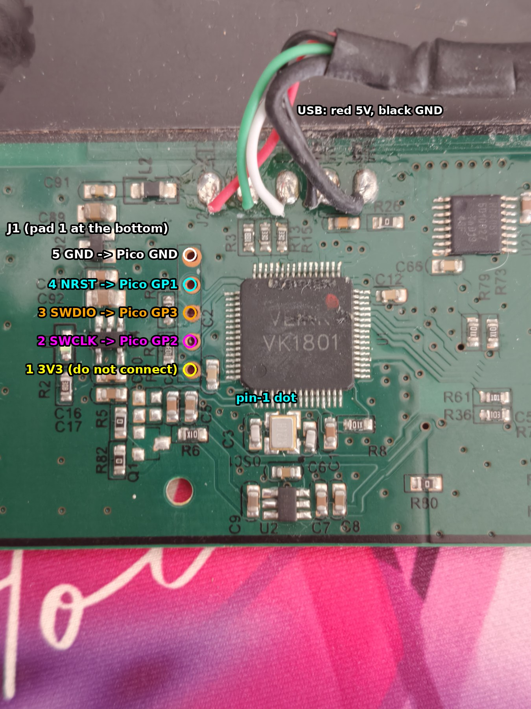
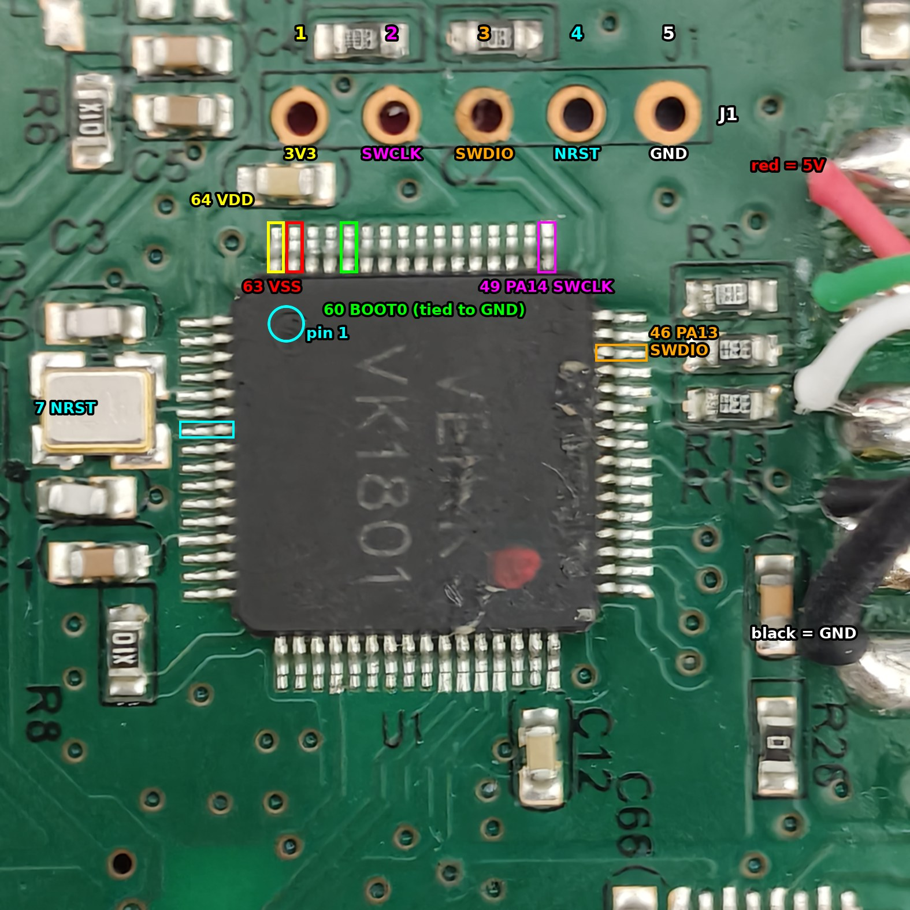

Everything learned while bringing a bricked Veikk S640 drawing tablet back to life over SWD with a Raspberry Pi Pico, then reading its firmware to find out where the report rate and the cursor smoothing come from. Every number here was measured or read from the chip or the firmware image. Things that were not verified say so.
Written 2026-10-06. Firmware analysed: Veikk's official update S640-251022 (50,276 bytes,
SHA-256 150fbc8b…287b45).
Do not run anything here on a working tablet without reading section 3 first. Getting SWD access requires removing the chip's read protection, and that erases the whole flash, including per-unit data that this document cannot give back to you (section 3.6).
-2Changelog
Newest first. Small wording fixes are not listed.
2026-10-08
nosmooth-hooktested on a tablet over SWD: in a blind test it played likenosmooth-noholdand its reports match the newest sample just as often (7.9). Over USB is still untested.- New 7.10: a firmware that reverses the smoothing from the reports alone, the way a PC filter would. Worse than stock.
- New 6.7: another user's measurement of how much pen signal the neighbouring coils pick up after one burst, and what that means for reading several coils per burst.
- 5.6: while the pen moves slowly, the tracking scan already excites the peak coil and reads its neighbours.
- New 0.3: your own bootloader over USB (idea, untested). The 12 KB lock turned out to be a rule inside Veikk's updater, not the chip.
- Pins: the muxes have six enable lines, PA8 and PB11 to PB15. PB12 to PB15 were missing (2.3, 5.4). Pointed out by another user.
- Corrected: the September USB flash most likely changed nothing (3.1), so 0.2 no longer assumes an old first 12 KB runs with 251022's upper part. All corrections are listed in 8.
2026-10-07
- New 0 (how to flash) and 0.1 (probes other than the Pico).
- New 0.2: patching over USB without touching the first 12 KB, plus the untested
nosmooth-hookpatch built for it (7.9). - Patches renamed: v1 is now
nosmooth, v2 isnosmooth-nohold. Same bytes, same hashes. - New 2.6: "V1" and "V2" are report formats, not hardware.
- 3.7: missing factory tags confirmed as the cause of a dead pen on a second tablet.
- 8: the "Veikk pulled all firmware in 2021" story marked as unsourced.
2026-10-06
- First version: the SWD unbrick, the firmware internals, why 1000 Hz isn't possible, and
the zero-smoothing patches. Later that day: the warning banner, the unit's details (2.1)
and the short version (
docs/short.md, vivlos.dev/s640).
-1What?
The S640's firmware smooths the pen position before sending it: an 8-sample average (about 14 ms of lag) and a "hold" that keeps the cursor still on small moves. That is why the cursor lags behind and creeps into place when the pen slows down. This project gets rid of both.
- Goal: every report carries the newest pen position, nothing averaged, nothing held
back. Done:
nosmooth-nohold(7.4), flashed over SWD. - On the way: bringing the tablet back over SWD after an earlier attempt bricked it (3), and reading the firmware to find where the smoothing actually is (5, 7).
- Ruled out: a higher report rate. The antenna scan takes about 3.9 ms, so 250 Hz is the ceiling (6).
- Still open: pressure smoothing (5.7), and a way to do all this over USB without opening the tablet (0.2, 0.3).
00How to flash
The short path. Section 3 explains every step, and docs/short.md has the
same steps with the do's and don'ts.
You need: a Raspberry Pi Pico running Raspberry Pi's debugprobe firmware, 4 jumper
wires, a multimeter with a beep mode, OpenOCD 0.12, Python 3, and the tablet opened up.
1. The stock firmware. If you're reading this repo, you probably already know where to
obtain the firmware. You need S640-251022.bin. Check it first:
sha256sum S640-251022.bin
# 150fbc8b9cf356224245865c76ebab194083d72d32225921e6af55e83a287b45
If you have the .hex, convert it with the gaps filled as 0xFF (the default fill of 0x00
gives a different file):
objcopy -I ihex -O binary --gap-fill 0xff S640-251022.hex S640-251022.bin
2. The patch. That part is ours: patches/nosmooth.py builds it
from the stock file. Run it in a folder that contains S640-251022.bin:
python3 nosmooth.py s640_nosmooth_nohold.bin --nohold
sha256sum s640_nosmooth_nohold.bin
# 371a4f7bc4ab181a1a41d58867bf31e7bc56dcaec656c0fe614f68995551877e
The script checks the original bytes before it changes anything and stops on a mismatch.
Without --nohold you get nosmooth (average removed, motion hold kept, 7.3).
3. Wire the Pico to J1 (2.4): pad 2 (SWCLK) to GP2, pad 3 (SWDIO) to GP3, pad 5 (GND) to
GND. Pad 4 (NRST) to GP1 is optional: this unit had it wired, but the commands below use
reset_config none, so OpenOCD never drives it. Leave pad 1 (3V3) unconnected. Beep-test
every wire from the Pico pin to the chip pin.
4. Connect and check read protection.
openocd -f interface/cmsis-dap.cfg -c 'transport select swd; set CPUTAPID 0' -f target/stm32f1x.cfg -c 'adapter speed 1000; reset_config none; init; halt; mdw 0x4002201C; shutdown'
You want SWD DPIDR 0x1ba01477. If the value printed for 0x4002201C ends in 2, read
protection is on and has to be removed first. That erases the whole chip, including
Veikk's USB updater and the per-unit settings (3.5, 3.6):
openocd -f interface/cmsis-dap.cfg -c 'transport select swd; set CPUTAPID 0' -f target/stm32f1x.cfg -c 'adapter speed 1000; reset_config none; init; halt; stm32f1x unlock 0; shutdown'
Then unplug the tablet and plug it back in.
5. Flash the patch and the factory tags.
openocd -f interface/cmsis-dap.cfg -c 'transport select swd; set CPUTAPID 0' -f target/stm32f1x.cfg -c 'adapter speed 1000; reset_config none; init; halt; program s640_nosmooth_nohold.bin 0x08000000 verify; program factory_tags_fc60.bin 0x0800FC60 verify; reset run; shutdown'
Look for ** Verified OK ** twice. The tags (patches/factory_tags_fc60.bin)
are required after an unlock: without them the pen is never detected (3.7, seen on two
tablets). Writing them again on a tablet that has them does no harm.
Back to stock: the same command with S640-251022.bin.
Not over USB: Veikk's USB updater refuses the first 12 KB, which is where the patch is (0.3.1).
0.1 No Pi Pico?
Anything that speaks SWD and works with OpenOCD will do. Only the Pico was tested on this tablet; the rest is what should work, not what was tried. Wire SWCLK, SWDIO and GND to J1 pads 2, 3 and 5 as above, and swap the start of each OpenOCD command.
| Probe | Cost | Replace -f interface/cmsis-dap.cfg -c 'transport select swd; set CPUTAPID 0' with |
|---|---|---|
| Raspberry Pi Pico (tested) | about $4 | (as written) |
| Pico 2, or another RP2040 board with GP2/GP3 broken out | $2 to $5 | (as written). Pico 2 needs debugprobe_on_pico2.uf2 |
| ST-Link V2 USB stick (clones are fine) | about $3 | -f interface/stlink.cfg -c 'transport select hla_swd; set CPUTAPID 0' |
| Segger J-Link, or any CMSIS-DAP probe | varies | -f interface/jlink.cfg -c 'transport select swd; set CPUTAPID 0' (CMSIS-DAP: as written) |
| Raspberry Pi 2/3/4 GPIO header, no probe at all | - | -f interface/raspberrypi2-native.cfg -c 'transport select swd; set CPUTAPID 0', run on the Pi itself. SWCLK = GPIO11 (pin 23), SWDIO = GPIO25 (pin 22), GND = pin 25. On a Pi 4 also add -c 'bcm2835gpio peripheral_base 0xFE000000'. Not for the Pi 5 |
On an ST-Link stick, use its SWCLK, SWDIO and GND pins and leave its 3.3V pin unconnected too. The tablet powers itself from USB.
No probe at all: there is no way yet. Veikk's USB updater cannot write the first 12 KB, where the patch is, and nothing else on USB can write flash. Opening the tablet is required. Two untested ideas for later: 0.2 and 0.3.
0.2 Untested over USB flashing (ultra mega risky pro max plus 5g fold)
Nothing in this section has been built or tested. It is a write-up of an idea, so that nobody has to work it out again. Don't try it on a tablet you can't recover over SWD.
Why USB is hard. On a tablet that still has Veikk's bootloader, the firmware can drop into
Veikk's USB updater (3.1). That updater only writes from 0x08003000 up, and both
zero-smoothing patches sit below that: the boxcar at 0x0310 and the hold at 0x17CA
(7.3, 7.4). In September S640-251022 was flashed this way on this unit, but that flash most
likely changed nothing (3.1), so whether an older first 12 KB runs with 251022's upper part
was never actually seen.
The idea: go around the locked 12 KB. The call chain to the smoothing code is:
0x6602 main loop (writable) -bl-> 0x2834 position + history (locked)
-bl-> 0x1650 motion hold (locked)
-bl-> 0x0310 boxcar (locked)
The main loop calls 0x2834 from 0x6822 and 0x685E, both above 0x3000. Point those two
calls at a small routine in the free flash after the image (0x0800C464 to 0x0800CFFF,
about 2.9 KB). It calls the original 0x2834, then copies the newest sample (histX[7],
histY[7]) into outX/outY and marks a report pending. That is what nosmooth-nohold
does, without changing a byte below 0x3000. Only 2 flash pages change. This is the
nosmooth-hook patch, built by patches/hook.py (0.2.2, details in 7.9).
Answered from the code (not yet on a tablet):
- The history is updated on every valid sample, before the hold is checked, so
hist[7]is always the newest raw position, held or not. - The report is built in the main loop after
0x2834returns (bl 0x08008780at0x080068D6), so a hook right after the call adds no lag. - The hook only marks a report pending when a new sample actually arrived this pass (the
history counter
0x2000107Fchanged) and not in the rarely used mode A, the same cases in which the stock firmware would run its output routine without the hold.
Why it is ultra mega risky:
- An interrupted USB write is exactly how this tablet was bricked (3.1). If the main loop crashes, the updater can't be reached again without SWD.
- Writing 2 pages of a 251022-based image onto a tablet running some other firmware version mixes two builds and bricks it. A tool would have to identify the firmware first, or write the whole 251022 upper part (about 38 pages, a much bigger risk window).
- No unit is known to run an older first 12 KB with 251022's upper part. A tablet updated to 251022 with Veikk's own tool should (0.3.3), but none has been checked.
- This unit can't test the USB part at all: its bootloader is gone (3.6). The first real test needs an untouched S640 and an SWD probe standing by.
A heavier variant that rewrites the first 12 KB from code running above 0x3000 is in 0.3.
0.2.1 Why not just undo the smoothing after it happens?
Fair question: if the smoothing lives in the first 12 KB, why not add "reverse smoothing" after it?
- The average can only be half-undone. The output is the average of the last 8 positions. Knowing the last 8 outputs, you could in theory work back to the newest raw position. But the firmware rounds every average down, which loses a little each time. Working backwards multiplies that error by 8 and carries it into every later step, so the result drifts and gets noisy fast.
- The hold can't be undone at all. When the pen moves only a little, the firmware does not update the output and does not send a report. Nothing leaves the chip, so there is nothing to reverse.
What works instead: don't reverse it, go around it. The firmware keeps the raw positions
in memory (the history, newest at hist[7]) and computes the average from them. Code after
the 12 KB can read that raw value directly and put it in the output just before the report
goes out. The smoothing still runs; its result just gets replaced. Think of a draft and a
polished copy: turning the polished copy back into the draft is hard, but the draft is still
on the desk, so you hand that over instead. That is the hook above, and because it also marks
a report pending on every new sample, it gets past the hold too.
Undoing it on the PC (an OpenTabletDriver filter) runs into the same two problems: the rounding, and the hold sending nothing.
0.2.2 Trying nosmooth-hook (SWD first)
Tested over SWD on 2026-10-08 (results in 7.9). Do the same, with a probe that can put stock back, before anyone thinks about USB.
- Build it in a folder with
S640-251022.bin. The script refuses anything but the exact stock file, and checks that nothing below0x08003000changed:
python3 hook.py s640_nosmooth_hook.bin
# s640_nosmooth_hook.bin 50344 bytes, sha256 4f41d2b5c537efae1bc964f4f2c1298932ff3afdaa22dba708defc47744da96c
- Flash it over SWD like any other image (0.1 for other probes), with the factory tags if the chip was unlocked:
openocd -f interface/cmsis-dap.cfg -c 'transport select swd; set CPUTAPID 0' -f target/stm32f1x.cfg -c 'adapter speed 1000; reset_config none; init; halt; program s640_nosmooth_hook.bin 0x08000000 verify; program factory_tags_fc60.bin 0x0800FC60 verify; reset run; shutdown'
- Check that it behaves like
nosmooth-nohold(7.5, 7.8):still.pyshows a few units of still-pen noise and about 267 reports per second,stroke.pygives about 0.4, the pen is found again after lifting it away, and pressure and the pen buttons still work. - If anything is off, flash
S640-251022.binors640_nosmooth_nohold.binback.
Over USB: no tool here, on purpose. Only once the SWD test passes. A USB tool would have
to confirm the tablet runs exactly S640-251022 above 0x3000 before writing anything, and
then rewrite just two pages: 0x08006800 to 0x08006BFF (both calls) and 0x0800C400 to
0x0800C7FF (image tail plus the hook). Everything in "why it is ultra mega risky" above
still applies.
0.3 Your own bootloader over USB (idea, untested)
Nothing in this section has been built or tested. Another user suggested it: get a small program onto the tablet through Veikk's updater, let that program overwrite the first 12 KB with an open bootloader, and flash complete images over USB from then on. Looking into it on 2026-10-08 changed what this document says about the 12 KB lock (3.1, 3.4).
0.3.1 The 12 KB lock is the updater's own rule
Veikk's updater matches GigaDevice's DFU example from the GD32F1x0 firmware library
(Examples/USBD/dev_firmware_update, V3.8.0 checked), moved to 0x0800D800: same USB ID
28e9:0189, same bcdDevice 1.00, same layout string format. Its strings (GD150C6T6,
GD32 DFU in FS Mode) differ from V3.8.0's, which fits an older library version. Its code
was never read (it is gone from this unit, 3.6), so this is a close match, not proof.
What that example does:
- Erase and write refuse the bootloader's own area.
dfu_mem.cfails both for any address from0x08000000up to the app start (IS_PROTECTED_AREA). The example is meant to sit at0x08000000, so that range protects the bootloader itself. Veikk moved it to0x0800D800and left the range at 12 pages, along with a layout string for a 128 KB chip. - Failures are never reported.
dfu_core.cignores what erase and write return, so the host hears "OK" for every block. - Write does not erase. Erasing is its own DFU command, and the flash controller won't program a word that isn't blank.
So the lock only binds the updater. Firmware code running from flash is not subject to it.
0.3.2 The hardware question, and a test for it
Read protection might still lock the first pages against the firmware itself; ST's F1 chips do that for pages 0 to 3. For this chip it is not known. A test on a tablet with an SWD probe attached, every step recoverable (not built yet):
- Flash
S640-251022plus a small routine, run once from the main loop like the hook in 0.2, that programs0xFFFFFFFFonto one word in each of pages 0, 3, 4 and 11 and savesFMC_STAT(0x4002200C) after each one in spare SRAM. Programming all ones can't change a single bit. - Turn read protection on (
stm32f1x lock 0), then unplug the tablet and plug it back in. - Attach with
reset_config noneand read the saved values. SRAM stays readable with protection on (3.4).WPERR(bit 4) on a page means the hardware locks it.PGERR(bit 2) or no error means the firmware can write it. - Unlock and flash back as in section 0, steps 4 and 5.
0.3.3 The real problem: getting the first stage to run
On an untouched tablet the first 12 KB is factory code nobody has read, and it holds the
reset vector. In S640-251022, the reset handler (0x08000190, page 0) first calls
SystemInit at 0x080040F8, which is above 0x3000, before anything else runs. So an
image with the first stage at 0x080040F8 takes over at the next reset, before the firmware
starts.
That only works if the tablet's first 12 KB has the same layout as 251022's. It should on a tablet updated to 251022 with Veikk's own tool: the tool goes through the same updater, so it couldn't have replaced the first 12 KB either, and the tablet still has to boot. A USB tool would have to identify the firmware first, the same problem as in 0.2.
Two rules keep the brick windows down to single page writes (tens of milliseconds each):
- Upload the page with the entry first, and give the first stage a way back. If its
payload's checksum is bad (the upload was cut short), the first stage jumps to Veikk's
updater at
0x0800D800instead, and the upload can be retried. - Order every later write so that a reset still reaches the first stage. Page 0 only
needs its reset handler to keep calling
0x080040F8, so page 0 goes last.
0.3.4 Two places to put the new bootloader
At 0x08000000 (the suggestion) |
At 0x0800D800, replacing Veikk's |
|
|---|---|---|
| First stage writes | the first 12 KB | 0x0800D800 to 0x0800FBFF (stops before the factory tags page) |
| Firmware it can flash afterwards | only firmware built to start at 0x08003000. S640-251022 and the patches here start at 0x08000000, so going back to them needs SWD |
complete images as they are, including S640-251022 and the patches here |
| Reachable after a bad flash | yes, it runs first at every reset | only through the first stage or working firmware, like Veikk's |
| Needs 0.3.2 to come out "writable" | yes, pages 0 to 11 | not to install it. To flash complete images afterwards, yes |
Either way the starting point is the same GigaDevice example, with the app start and the
protected range set for where it lives. Veikk's build fits below the factory tags at
0x0800FC60, so in under 9.1 KB.
01Quick facts
| Thing | Value | How it was found |
|---|---|---|
| Unit used | one Veikk S640. It shipped with V1-format firmware and now runs S640-251022, which is V2 format. V1 and V2 are report formats, not hardware (2.6) |
earlier notes' logs, hidraw |
| Tablet | Veikk S640, USB 2feb:0001, manufacturer string VEIKK.INC, product S640 |
lsusb, kernel log |
| MCU marking | VEIKK VK1801 (relabelled), LQFP64, 16 pins per side |
photos |
| Core | ARM Cortex-M3 r2p1, CPUID 0x412FC231 |
SWD read of 0xE000ED00 |
| SWD DPIDR | 0x1BA01477 |
OpenOCD |
Device ID (OpenOCD stm32f1x driver) |
0x13030410 |
OpenOCD |
| Flash / SRAM | 64 KB / 8 KB (0x1FFFF7E0 reads 0x00080040) |
SWD |
| Peripheral map | GigaDevice GD32F1x0 style: GPIO on AHB at 0x48000000, USBD 0x40005C00, FMC 0x40022000, ADC 0x40012400 |
firmware + SWD |
| System clock | 72.00 MHz (12 MHz crystal x 6 PLL, inferred from RCU_CFG0 = 0x0011800A) |
DWT cycle counter over 1 s |
| Debug header | J1, 5 through-holes: 3V3, SWCLK, SWDIO, NRST, GND | multimeter |
| BOOT0 | pin 60, tied straight to GND (0 Ω) | multimeter |
| Read protection | was ON (FMC_OBSTAT = 0xFFFFFF02, option byte SPC = 0x00) |
SWD |
| Pen report rate | 250 Hz (4.0 ms), limited by the antenna scan, not USB | measured |
| USB polling | bInterval 1 on all IN endpoints in S640-251022 |
descriptor + lsusb -v |
| Pen coordinates | 0.005 mm per unit (5080 LPI), X 0 to 30480, Y 0 to 20320 | report builder + measurements |
| Firmware smoothing | 8-sample boxcar on X/Y + a motion "hold" (deadzone), both removed by the nosmooth-nohold patch | breakpoints + RAM reads |
02Hardware
2.1 The unit these notes come from
| Model | Veikk S640 (6 x 4 inch). The earlier notes called it a "V1"; that name only describes the firmware it shipped with (2.6) |
| PCB revision | no version or date marking on the parts of the board in the photos (front side around the MCU and the antenna front end) |
| USB | 2feb:0001, bcdDevice 0x0000, strings VEIKK.INC / S640 |
| MCU | marked VEIKK VK1801, LQFP64, device ID 0x13030410 |
| Firmware it came with | unknown version, never read out (lost in the unlock, 3.6). It sent 9-byte V1-format pen reports (logged 2026-09-15, for example 09 41 a0 74 15 30 29 00 00), and the earlier notes measured bInterval 3 on it |
| Firmware now | S640-251022 with the nosmooth-nohold patch (7.4) |
| Pen | the pen that came with it; model not recorded. The hover frequency measurement returns a period of 2621 to 2687 TIMER2 ticks (5.7) |
If your tablet's MCU marking, USB ID, J1 layout or the bytes the patch scripts check differ from this table, stop: you have different hardware or firmware, and nothing below is known to apply.
2.2 Board

Photo orientation used throughout this document: chip text VK1801 upright, J1 is the
vertical column of 5 gold through-holes to the left of the chip, pad 1 is the bottom hole.
The USB cable is soldered to pads at the top (red = 5 V, black = GND, green and white = data).
Parts seen on the board (from the photos in images/raw/):
| Ref | Part | Notes |
|---|---|---|
| U1 | VEIKK VK1801, LQFP64 |
the MCU, a relabelled GigaDevice GD32F1x0 class part (Cortex-M3 core with STM32F0 style peripherals) |
| OSC1 | crystal | below the chip in the photo above, wired to pins 5 and 6 (PF0/PF1). 12 MHz inferred from the PLL setting |
| U7, U8, U18, U19, U21, U22 | HC4051 8-channel analog multiplexers |
select the antenna coils, each with its own enable line (2.3) |
| U10, U11, U14 | UTC MC4580 dual op-amps |
receive amplifier and integrator chain |
| U4 | small IC left of J1 | probably the 3.3 V regulator (not traced); the rail measures 3.30 to 3.33 V |
| D1 | probably the status LED | top left in the rotated photo |
| R3, R13, R15 | resistors next to pins 44 and 45 | in the USB D+/D- path (PA11/PA12) |
| J2 | USB cable pads |
images/raw/IMG20260929140039.jpg shows the antenna front end (the HC4051 and MC4580 parts).

2.3 MCU pins that matter

The second photo is the board rotated 90 degrees clockwise (pin-1 dot at the top left, J1 as a row above the chip). In it J1 pad 1 is the left hole, which is the same hole as "bottom" in the first photo.
Standard LQFP64 numbering for this family (pin 1 at the dot, counting counter-clockwise). Pins 7, 46, 49, 60, 63 and 64 were checked with a meter; the rest follow from the package pinout and from what the firmware drives.
| Pin | Name | Use on this board |
|---|---|---|
| 5, 6 | PF0, PF1 | crystal |
| 7 | NRST | reset, also on J1 pad 4 |
| 22, 23 | PA6, PA7 | mux address lines, shared by all six muxes (driven by the coil select routines) |
| 24 | PC4 | mux address line, shared |
| 27 | PB1 | switched around every coil measurement (integrator or sample control, see 5.3) |
| 28 | PB2 | set or cleared per axis before each measurement (front-end path select) |
| 30 | PB11 | mux enable, low = on (one per mux, 5.4) |
| 33 to 36 | PB12, PB13, PB14, PB15 | mux enables, low = on |
| 37 to 40 | PC6, PC7, PC8, PC9 | excitation drive, toggled together (mask 0x3C0) to generate the carrier |
| 41 | PA8 | mux enable, low = on |
| 44, 45 | PA11, PA12 | USB D-, D+ |
| 46 | PA13 | SWDIO, also on J1 pad 3 |
| 49 | PA14 | SWCLK, also on J1 pad 2 |
| 60 | BOOT0 | tied to GND on the board |
| 63, 64 | VSS, VDD |
2.4 J1 debug header
| J1 pad | Signal | Connects to | Volts, tablet powered | Diode reading to GND, unpowered |
|---|---|---|---|---|
| 1 (bottom) | 3V3 | VDD | 3.33 V | 761 (pin 64 reads about 760) |
| 2 | SWCLK | pin 49 (beep) | 0 V (PA14 has an internal pull-down) | open |
| 3 | SWDIO | pin 46 (beep) | 3.30 V (PA13 has an internal pull-up) | open |
| 4 | NRST | pin 7 (same voltage and diode reading) | 3.19 V | 1312 (pin 7 reads 1200 to 1300) |
| 5 (top) | GND | GND (beep) | 0 V | 002, beeps |
Wiring used for the recovery (Raspberry Pi Pico running debugprobe_on_pico):
| Pico pin (physical) | Pico GPIO | J1 pad |
|---|---|---|
| 4 | GP2 | 2, SWCLK |
| 5 | GP3 | 3, SWDIO |
| 3 | GND | 5, GND |
| 2 | GP1 | 4, NRST (optional, see 3.4) |
| none | none | 1, 3V3: leave unconnected, the tablet powers itself from USB |
Physical pin numbers count from the USB end of the Pico, on the row that starts with GP0.
2.5 BOOT0 cannot be used
BOOT0 (pin 60) measures 0 Ω to GND. It is tied to ground on the board, so the chip can never be strapped into its ROM bootloader from BOOT0. Bridging pin 64 (3.3 V) to pin 60, which was tried on 2026-09-29, shorts the 3.3 V rail to GND. Do not do it. The tablet's "enter DFU" USB command (section 3.1) jumps to Veikk's own bootloader in flash, which needs working firmware to receive the command. With broken firmware, SWD is the only way in.
2.6 "V1" and "V2" are firmware, not hardware
OpenTabletDriver has two S640 configurations. Both use USB ID 2feb:0001, the same size and
the same pressure range. The only difference is the pen report:
| OpenTabletDriver name | Report | Parser | X / Y |
|---|---|---|---|
VEIKK S640 ("V1") |
9 bytes | VeikkV1ReportParser |
16 bit |
VEIKK S640 V2 |
13 bytes | VeikkReportParser |
24 bit (bytes 3 to 5 and 6 to 8), pressure 16 bit at byte 9 |
The V2 configuration was added on 2021-06-15 (OpenTabletDriver commit 9771bfb1, PR #1186).
In July 2021 people were already reporting "S640 v2" tablets that the older hawku
TabletDriver could not read (hawku/TabletDriver#1162). So from about mid-2021, S640s shipped
with firmware that sends the newer report.
What that means here:
- This unit sent 9-byte V1 reports before anything was flashed (2.1). On
S640-251022it sends 13-byte reports (5.8). Same board, soS640-251022is V2-format firmware, and it runs fine on a tablet that shipped with V1-format firmware. - Any S640 running
S640-251022shows up as "S640 V2", whatever it shipped with. Seeing "V2" after flashing it says nothing about the hardware. - Another user's tablet, flashed with
S640-251022after a mass erase, has the same board: markedHK1102 VER02band20180113, with the sameVK1801, J1, six HC4051 and MC4580 layout, and the same 8 KB of SRAM. - Whether Veikk ever made an S640 with different hardware is not known. Nothing found so far points to one.
03How it was bricked, and how it was recovered
3.1 Before 2026-10-06 (from the earlier notes, written with another AI assistant)
These facts come from history/VEIKK_S640_REVERSE_ENGINEERING_original.md and the
scripts in history/. They were not re-tested on 2026-10-06 unless stated.
- The tablet exposes three HID interfaces: 0 = pen (boot mouse protocol), 1 = keys, 2 = vendor channel with an OUT endpoint.
- OpenTabletDriver sends
09 01 04 00 00 00 00 00 00on interface 2 to switch the tablet into its vendor reporting mode (the tablet answers09 81 04 …). - Writing
00 09 04 2f eb 00 00 00 00 c0(report ID 0 plus 9 bytes) to the interface 2 hidraw node makes the tablet re-enumerate as28e9:0189(GigaDevice's USB ID) with the DFU alt-setting name@Internal Flash /0x08000000/12*001Ka,116*001Kg. - The earlier notes assumed that was the chip's ROM bootloader. The firmware shows it is
not (verified 2026-10-06 in
asm/32_hardfault_reset_and_vendor_cmds.lstandasm/33_main_loop.lst): the command is checked at0x08001922(cmp r1,#0x2f,cmp r3,#0xeb,cmp r8,#0xc0), which sets the byte at0x20001030and answers0x84. The main loop then sees that byte (0x0800671A), calls0x08000BB8and0x08009A4E(probably USB shutdown, not traced), waits for a 100-tick countdown at0x2000100D, disables TIMER5, and if the word at0x0800D800looks like a stack pointer (word & 0x2FFE0000 == 0x20000000) it loads it into MSP (0x08000182,msr msp, r0) and jumps to the address stored at0x0800D804. So the DFU bootloader is Veikk code at0x0800D800in the main flash, outside the firmware image. dfu-utilfailed on that bootloader withLIBUSB_ERROR_OTHERon SET_INTERFACE, so a custom pyusb flasher (gd32_dfu_flash.py) was used. It sentS640-251022.binfrom0x08000000in 2 KB blocks, every block was reported OK, and read-back was refused.- The earlier notes concluded that the first 12 KB (
12*001Ka, read-only in the descriptor) was skipped and the rest landed. Most likely nothing landed (corrected 2026-10-08): the updater refuses the first 12 KB, never reports a failure, and doesn't erase before writing, and the script sent no erase commands, so the flash controller refused every word that wasn't already blank (0.3.1). That fits the unchanged rate in the earlier notes (248.8 Hz before, 247.8 Hz after). flash_500hz.py, the first script that erased anything, then erased the pages from0x08003000to the end of the image (0x08003000to about0x0800C7FF) and started programming page by page. Per the owner, the script died partway through programming. Nothing in the script restores the erased pages if a step fails, so the flash was left with an intact first 12 KB (old code) and a partly erased rest. Its payload,s640_firmware_500hz.bin, only changed the threebIntervalbytes of the USB configuration descriptor from 1 to 2 (0x0800A57F,0x0800A598,0x0800A5B1). That would have halved the USB polling rate, so the "500 Hz" patch could never have worked.- Result: no LED, nothing on USB. The HardFault handler of this firmware (
0x08001588) ismsr faultmaskfollowed by a system reset through AIRCR (0x05FA0004into0xE000ED0C), so a crash just restarts the chip forever without ever enumerating. - 2026-09-29: BOOT0 attempts (no effect, BOOT0 is grounded). 2026-10-03: first SWD attempt
with a Pico failed with
cannot read IDR(wiring was unverified at the time). A MicroPython pad scanner (tools/padscan.sh) was written to find the J1 pinout with the Pico's ADC; it never logged a reading (data/padscan.logonly has serial-port errors).
3.2 Finding the debug pins with a multimeter
Done in three rounds. All values are in data/session_outputs_2026-10-06.txt.
- Tablet powered, DC volts, black probe on the black USB wire. Pin 64 read 3.3 V, so the chip has power; pin 7 (NRST) read a steady 3.19 V, so the chip is not held in reset; pin 60 read 0 V. J1 pads bottom to top: 3.33, 0, 3.30, 3.19, 0 V.
- Unpowered, diode/continuity mode against GND. J1 pads: 761, open, open, 1312, beep. Pin 64 about 760, pin 7 1200 to 1300, pins 49 and 46 open. Matching readings identify pad 1 as VDD and pad 4 as NRST; the beep makes pad 5 GND.
- Unpowered, ohms. BOOT0 to GND: 0. Continuity pad 2 to pin 49 and pad 3 to pin 46: both beep.
The SWCLK/SWDIO split also matches the reset state of the pins: PA14 (SWCLK) has an internal pull-down (0 V on pad 2), PA13 (SWDIO) a pull-up (3.30 V on pad 3).
3.3 Turning a Pico into an SWD probe
- Hold BOOTSEL and plug the Pico in. It appears as
2e8a:0003 RP2 Bootwith a drive calledRPI-RP2. - Copy
debugprobe_on_pico.uf2onto it (SHA-256 in section 10). It re-enumerates as2e8a:000c Raspberry Pi Debugprobe on Pico (CMSIS-DAP), firmware version 2.0.0. - Wire it as in 2.4. Then plug in the tablet first and the Pico second.
A charge-only USB cable is a common reason for the Pico not appearing at all.
3.4 Connecting, and what went wrong first
OpenOCD 0.12.0 (nix-shell -p openocd). The command that works on this tablet:
openocd -f interface/cmsis-dap.cfg -c 'transport select swd; set CPUTAPID 0' \
-f target/stm32f1x.cfg -c 'adapter speed 1000; reset_config none' -c 'init; halt'
set CPUTAPID 0stops thestm32f1xconfig from rejecting a non-ST ID.adapter speedmust come aftertarget/stm32f1x.cfg, which sets 1000 kHz itself.reset_config noneconnects to the running chip. Connect-under-reset (srst_only srst_nogate connect_assert_srst) did not work on this board: DPIDR read back as0xFFFFFFFFand halt timed out after "external reset detected".
Error connecting DP: cannot read IDR appeared at every speed (1 MHz, 100 kHz, 50 kHz,
10 kHz) until the wiring was fixed. Two wiring faults caused it, found with the meter by
beeping from the Pico pin to the chip pin (not just to the J1 pad):
- On the first try there were no wires between the Pico and the tablet at all.
- On the second, the SWDIO wire touched both pad 2 and pad 3 (GP3 beeped to pins 46 and 49) and the SWCLK wire touched nothing.
Once the wiring was right:
Info : SWD DPIDR 0x1ba01477
Info : [stm32f1x.cpu] Cortex-M3 r2p1 processor detected
Info : [stm32f1x.cpu] target has 6 breakpoints, 4 watchpoints
Error: [stm32f1x.cpu] clearing lockup after double fault
Error: Failed to read memory at 0x08000004
The core was in lockup (a fault while handling a fault), PC 0x08001210. Flash reads
failed because of read protection:
| Address | Value | Meaning |
|---|---|---|
0x4002201C FMC_OBSTAT |
0xFFFFFF02 |
bit 1 set: flash read protection active |
0x40022010 FMC_CTL |
0x00000080 |
LK set (flash controller locked) |
0x1FFFF800 option bytes |
00ffff00 00ff00ff 00ff00ff 00ff00ff |
SPC = 0x00, nSPC = 0xFF (anything other than 0xA5 = protected) |
0x1FFFF7E0 |
0x00080040 |
64 KB flash, 8 KB SRAM |
0xE000ED00 CPUID |
0x412FC231 |
Cortex-M3 r2p1 |
0xE000EDF0 DHCSR |
0x00030003 |
halted under debug |
0x20000000 |
d5dffd01 02c9b8b6 0bd8be20 1add3856 |
SRAM content at that moment |
Read protection explains why SWD could not read flash. It is most likely not why Veikk's updater refused the first 12 KB: that is an address check in the updater's own code (0.3.1). Whether read protection also stops the firmware itself from writing the first pages is a separate question, not tested yet (0.3.2).
3.5 Removing read protection (mass erase)
openocd … -c 'init; halt; stm32f1x unlock 0; shutdown'
OpenOCD printed device id = 0x13030410 and flash size = 64 KiB. The option bytes then
read 00ff5aa5 … (SPC = 0xA5, unprotected) but FMC_OBSTAT still showed protection until
the tablet was unplugged and plugged back in (option bytes are loaded at power-on). After
that FMC_OBSTAT = 0xFFFFFF00 and the whole flash read 0xFFFFFFFF.
3.6 What the mass erase destroys
| Region | Content | Can it be restored? |
|---|---|---|
0x08000000 to 0x0800C463 |
firmware | yes, S640-251022.bin is a complete image from 0x08000000 (vector table at 0) |
0x0800D000, 0x0800D400 |
settings pages the firmware loads at start and rewrites (section 4.4) | no, per-unit content. The tablet tracks the pen without them |
0x0800D800 up to 0x0800FC5F |
Veikk's DFU bootloader (3.1) | no. It is not in any public file we have. Consequence: the "enter DFU" command and Veikk's USB updater no longer work on this tablet; the firmware checks for a valid vector table at 0x0800D800 first, so the command just does nothing now. Update over SWD instead |
0x0800FC60 to 0x0800FC7F |
factory tags checked by the firmware | yes, the four expected values are constants in the firmware (4.3) |
| anything else outside the image | unknown | unknown |
The tablet's original firmware version (whatever was on it before the DFU flash in 3.1) is
also gone; it was never read out. If you own a working S640, a dump of 0x0800D000 to
0x0800FFFF (bootloader, settings and tags) would fill the gaps in this document.
If you have a working tablet and want to keep its original flash, look at the published GD32F1x0 read-protection bypass by Positive Technologies ("GigaVulnerability") before unlocking. It was not tried here.
3.7 Flashing the firmware back
openocd -f interface/cmsis-dap.cfg -c 'transport select swd; set CPUTAPID 0' \
-f target/stm32f1x.cfg -c 'adapter speed 1000; reset_config none; init; halt;
program S640-251022.bin 0x08000000 verify;
program patches/factory_tags_fc60.bin 0x0800FC60 verify;
reset run; shutdown'
Both writes printed ** Verified OK **, and the tablet came up as 2feb:0001 with the pen
working. The factory tags only need writing once; later firmware flashes do not erase that
page (they only erase the pages the image covers).
patches/factory_tags_fc60.bin (32 bytes, unused bytes 0xFF):
0x0800FC60: 55 47 45 45 ff ff ff ff "UGEE"
0x0800FC68: 33 37 32 31 ff ff ff ff "3721"
0x0800FC70: 30 32 32 36 ff ff ff ff "0226"
0x0800FC78: 8c 42 09 d2 ff ff ff ff 0xD209428C
Without the "3721" tag the tracking scan returns immediately (4.3) and the pen is never
detected. That is the first thing to check if a re-flashed tablet sees no pen.
Seen on a second tablet (2026-10-07): another user mass-erased their S640 and flashed
S640-251022. The tablet showed up on USB but never detected the pen. Writing
factory_tags_fc60.bin brought the pen back. With the stock firmware they then saw the
cursor lag and creep into place whenever the pen slowed down or stopped, which is the stock
motion hold and 8-sample average (5.8), the two things nosmooth-nohold removes.
3.8 Flashing any image later
With the Pico still wired:
cd veikk-s640-zero-smoothing
nix-shell -p openocd --run "openocd -f interface/cmsis-dap.cfg -c 'transport select swd; set CPUTAPID 0' -f target/stm32f1x.cfg -c 'adapter speed 1000; reset_config none; init; halt; program s640_nosmooth_nohold.bin 0x08000000 verify; reset run; shutdown'"
Look for ** Verified OK **. The tablet restarts by itself. Never flash images from this
project through Veikk's USB DFU: it silently refuses the first 12 KB, which is exactly where
the zero-smoothing patches are, and an interrupted DFU flash is how this tablet was bricked.
04The firmware image
4.1 Files
| File | Size | SHA-256 | Notes |
|---|---|---|---|
S640-251022.hex (as s640_firmware_stock_251022.hex) |
132,786 bytes | 8bbc8c49…297319 |
Veikk's update file, Intel HEX. "251022" is in the name, probably 2025-10-22 |
S640-251022.bin |
50,276 bytes (0xC464) |
150fbc8b…287b45 |
same content as raw binary, linked at 0x08000000 |
Neither file is in this repository (it is Veikk's firmware). Every patch script checks the input bytes before changing them, so they refuse anything that is not this exact image.
The image starts with its vector table at 0x08000000 and contains no bootloader. Full
vector table: asm/00_data_tables.txt. The entries that matter:
| Vector | Handler | What it does |
|---|---|---|
| initial SP | 0x200018F0 |
top of the stack, 6.2 KB into the 8 KB SRAM |
| Reset | 0x08000190 |
calls SystemInit 0x080040F8 (clocks), then the C runtime at 0x0800015A, which ends in the main loop (0x0800664C) |
| NMI | 0x08001E24 |
|
| HardFault | 0x08001588 |
msr faultmask, then system reset (AIRCR = 0x05FA0004). A crash restarts the chip |
| SVCall | 0x080023B8 |
bx lr (empty) |
| PendSV | 0x08001EE0 |
bx lr (empty) |
| SysTick | 0x080040F4 |
branch veneers to 0x08005860 |
| IRQ0 | 0x0800662C |
bx lr (empty) |
| IRQ5, IRQ6, IRQ7 (EXTI) | 0x08000C40, 0x08000C42, 0x08000C44 |
the first two are bx lr |
| IRQ16 (TIMER2) | 0x080041B8 |
stores TIMER2 channel 2 captures into a 20-entry ring at 0x20001474 (count at 0x20000033) |
| IRQ17 (TIMER5) | 0x080041FC |
200 Hz housekeeping tick, continues at 0x08004544 |
| all others | 0x080001AA |
b . (hangs) |
4.2 Flash map (64 KB)
| Range | Content |
|---|---|
0x08000000 to 0x0800C463 |
firmware image S640-251022 |
0x0800C464 to 0x0800CFFF |
unused (erased) |
0x0800D000 to 0x0800D3FF |
settings page A (4.4) |
0x0800D400 to 0x0800D7FF |
settings page B (4.4) |
0x0800D800 to 0x0800FC5F |
Veikk DFU bootloader (3.1). Lost on this unit |
0x0800FC60 to 0x0800FC7F |
factory tags (4.3) |
0x0800FC80 to 0x0800FFFF |
unknown |
Pages are 1 KB. The firmware references 0x0800C464 (the end of its own image) and the
addresses above; nothing else past the image. The 0x0800C464 reference is a C startup
table entry at 0x08007320 that zeroes 0x77C bytes of RAM at 0x20001174; its handler
(0x0800663E) never reads the source address, so the flash after the image really is free.
4.3 Factory tags
Four 32-bit words at the end of flash. Each gates one function: if the word is wrong, that function returns without doing anything.
| Address | Expected | Checked at | Gates | Effect when missing |
|---|---|---|---|---|
0x0800FC60 |
0x45454755 ("UGEE") |
0x080023BE |
full scan of all 26 X and 18 Y coils (0x080023BC, 5.6) |
pen never acquired |
0x0800FC68 |
0x31323733 ("3721") |
0x08002FC8 |
tracking scan (0x08002FC4, 5.6) |
pen never tracked |
0x0800FC70 |
0x36323230 ("0226") |
0x08006556 |
baseline subtraction (0x08006554, 5.6) |
coil amplitudes never updated |
0x0800FC78 |
0xD209428C |
0x08001EF2 |
frequency, button and pressure routine (0x08001EE4, 5.7) |
no pen state, no reports |
UGEE is the Chinese tablet maker behind XP-Pen; the tag suggests this firmware comes from UGEE code (not verified). The values are fixed constants in the firmware, not derived from the chip ID, so the same 32 bytes work on any S640 with this firmware.
080023bc: 70 b5 push {r4, r5, r6, lr}
080023be: 1e 48 ldr r0, [pc, #0x78] ; =0x0800fc60
080023c0: 00 68 ldr r0, [r0]
080023c2: 1e 49 ldr r1, [pc, #0x78] ; =0x45454755
080023c4: 88 42 cmp r0, r1
080023c6: 35 d1 bne #0x8002434
080023c8: 1d 49 ldr r1, [pc, #0x74] ; =0x20000005
4.4 Settings pages
| Routine | Does |
|---|---|
0x08008268 |
copies page 0x0800D000 into RAM at 0x200004E5 (called once at start, 0x08006650) |
0x080082A0 |
loads fields from page 0x0800D400 into 0x2000108E, 0x2000003E, 0x20001090, 0x20000040, 0x20001092, 0x200008E5 (block), 0x20001058, 0x20001054 (called at start, 0x08006654) |
0x080083A0 |
erases and rewrites page 0x0800D000 from RAM (called from the vendor command handler, 0x0800198C) |
0x08008408 |
erases and rewrites page 0x0800D400 (called from 0x08001ABA, 0x08001B2C, and from the pen routine at 0x0800209C/0x080020C8) |
Flash helpers used by those: 0x08008230 (unlock), 0x08008188 (page erase),
0x080081FC (program), 0x0800817C (wait).
The pen routine calls the page B save when the byte at 0x20001054 changes to 1 or 2. That
happens after a counter at 0x20001048 reaches 500 (0x1F4) reports in a particular pen
frequency band, which looks like "hold a pen button for about 2 seconds to switch a mode".
0x20001054 is also used by the report builder to pick a smaller Y range
(0x2E8C instead of 0x40C4). What the mode is for was not worked out. With both pages
blank (0xFF) after the mass erase, position tracking works normally. Pressure, pen buttons
and express keys were not tested after the restore.
4.5 USB descriptors in the image
Device descriptor at 0x0800A3F0: 12 01 10 01 00 00 00 40 eb 2f 01 00 00 00 01 02 03 01
(USB 1.10, EP0 64 bytes, VID 0x2FEB, PID 0x0001, bcdDevice 0, string indexes 1/2/3,
1 configuration).
Configuration descriptor at 0x0800A55E (91 bytes):
| Offset | Descriptor | Bytes | Meaning |
|---|---|---|---|
| +0x00 | configuration | 09 02 5b 00 03 01 00 80 32 |
91 bytes total, 3 interfaces, bus powered, 100 mA |
| +0x09 | interface 0 | 09 04 00 00 01 03 01 02 00 |
HID, boot subclass, mouse protocol, 1 endpoint |
| +0x12 | HID | 09 21 00 01 00 01 22 89 00 |
report descriptor 137 bytes |
| +0x1B | endpoint | 07 05 81 03 08 00 01 |
EP1 IN, interrupt, 8 bytes, bInterval 1 |
| +0x22 | interface 1 | 09 04 01 00 01 03 01 02 00 |
HID, boot subclass, mouse protocol, 1 endpoint |
| +0x2B | HID | 09 21 00 01 00 01 22 9d 00 |
report descriptor 157 bytes |
| +0x34 | endpoint | 07 05 82 03 0a 00 01 |
EP2 IN, interrupt, 10 bytes, bInterval 1 |
| +0x3B | interface 2 | 09 04 02 00 02 03 00 00 00 |
HID, no subclass, 2 endpoints |
| +0x44 | HID | 09 21 00 01 00 01 22 24 00 |
report descriptor 36 bytes |
| +0x4D | endpoint | 07 05 83 03 10 00 01 |
EP3 IN, interrupt, 16 bytes, bInterval 1 |
| +0x54 | endpoint | 07 05 03 03 10 00 0a |
EP3 OUT, interrupt, 16 bytes, bInterval 10 |
lsusb -v on the restored tablet shows the same values. The host already polls the pen
endpoints every 1 ms.
05How the firmware works
5.1 Main loop and modes
Everything runs in one loop in main (0x0800664C, asm/33_main_loop.lst). Interrupts
only collect timer captures (TIMER2) and run a 200 Hz tick (TIMER5). The pen state machine
lives in the byte at 0x2000100B:
| Mode | Per pass of the loop | Meaning |
|---|---|---|
| 0 | 0x0800925C while the byte at 0x20001023 is clear; otherwise the search 0x080010F8 (and 0x080080F8 every 100 passes); a hit switches to mode 1 |
no pen |
| 3 | search 0x080010F8; a hit switches straight to mode 2 and copies the peak coils from 0x2000100E/0x2000100F |
re-acquiring |
| 1 | full scan 0x080023BC (all coils), 0x080064DC, 0x08000D0C (tuner), position 0x08002834, 0x08000390, 0x08000AF4, window 0x08003CC8 |
pen just found |
| 2 | tracking scan 0x08002FC4, baseline 0x08006554, 0x08000D0C (tuner), position 0x08002834, 0x08000390, 0x08000B24, window 0x08003CC8, pen routine 0x08001EE4, 0x08000A3C, then the report builder 0x08008780 only if the byte at 0x20001031 is set |
tracking (normal use) |
The byte at 0x20001031 is set by the boxcar output routine (5.8). When the output is not
refreshed, no pen report is sent for that pass. That is why removing the motion hold raised
the report count with the pen lying still (7.4).
Start-up calls before the loop: 0x080015F4, 0x08008268 and 0x080082A0 (settings),
0x0800855C, 0x080096E8, 0x080080F8, 0x08009554, 0x080095D4 (TIMER2),
0x08009674 (TIMER5), 0x08005DB4, 0x08000C00, 0x08003A38.
5.2 Clock and timers
- SystemInit
0x080040F8, clock setup0x08004068: HXTAL on, PLL from HXTAL,RCU_CFG0 = 0x0011800A(PLL multiplier code 4 = x6, system clock from PLL),RCU_CTL = 0x03035F83. Measured: 72.00 MHz. So the crystal is 12 MHz. - TIMER2 (
0x40000400): prescaler 0, auto-reload0xFFFF, free running at 72 MHz, channel 2 capture with interrupt (IRQ16). Used to time the pen's returned signal (5.7). - TIMER5 (
0x40001000): prescaler 999, auto-reload 359, so 72 MHz / 1000 / 360 = 200 Hz, update interrupt (IRQ17). Housekeeping only. It does not pace the pen reports. - The struct layouts passed to the timer init helper (
0x08004224) match ST's SPLTIM_TimeBaseInitTypeDef(prescaler u16, counter mode u16, period u32, clock division u16, repetition u8).
08009674: 1f b5 push {r0, r1, r2, r3, r4, lr}
08009676: 01 21 movs r1, #1
08009678: 10 20 movs r0, #0x10
0800967a: ff f7 9f fe bl #0x80093bc
0800967e: 19 4c ldr r4, [pc, #0x64] ; =0x40001000
08009680: 20 46 mov r0, r4
08009682: fa f7 15 fe bl #0x80042b0
08009686: 40 f2 e7 30 movw r0, #0x3e7
0800968a: ad f8 00 00 strh.w r0, [sp]
0800968e: 00 21 movs r1, #0
08009690: 40 f2 67 10 movw r0, #0x167
08009694: ad f8 02 10 strh.w r1, [sp, #2]
08009698: 01 90 str r0, [sp, #4]
0800969a: ad f8 08 10 strh.w r1, [sp, #8]
0800969e: 69 46 mov r1, sp
080096a0: 20 46 mov r0, r4
080096a2: fa f7 bf fd bl #0x8004224
080096a6: 01 21 movs r1, #1
080096a8: 20 46 mov r0, r4
080096aa: fa f7 f3 fd bl #0x8004294
080096ae: 01 21 movs r1, #1
080096b0: 20 46 mov r0, r4
080096b2: fa f7 f9 fd bl #0x80042a8
080096b6: 01 22 movs r2, #1
080096b8: 11 46 mov r1, r2
080096ba: 20 46 mov r0, r4
080096bc: fa f7 d1 fe bl #0x8004462
080096c0: 01 21 movs r1, #1
080096c2: 20 46 mov r0, r4
080096c4: fa f7 60 fe bl #0x8004388
080096c8: 11 20 movs r0, #0x11
080096ca: 8d f8 0c 00 strb.w r0, [sp, #0xc]
080096ce: 01 20 movs r0, #1
080096d0: 8d f8 0d 00 strb.w r0, [sp, #0xd]
080096d4: 8d f8 0e 00 strb.w r0, [sp, #0xe]
080096d8: 8d f8 0f 00 strb.w r0, [sp, #0xf]
080096dc: 03 a8 add r0, sp, #0xc
080096de: ff f7 5b fd bl #0x8009198
080096e2: 1f bd pop {r0, r1, r2, r3, r4, pc}
080096e4: 00 10 00 40 .word 0x40001000
5.3 The excitation carrier is bit-banged
The pen is a passive LC resonator. The tablet energises it with bursts of a carrier around 450 to 554 kHz and listens for it ringing back. The carrier is generated in software: 16 routines, one per frequency channel, toggle PC6 to PC9 together with NOP-timed loops.
| Table | Content |
|---|---|
0x080072B0 |
16 x u32 frequencies in Hz |
0x08006B9C |
16 x u32 pointers to the burst routines |
0x20000003 |
burst length in carrier cycles: 28 (0x1C) for a coil measurement, 45 (0x2D) for the frequency measurement |
0x2000002E |
the channel in use (0 to 15) |
| Ch | Routine | NOPs high + low | Period (cycles) | Frequency |
|---|---|---|---|---|
| 0 | 0x080045C0 |
72 + 67 | 160 | 450,000 Hz |
| 1 | 0x08004708 |
71 + 66 | 158 | 455,696 Hz |
| 2 | 0x0800484C |
70 + 65 | 156 | 461,538 Hz |
| 3 | 0x0800498C |
69 + 64 | 154 | 467,532 Hz |
| 4 | 0x08004AC8 |
68 + 63 | 152 | 473,684 Hz |
| 5 | 0x08004C00 |
67 + 62 | 150 | 480,000 Hz |
| 6 | 0x08004D34 |
66 + 61 | 148 | 486,486 Hz |
| 7 | 0x08004E64 |
65 + 60 | 146 | 493,151 Hz |
| 8 | 0x08004F90 |
64 + 59 | 144 | 500,000 Hz |
| 9 | 0x080050B8 |
63 + 58 | 142 | 507,042 Hz |
| 10 | 0x080051DC |
62 + 57 | 140 | 514,286 Hz |
| 11 | 0x080052FC |
61 + 56 | 138 | 521,739 Hz |
| 12 | 0x08005418 |
60 + 55 | 136 | 529,412 Hz |
| 13 | 0x08005530 |
59 + 54 | 134 | 537,313 Hz |
| 14 | 0x08005644 |
58 + 53 | 132 | 545,455 Hz |
| 15 | 0x08005754 |
57 + 52 | 130 | 553,846 Hz |
For every channel, NOPs + 21 = the period in cycles, and 72 MHz / period = the table value
exactly. So each NOP costs one cycle and each loop pass has 21 cycles of overhead (two GPIO
helper calls, counter, branch). One burst routine, start and end (the full 16 are in
asm/28_carrier_burst_channels.lst):
080045c0: 70 b5 push {r4, r5, r6, lr}
080045c2: 4f 48 ldr r0, [pc, #0x13c] ; =0x20000003
080045c4: 04 78 ldrb r4, [r0]
080045c6: 97 e0 b #0x80046f8
080045c8: 4e 4e ldr r6, [pc, #0x138] ; =0x48000800
080045ca: 64 1e subs r4, r4, #1
080045cc: 4f f4 70 75 mov.w r5, #0x3c0
080045d0: e4 b2 uxtb r4, r4
080045d2: 29 46 mov r1, r5
080045d4: 30 46 mov r0, r6
080045d6: fc f7 a8 fe bl #0x800132a
08004664: 00 bf nop
08004666: 00 bf nop
08004668: 00 bf nop
0800466a: 29 46 mov r1, r5
0800466c: 30 46 mov r0, r6
0800466e: fc f7 5a fe bl #0x8001326
08004672: 00 bf nop
08004674: 00 bf nop
08004676: 00 bf nop
08004678: 00 bf nop
0800467a: 00 bf nop
0800467c: 00 bf nop
0800467e: 00 bf nop
08004680: 00 bf nop
08004682: 00 bf nop
08004684: 00 bf nop
08004686: 00 bf nop
08004688: 00 bf nop
0800468a: 00 bf nop
0800468c: 00 bf nop
0800468e: 00 bf nop
08004690: 00 bf nop
08004692: 00 bf nop
08004694: 00 bf nop
08004696: 00 bf nop
08004698: 00 bf nop
0800469a: 00 bf nop
0800469c: 00 bf nop
0800469e: 00 bf nop
080046a0: 00 bf nop
080046a2: 00 bf nop
080046a4: 00 bf nop
080046a6: 00 bf nop
080046a8: 00 bf nop
080046aa: 00 bf nop
080046ac: 00 bf nop
080046ae: 00 bf nop
080046b0: 00 bf nop
080046b2: 00 bf nop
080046b4: 00 bf nop
080046b6: 00 bf nop
080046b8: 00 bf nop
080046ba: 00 bf nop
080046bc: 00 bf nop
080046be: 00 bf nop
080046c0: 00 bf nop
080046c2: 00 bf nop
080046c4: 00 bf nop
080046c6: 00 bf nop
080046c8: 00 bf nop
080046ca: 00 bf nop
080046cc: 00 bf nop
080046ce: 00 bf nop
080046d0: 00 bf nop
080046d2: 00 bf nop
080046d4: 00 bf nop
080046d6: 00 bf nop
080046d8: 00 bf nop
080046da: 00 bf nop
080046dc: 00 bf nop
080046de: 00 bf nop
080046e0: 00 bf nop
080046e2: 00 bf nop
080046e4: 00 bf nop
080046e6: 00 bf nop
080046e8: 00 bf nop
080046ea: 00 bf nop
080046ec: 00 bf nop
080046ee: 00 bf nop
080046f0: 00 bf nop
080046f2: 00 bf nop
080046f4: 00 bf nop
080046f6: 00 bf nop
080046f8: 00 2c cmp r4, #0
080046fa: 7f f4 65 af bne.w #0x80045c8
080046fe: 70 bd pop {r4, r5, r6, pc}
08004700: 03 00 00 20 .word 0x20000003
08004704: 00 08 00 48 .word 0x48000800
Delay helpers built the same way (asm/20_delay_sleds.lst):
| Routine | Body | Approximate length |
|---|---|---|
0x080068F0 |
60 NOPs, bx lr |
about 1 µs with the calling loop (the "unit" used by waits A and B) |
0x08006984 |
66 NOPs, bx lr |
about 1 µs |
0x0800696A |
push {lr}, 4 x bl 0x08006984, pop, then falls into 0x08006984 once more |
about 5 µs |
5.4 One coil measurement (0x08002464)
Called with up to two mux selections, a third coil selection and the carrier channel. Steps,
in order (asm/09_coil_measure.lst):
[0x20000003] = 28: the burst will be 28 carrier cycles.0x08000A8C: sets PC4, PA6, PA7 (mux address) and PA8, PB11, PB12, PB13, PB14, PB15 (the six mux enables) high, so every mux is off.- Coil/mux select routines from the 100-entry table at
0x08006A0Cfor the first two arguments (0xFF= skip). Each sets the address on PA6, PA7 and PC4, then pulls one enable low: PA8, PB11, PB12, PB13, PB14 or PB15, one per HC4051 (which line goes to which chip was not traced). Unused table slots point atbx lrstubs. - PB1 high (
0x0800132A, BOP register). - PC6 to PC9: push-pull outputs, then driven low (
0x08001290init,0x08001326BC register). - Carrier burst: the channel's routine from
0x08006B9C, 28 cycles on PC6 to PC9. - PC6 to PC9 back to inputs (open drain setting, no pull), driven low again.
0x08000A8Cagain, then the third coil selection.- Wait A:
[0x20001093]x0x080068F0(about 1 µs each). - PB1 low.
- Wait B:
[0x20000044]x0x080068F0. - ADC conversion (
0x080002D4with 1),0x0800696A(about 5 µs), read the ADC data register0x4001244C(0x08000218). - PB1 high,
0x08000A8C, returnADC >> 2.
The most consistent reading is that PB1 controls the receive integrator (or sample and hold): wait A is the delay after the burst before integration starts, and wait B is the integration window. That also explains the tuner below. The roles of PB1 and the PC pins come from the code, not from tracing the board.
08002464: 2d e9 ff 4f push.w {r0, r1, r2, r3, r4, r5, r6, r7, r8, sb, sl, fp, lr}
08002468: 0c 46 mov r4, r1
0800246a: 3d 49 ldr r1, [pc, #0xf4] ; =0x20000003
0800246c: 06 46 mov r6, r0
0800246e: 83 b0 sub sp, #0xc
08002470: 1c 20 movs r0, #0x1c
08002472: 9b 46 mov fp, r3
08002474: 08 70 strb r0, [r1]
08002476: fe f7 09 fb bl #0x8000a8c
0800247a: 3a 4d ldr r5, [pc, #0xe8] ; =0x08006a0c
0800247c: ff 2e cmp r6, #0xff
0800247e: 02 d0 beq #0x8002486
08002480: 55 f8 26 00 ldr.w r0, [r5, r6, lsl #2]
08002484: 80 47 blx r0
08002486: ff 2c cmp r4, #0xff
08002488: 02 d0 beq #0x8002490
0800248a: 55 f8 24 00 ldr.w r0, [r5, r4, lsl #2]
0800248e: 80 47 blx r0
08002490: df f8 d4 90 ldr.w sb, [pc, #0xd4] ; =0x48000400
08002494: 02 21 movs r1, #2
08002496: 48 46 mov r0, sb
08002498: fe f7 47 ff bl #0x800132a
0800249c: 01 27 movs r7, #1
0800249e: 8d f8 04 70 strb.w r7, [sp, #4]
080024a2: 4f f0 02 08 mov.w r8, #2
080024a6: 8d f8 05 80 strb.w r8, [sp, #5]
080024aa: 00 24 movs r4, #0
080024ac: df f8 bc a0 ldr.w sl, [pc, #0xbc] ; =0x48000800
080024b0: 4f f4 70 76 mov.w r6, #0x3c0
080024b4: 8d f8 06 40 strb.w r4, [sp, #6]
080024b8: 00 96 str r6, [sp]
080024ba: 8d f8 07 40 strb.w r4, [sp, #7]
080024be: 69 46 mov r1, sp
080024c0: 50 46 mov r0, sl
080024c2: fe f7 e5 fe bl #0x8001290
080024c6: 31 46 mov r1, r6
080024c8: 50 46 mov r0, sl
080024ca: fe f7 2c ff bl #0x8001326
080024ce: 28 49 ldr r1, [pc, #0xa0] ; =0x08006b9c
080024d0: 51 f8 2b 00 ldr.w r0, [r1, fp, lsl #2]
080024d4: 80 47 blx r0
080024d6: 8d f8 04 40 strb.w r4, [sp, #4]
080024da: 8d f8 05 80 strb.w r8, [sp, #5]
080024de: 8d f8 06 70 strb.w r7, [sp, #6]
080024e2: 00 96 str r6, [sp]
080024e4: 8d f8 07 40 strb.w r4, [sp, #7]
080024e8: 69 46 mov r1, sp
080024ea: 50 46 mov r0, sl
080024ec: fe f7 d0 fe bl #0x8001290
080024f0: 31 46 mov r1, r6
080024f2: 50 46 mov r0, sl
080024f4: fe f7 17 ff bl #0x8001326
080024f8: fe f7 c8 fa bl #0x8000a8c
080024fc: 05 98 ldr r0, [sp, #0x14]
080024fe: 55 f8 20 00 ldr.w r0, [r5, r0, lsl #2]
08002502: 80 47 blx r0
08002504: 00 20 movs r0, #0
08002506: 1b 49 ldr r1, [pc, #0x6c] ; =0x20001093
08002508: 04 e0 b #0x8002514
0800250a: 00 bf nop
0800250c: 04 f0 f0 f9 bl #0x80068f0
08002510: 40 1c adds r0, r0, #1
08002512: c0 b2 uxtb r0, r0
08002514: 0a 78 ldrb r2, [r1]
08002516: 90 42 cmp r0, r2
08002518: f8 d3 blo #0x800250c
0800251a: 02 21 movs r1, #2
0800251c: 4c 46 mov r4, sb
0800251e: 48 46 mov r0, sb
08002520: fe f7 01 ff bl #0x8001326
08002524: 00 20 movs r0, #0
08002526: 14 49 ldr r1, [pc, #0x50] ; =0x20000044
08002528: 04 e0 b #0x8002534
0800252a: 00 bf nop
0800252c: 04 f0 e0 f9 bl #0x80068f0
08002530: 40 1c adds r0, r0, #1
08002532: c0 b2 uxtb r0, r0
08002534: 0a 78 ldrb r2, [r1]
08002536: 90 42 cmp r0, r2
08002538: f8 d3 blo #0x800252c
0800253a: 01 20 movs r0, #1
0800253c: fd f7 ca fe bl #0x80002d4
08002540: 04 f0 13 fa bl #0x800696a
08002544: fd f7 68 fe bl #0x8000218
08002548: 05 46 mov r5, r0
0800254a: 02 21 movs r1, #2
0800254c: 20 46 mov r0, r4
0800254e: fe f7 ec fe bl #0x800132a
08002552: fe f7 9b fa bl #0x8000a8c
08002556: 07 b0 add sp, #0x1c
08002558: a8 08 lsrs r0, r5, #2
0800255a: bd e8 f0 8f pop.w {r4, r5, r6, r7, r8, sb, sl, fp, pc}
0800255e: 00 00 movs r0, r0
Measured: 12,905 cycles (179 µs) for one coil measurement, consistent with about 100 µs of waits + a 28-cycle burst (about 4,000 to 4,500 cycles) + GPIO and mux overhead.
The wrappers set the per-axis wait lengths and PB2 before calling it (asm/11_measure_wrappers.lst):
| Wrapper | Axis | PB2 from | Wait A copied from | Wait B copied from | Adds 0x40 to (unless 0xFF) |
|---|---|---|---|---|---|
0x08002764 |
X (26 coils) | 0x20000005 |
0x20000043 |
0x20001095 |
second argument |
0x080027C8 |
Y (18 coils) | 0x2000105B |
0x20001094 |
0x20000045 |
second and third arguments |
0x0800272C |
frequency (5.7) | 0x20000005 |
none | none |
5.5 Timing tuner (0x08003ABC)
Called from 0x08000D4E whenever both peak coils are valid; otherwise 0x08000D54 resets
both axes to the defaults (A = 5, B = 60). For each axis it measures the peak coil
(0x2000101D for X, 0x2000101E for Y) again and again (up to 50 times for X, 49 for Y):
- amplitude above 640 (
0x280): A += 2 (up to 80,0x50) - amplitude below 320 (
0x140): A -= 2 (down to 5) - in between: stop
- after each change: B = 100 - A
So the firmware keeps the signal in the ADC's sweet spot by moving the integration window, while A + B stays 100 (about 100 µs). Values read from a running tablet: A = 5, B = 60 right after start (defaults, A + B = 65 until the tuner first runs); later X A = 35, B = 65 and Y A = 49, B = 51.
08003abc: 2d e9 f0 5f push.w {r4, r5, r6, r7, r8, sb, sl, fp, ip, lr}
08003ac0: 34 4f ldr r7, [pc, #0xd0] ; =0x2000101d
08003ac2: 33 48 ldr r0, [pc, #0xcc] ; =0x200001c4
08003ac4: 32 24 movs r4, #0x32
08003ac6: 39 78 ldrb r1, [r7]
08003ac8: df f8 cc 80 ldr.w r8, [pc, #0xcc] ; =0x20000043
08003acc: df f8 cc b0 ldr.w fp, [pc, #0xcc] ; =0x20001095
08003ad0: 30 f8 11 50 ldrh.w r5, [r0, r1, lsl #1]
08003ad4: 4f f4 20 76 mov.w r6, #0x280
08003ad8: 4f f4 a0 79 mov.w sb, #0x140
08003adc: df f8 c0 a0 ldr.w sl, [pc, #0xc0] ; =0x2000002e
08003ae0: 21 e0 b #0x8003b26
08003ae2: b5 42 cmp r5, r6
08003ae4: 05 d9 bls #0x8003af2
08003ae6: 98 f8 00 10 ldrb.w r1, [r8]
08003aea: 50 29 cmp r1, #0x50
08003aec: 1e d2 bhs #0x8003b2c
08003aee: 89 1c adds r1, r1, #2
08003af0: 06 e0 b #0x8003b00
08003af2: 4d 45 cmp r5, sb
08003af4: 1a d2 bhs #0x8003b2c
08003af6: 98 f8 00 10 ldrb.w r1, [r8]
08003afa: 05 29 cmp r1, #5
08003afc: 16 d9 bls #0x8003b2c
08003afe: 89 1e subs r1, r1, #2
08003b00: c9 b2 uxtb r1, r1
08003b02: 88 f8 00 10 strb.w r1, [r8]
08003b06: c1 f1 64 00 rsb.w r0, r1, #0x64
08003b0a: 8b f8 00 00 strb.w r0, [fp]
08003b0e: fd f7 5f f8 bl #0x8000bd0
08003b12: 3a 78 ldrb r2, [r7]
08003b14: 9a f8 00 30 ldrb.w r3, [sl]
08003b18: 10 46 mov r0, r2
08003b1a: ff 21 movs r1, #0xff
08003b1c: fe f7 22 fe bl #0x8002764
08003b20: 05 46 mov r5, r0
08003b22: fd f7 a3 f8 bl #0x8000c6c
08003b26: 64 1e subs r4, r4, #1
08003b28: e4 b2 uxtb r4, r4
08003b2a: da d2 bhs #0x8003ae2
5.6 Scans
Search (0x080010F8, no pen): resets both axes to A = 5, B = 60, then four
measurements through the Y wrapper at carrier channels 3, 6, 9 and 10 (467.5, 480.0,
507.0 and 514.3 kHz) to see whether anything resonates.
Full scan (0x080023BC, pen just found, gated by "UGEE"): resets A/B to 5/60, sets
0x20000005 = 1 and 0x2000105B = 1, then measures all 26 X coils into 0x200001F8 and
all 18 Y coils into 0x20000250 at the current channel.
Tracking scan (0x08002FC4, normal use, gated by "3721"): measures only a window of
coils around the last peak on each axis, X into 0x200001F8, Y into 0x20000250. The
window bounds are bytes: X from 0x20001074 to 0x20000020, Y from 0x20001075 to
0x20000021 (the loops can also run downwards).
Window (0x08003CC8, asm/15_tracking_window.lst): from the movement of the peak since
the last report it sets how many coils to scan behind and ahead of the peak, then clamps to
the grid (X index 0 to 25, 0x19; Y index 0 to 17, 0x11). Extents written by the code:
3 behind / 6 ahead (movs r2,#3 at 0x08003CD0, movs r7,#6 at 0x08003DA0), the mirror
6 / 3, 5 / 5 (movs r4,#5 at 0x08003DDE and 0x08003E0A), 5 at 0x08003F04 and
0x08003F38, 2 / 2 (movs r4,#2 at 0x08003E58, movs r2,#2 at 0x08003F3E). Measured:
14 to 16 coil measurements per report (11 X + 5 Y and 5 X + 9 Y in two consecutive reports).
Which coil gets the burst. The window code also sets one flag per axis, 0x20001026 (X)
and 0x20001027 (Y). If the peak moved by 3 coils or more, the flag is 1
(0x08003DE4, 0x08003EFE) and every coil in the window is excited and read on its own.
If it moved less, the flag is 0 (0x08003E10, 0x08003F26) and every measurement excites
the peak coil (0x2000101D / 0x2000101E, picked at 0x08003000, 0x08003030,
0x08003070 and 0x0800309C) and reads the window coil. So while the pen moves slowly, the
neighbour readings are the pen ringing after the peak coil's burst (measured in 6.7). It is
still one burst per measurement. Read from the code, not checked on a running tablet.
Baseline (0x08006554, gated by "0226"): for each coil in the window,
corrected = raw - baseline (0 if negative), and when raw is not above the baseline the
baseline becomes raw. X: raw 0x200001F8, baseline 0x20000404, corrected 0x200001C4.
Y: raw 0x20000250, baseline 0x20000438, corrected 0x2000022C. The position math and the
tuner read the corrected arrays.
5.7 Pen frequency, buttons and pressure (0x08001EE4, gated by 0xD209428C)
- Picks a band from the current channel
[0x2000002E]: channel 0 to 5: base0x6B2F0(439,024),[0x20001059] = 0x28,[0x20000004] = 3,[0x2000105A] = 2; 6 to 8: base0x70AE2(461,538),0x26, 3, 2; 9 and up: base0x75300(480,000),0x0E, 9, 5. - Calls the frequency measurement through
0x0800272C→0x0800257C: 45-cycle burst, then 6 x0x0800696A, TIMER2 channel 2 capture on, 36 x0x0800696A(about 180 µs gate), capture off. It returnscapture[2] - capture[1]in 72 MHz ticks (0 if fewer than 2 captures). Measured while hovering: 2621 to 2687. Measured cost: about 23,300 cycles (0.32 ms). f = 72,000,000 / period + base(0x044AA200= 72,000,000). 0 → no pen.- Finds the closest entry of the carrier table and stores that channel in
0x2000002E. If the channel jumps by more than 2 from last time, it bails out (0x08000CA4). - Decodes the pen state from
f(stored at0x20000028) with these thresholds:0x7B188504,200,0x7AF94503,700,0x7C31C508,700,0x7975C497,500,0x75EB8483,000,0x75CC4482,500,0x7704C487,500,0x74554476,500,0x74748477,000,0x71E44466,500,0x6FD10458,000,0x79950498,000,0x7EB58519,000. The state goes to0x20001028(1, 2 or 3; probably which side button is held). - Pressure:
(f - f0) * 16383 / span, capped at0x3FFF(16383, 14 bit):
| State | f0 | span | full pressure at |
|---|---|---|---|
| 3 | 466,500 (0x71E44) plus an amplitude-dependent margin |
10,500 (0x2904) |
477,000 |
| 2 | 487,500 (0x7704C) |
10,500 (0x2904) |
498,000 |
| 1 | 508,700 (0x7C31C) |
10,300 (0x283C) |
519,000 |
- Tip-down debounce: a counter at
0x2000102Bmust reach 4 before a non-zero pressure is passed on (4 reports, about 16 ms). - Pressure smoothing: an 8-entry history at
0x200003F4, output = average of the 8 (0x2000103C). On a fresh touch with pressure of at least 24, the history is filled with the new value first. This 8-sample pressure average is not patched by nosmooth or nosmooth-nohold. - A margin added to f0 of states 3 and 2 depends on the amplitude at
0x2000107C(set by0x08000B24) and on X wait A: if the amplitude is under 320,(320 - amp) * 8; if A is 15 or less, plus(15 - A) * 64. With an amplitude under 8, no pressure is reported at all.
5.8 Position, history, smoothing and the report
0x08002834 (asm/12_position_and_history.lst), every report:
- Raw X =
0x08001330(), raw Y =0x0800142C()from the corrected coil amplitudes (interpolation, not analysed;asm/29_…andasm/30_…).0xFFFF= invalid. - Two signed bytes (
0x20000022,0x20001077) go through tables at0x080070D8,0x080071A2and0x080071FCinto0x200010A6and0x20000046. These end up as the two last bytes of the report (tilt, most likely). - On the first valid sample after the pen appears: all histories are filled with it.
- A 19-entry raw history (X at
0x2000045C, Y at0x20001374, newest at index 18). Whenever its counter0x2000107Freaches 19 it is reset to 3 and a despiked average is computed (each inner sample that is a local peak or dip is replaced by its neighbours' mean, then entries 1 to 16 are averaged). That average is only used by path A below. - The 8-entry history used for the output: X at
0x20000482, Y at0x2000139A, shifted down every report, newest at index 7 (strh r5,[r2,#0xe]at0x08002CCA). Deltas (newest minus previous) go into 7-entry arrays at0x20000492(X) and0x200013AA(Y). - Every 8 reports (
0x200010AAcounter): 8-sample sums into 16-entry arrays (0x200013B8,0x200013F8), their differences into0x20001438and0x200004A0, and sign changes counted into0x2000004Aand0x200010AB. These feed the motion state machine. - An "inside the active area" flag at
0x20000030(cleared when X < 3560, X > 22130, Y < 3760 or Y > 14580). - If
0x2000107E(a mode flag) is set: path A (0x08002E62, old "site 2"), which moves the output only on large jumps, toward the despiked average, half way at a time. Never reached in normal use (hardware breakpoints, 7.2). - Otherwise: the motion state machine
0x08001650(below), then path B (0x08002ED6, old "site 3"): only when the 8-report counter just wrapped, the state machine has said "still" for 8 or more reports (0x2000003D), and0x2000107Eis clear. It moves the output half way toward the 8-sample average when they differ by more than a margin (16 plus an amplitude-dependent term). Not hit during the breakpoint test (the pen was moving).
Motion state machine (0x08001650, asm/06_motion_state_machine.lst):
- Sums
|delta|over the 7 X deltas and the 7 Y deltas, and counts direction reversals on each axis. - Uses the larger sum (
r2). If both axes reversed more than once (jitter), or the sum is small, it goes to the "hold" states. - Thresholds on the sum: 448 (
0x1C0) state 4, 112 (0x70) state 3, 28 (0x1C) state 2, 21 (0x15) borderline. State byte:0x2000102E. - At
0x080017CA: states 4, 3, 2 call the output routine0x08000310withr0 = 2(after writing 7, 6 or 4 to0x20000031; no other direct reference to that byte exists). States 0 and 1 skip it, so the output and the report hold still. 0x2000003Dcounts consecutive "hold" passes (used by path B).
080017c6: 08 20 movs r0, #8
080017c8: 20 70 strb r0, [r4]
080017ca: 9a f8 00 00 ldrb.w r0, [sl]
080017ce: 55 46 mov r5, sl
080017d0: 04 28 cmp r0, #4
080017d2: 08 d0 beq #0x80017e6
080017d4: 03 28 cmp r0, #3
080017d6: 09 d0 beq #0x80017ec
080017d8: 02 28 cmp r0, #2
080017da: 09 d0 beq #0x80017f0
080017dc: 0d e0 b #0x80017fa
080017de: 09 78 ldrb r1, [r1]
080017e0: 08 29 cmp r1, #8
080017e2: e1 d2 bhs #0x80017a8
080017e4: ef e7 b #0x80017c6
080017e6: 84 f8 00 80 strb.w r8, [r4]
080017ea: 03 e0 b #0x80017f4
080017ec: 06 20 movs r0, #6
080017ee: 00 e0 b #0x80017f2
080017f0: 04 20 movs r0, #4
080017f2: 20 70 strb r0, [r4]
080017f4: 02 20 movs r0, #2
080017f6: fe f7 8b fd bl #0x8000310
080017fa: 29 78 ldrb r1, [r5]
080017fc: 0c 48 ldr r0, [pc, #0x30] ; =0x2000003d
080017fe: 01 29 cmp r1, #1
08001800: 03 d0 beq #0x800180a
08001802: 00 21 movs r1, #0
08001804: 01 70 strb r1, [r0]
08001806: bd e8 fc 8f pop.w {r2, r3, r4, r5, r6, r7, r8, sb, sl, fp, pc}
Output routine (0x08000310, the "boxcar"): unless 0x2000107E is set, sets
0x20001031 = 1 (report pending) and writes the output coordinates 0x20001040 (X) and
0x20001042 (Y):
r0 = 2(the only value the firmware passes): average of all 8 history entries (sum >> 3)r0 = 1: average of entries 4 to 7 (sum >> 2), never used
An 8-sample moving average at about 250 reports per second delays the cursor by 3.5 samples (group delay), about 14 ms, plus the time for the average to catch up after a stop.
08000310: f0 b5 push {r4, r5, r6, r7, lr}
08000312: 19 49 ldr r1, [pc, #0x64] ; =0x2000107e
08000314: 09 78 ldrb r1, [r1]
08000316: 00 29 cmp r1, #0
08000318: 1c d1 bne #0x8000354
0800031a: 18 4a ldr r2, [pc, #0x60] ; =0x20001031
0800031c: 01 21 movs r1, #1
0800031e: 18 4c ldr r4, [pc, #0x60] ; =0x20001040
08000320: 11 70 strb r1, [r2]
08000322: 18 4d ldr r5, [pc, #0x60] ; =0x20001042
08000324: 18 49 ldr r1, [pc, #0x60] ; =0x20000482
08000326: 19 4a ldr r2, [pc, #0x64] ; =0x2000139a
08000328: 01 28 cmp r0, #1
0800032a: 14 d0 beq #0x8000356
0800032c: 02 28 cmp r0, #2
0800032e: 11 d1 bne #0x8000354
08000330: 0b 88 ldrh r3, [r1]
08000332: 16 88 ldrh r6, [r2]
08000334: 5f f0 01 00 movs.w r0, #1
08000338: 31 f8 10 70 ldrh.w r7, [r1, r0, lsl #1]
0800033c: 3b 44 add r3, r7
0800033e: 32 f8 10 70 ldrh.w r7, [r2, r0, lsl #1]
08000342: 40 1c adds r0, r0, #1
08000344: c0 b2 uxtb r0, r0
08000346: 3e 44 add r6, r7
08000348: 08 28 cmp r0, #8
0800034a: f5 d3 blo #0x8000338
0800034c: d8 08 lsrs r0, r3, #3
0800034e: 20 80 strh r0, [r4]
08000350: f0 08 lsrs r0, r6, #3
08000352: 28 80 strh r0, [r5]
08000354: f0 bd pop {r4, r5, r6, r7, pc}
08000356: 0b 89 ldrh r3, [r1, #8]
08000358: 16 89 ldrh r6, [r2, #8]
0800035a: 05 20 movs r0, #5
0800035c: 31 f8 10 70 ldrh.w r7, [r1, r0, lsl #1]
08000360: 3b 44 add r3, r7
08000362: 32 f8 10 70 ldrh.w r7, [r2, r0, lsl #1]
08000366: 40 1c adds r0, r0, #1
08000368: c0 b2 uxtb r0, r0
0800036a: 3e 44 add r6, r7
0800036c: 08 28 cmp r0, #8
0800036e: f5 d3 blo #0x800035c
08000370: 98 08 lsrs r0, r3, #2
08000372: 20 80 strh r0, [r4]
08000374: b0 08 lsrs r0, r6, #2
08000376: ec e7 b #0x8000352
08000378: 7e 10 00 20 .word 0x2000107e
0800037c: 31 10 00 20 .word 0x20001031
08000380: 40 10 00 20 .word 0x20001040
08000384: 42 10 00 20 .word 0x20001042
08000388: 82 04 00 20 .word 0x20000482
0800038c: 9a 13 00 20 .word 0x2000139a
Report builder (0x08008780, asm/22_report_builder.lst) reads 0x20001040/0x20001042
(0xFFFF = no pen), subtracts the border and clamps:
- X:
outX - 0x618(1560), clamped to 0 to 22570 (0x5E42 - 0x618 = 0x582A) - Y:
outY - 0x6E0(1760), clamped to 0 to 14820 (0x40C4 - 0x6E0), or to 10156 (0x2E8C - 0x6E0) in the mode from 4.4
then scales for the vendor report (verified against measured reports):
X = (outX - 1560) * 30480 / 22570Y = 20320 - (outY - 1760) * 20320 / 14820(Y is flipped)
30480 x 20320 units over the 152.4 x 101.6 mm (6 x 4 inch) active area is 0.005 mm per unit (5080 LPI).
Vendor pen report on interface 2 (13 bytes as read from hidraw; the firmware's buffer at
0x200001B5 has one flag byte in front):
| Byte | Content |
|---|---|
| 0 | 0x09 report ID |
| 1 | 0x41 |
| 2 | status: 0xA0 in range, bit 0 tip, bits 1 and 2 buttons; 0xC0 out of range |
| 3 to 5 | X, 24 bit little endian |
| 6 to 8 | Y, 24 bit little endian |
| 9, 10 | pressure, 0 to 16383 |
| 11, 12 | two signed bytes from step 2 (tilt, most likely) |
Example, pen moving: 09 41 a0 78 53 00 b3 29 00 00 00 00 00 (X 21368, Y 10675, no tip).
Pen lying flat on the surface: 09 41 a1 f4 11 00 b0 15 00 a3 0b 00 00 (tip bit set,
pressure about 2,980).
5.9 Time per report (tracking mode, pen hovering)
| Part | Cycles | Time |
|---|---|---|
whole report (pass to pass over 0x08001F94) |
279,584 to 289,588 (one pass 253,791) | about 3.9 ms |
| one coil measurement | 12,905 | 179 µs |
| coil measurements per report | 14 to 16 | about 2.6 ms |
| frequency/pressure measurement | 23,256 to 23,428 | 0.32 ms |
| everything else (position math, USB, housekeeping) | about 65,000 | about 0.9 ms |
PC sampling (8000 samples of DWT_PCSR) found 72 % of all samples on a nop: carrier
bursts plus integration waits. The rest of the work alone is more than 1 ms.
5.10 RAM map
| Address | Size | Meaning |
|---|---|---|
0x20000003 |
u8 | carrier burst length in cycles (28 coil, 45 frequency) |
0x20000004 |
u8 | band parameter (3 or 9), set by the pen routine |
0x20000005 |
u8 | PB2 level for X and frequency measurements |
0x20000018 |
u8 | 0xFF = skip the pen routine |
0x20000020, 0x20000021 |
u8 | tracking window end, X and Y |
0x20000022 |
s8 | input to the step 2 tables (tilt X?) |
0x20000028 |
u32 | measured pen frequency in Hz |
0x2000002E |
u8 | carrier channel (0 to 15) |
0x20000030 |
u8 | inside-active-area flag |
0x20000031 |
u8 | 8/7/6/4 written by the state machine, no other direct reference |
0x20000033 |
u8 | TIMER2 capture count (wraps at 20) |
0x2000003C |
u8 | dominant axis from the state machine |
0x2000003D |
u8 | consecutive hold passes |
0x20000043, 0x20001095 |
u8 | X wait A and wait B |
0x20001094, 0x20000045 |
u8 | Y wait A and wait B |
0x20001093, 0x20000044 |
u8 | wait A and wait B used by the current measurement |
0x20000046, 0x200010A6 |
s16 | step 2 outputs (report bytes 11 and 12) |
0x2000004A, 0x200010AB |
u8 | slow sign-change counters (state machine input) |
0x200001B5 |
15 bytes | vendor report buffer (flag + 14 bytes) |
0x200001C4, 0x2000022C |
26 / 18 x u16 | corrected coil amplitudes, X / Y |
0x200001F8, 0x20000250 |
26 / 18 x u16 | raw coil amplitudes, X / Y |
0x200003F4 |
8 x u16 | pressure history |
0x20000404, 0x20000438 |
u16 arrays | coil baselines, X / Y |
0x2000045C, 0x20001374 |
19 x u16 | raw position history, X / Y |
0x20000482, 0x2000139A |
8 x u16 | output history, X / Y (newest at [7]) |
0x20000492, 0x200013AA |
7 x s16 | position deltas, X / Y |
0x200004A0, 0x20001438, 0x200013B8, 0x200013F8 |
16 x u32 | 8-report sums and their differences |
0x200004E5 |
1 KB | RAM copy of settings page A |
0x20001000 |
struct | main loop state; +0x0B mode, +0x0D countdown, +0x30 DFU request, +0x31 report pending |
0x2000101D, 0x2000101E |
u8 | peak coil, X / Y (0xFF none) |
0x20001028 |
u8 | pen state from the frequency (1/2/3) |
0x2000102B |
u8 | tip debounce counter |
0x2000102E |
u8 | motion state (0 to 4) |
0x20001030 |
u8 | DFU request (set by the vendor command) |
0x20001031 |
u8 | report pending |
0x2000103C |
u16 | pressure output |
0x20001040, 0x20001042 |
u16 | output X, Y (0xFFFF = none) |
0x20001048 |
u16 | 500-report counter for the mode switch |
0x20001054 |
u8 | mode saved to settings page B |
0x2000105B |
u8 | PB2 level for Y measurements |
0x20001074, 0x20001075 |
u8 | tracking window start, X and Y |
0x2000107C |
u16 | amplitude written by 0x08000B24, read by the pen routine |
0x2000107E |
u8 | mode flag that enables path A and disables the output routine; only read in the image (no direct writer, maybe written through the 0x20001000 struct) |
0x2000107F |
u8 | 19-entry history counter |
0x200010AA |
u8 | 8-report counter |
0x20001474 |
20 x u16 | TIMER2 capture ring |
06Report rate: why 1000 Hz is not possible here
6.1 Measured rate
All measurements: pen reports read straight from the interface 2 hidraw node while OpenTabletDriver 0.6.7 was running (it puts the tablet into the vendor report mode).
| Condition | Firmware | Result | Source |
|---|---|---|---|
| hovering and moving, 15 s | stock | 2460 reports, median interval 3.99 ms (250 Hz), mean while moving 243 Hz, shortest 0.20 ms | data/rate_stock.txt |
| pen lying flat, 6 s | stock | 209 Hz and 207 Hz (two runs), intervals: mostly 4 ms, some 3 and 5 ms | data/still_stock*.txt |
| earlier notes, with the tablet's previous firmware | old | 248.8 Hz, 99.5 % of intervals at 4 ms | history/ |
The pen endpoint already has bInterval 1, so the host asks for a report every 1 ms. A
report that is ready after 3.4 ms waits for the next poll and shows up at 4 ms. Measured
intervals are therefore whole milliseconds, and the possible steady rates are
1000, 500, 333 and 250 Hz. To reach 333 Hz the scan must finish in under 3 ms, and 500 Hz
needs under 2 ms.
6.2 Why the scan takes about 3.9 ms
Section 5.9. About 15 coil measurements at 179 µs each, plus a 0.32 ms frequency measurement, plus about 0.9 ms of other work. The coil measurements are mostly physics: a 28-cycle burst at about 500 kHz (56 µs) and about 100 µs of waiting and integrating per coil. The non-waiting work alone is over 1 ms, so even a firmware with no waits at all (which would not see the pen) could not reach 1000 Hz. A realistic ceiling with careful tuning is around 300 to 330 Hz.
6.3 How the Wacom "1000 Hz" firmwares do it
Sources: https://files.shav.it/osu/tablet/ ("tabletvit") and https://xstarry.dev/firmware,
both looked at on 2026-10-06. Snapshots in wacom/.
What their pages say (verbatim, wacom/tabletvit_page_strings_2026-10-06.txt):
- "pro pen 3 guarantees 1000 hz; other pens will do 400 hz or higher."
- "custom firmware enables a 1000 hz scan rate and disables firmware filtering. requires pro pen 3."
- "flashed firmware only reaches around 500 hz"
- motion sync: "aligns tablet scan timing with usb reports."
- the page script accepts report rates from 133 to 1000
xstarry's catalog (wacom/xstarry_firmware_catalog_snapshot_2026-10-06.json, download
counts as of that day):
| Firmware | Downloads |
|---|---|
| CTL-472 / CTL-672 700hz Firmware (Position Only, No tip) | 22706 |
| CTL-472 / CTL-672 600hz Firmware (Tip) | 17943 |
| CTL-472 / CTL-672 200hz Firmware V2 | 11587 |
| CTL-472 / CTL-672 Original Firmware | 7660 |
| CTL/CTH 480/680 600hz Firmware (Tip) | 7605 |
| CTL-4100/4100WL Original Firmware (1.11) | 6574 |
| CTL/CTH 480/680 700hz Firmware (Position Only, No tip) | 5959 |
| CTL/CTH 480/680 200hz Firmware V2 | 5167 |
| PTK-470 Original Firmware (1.06) | 4197 |
| CTC-4110 500hz Firmware (1.07) | 3941 |
| CTC-4110 Original Firmware (1.07) | 3793 |
| CTL-4100/4100WL 500HZ Firmware V1 | 2259 |
| CTL-6100/6100WL 500HZ Firmware V1 | 175 |
| CTL-6100/6100WL Original Firmware (1.11) | 93 |
Note the "Tip" (600 Hz) and "Position Only, No tip" (700 Hz) pairs: dropping the pressure measurement buys about 100 Hz. Those Wacom models report at 133 Hz with stock firmware, so there was far more slack to remove than on the S640.
CTC-4110 (ARM, readable): the 1.07 "official" and "459hz" files are Wacom .wac files
(a WACOM2… header line plus Motorola S-records). They hold the firmware twice (banks at
0x08018000 and 0x08052000); both copies get the same patch, and each bank's checksum word
changes. 30 bytes differ in total (wacom/ctc4110_459hz_vs_official_1.07_diff.txt):
| Address (bank 1 / bank 2) | Stock | 459 Hz | What it is |
|---|---|---|---|
0x08018570 / 0x08052570 |
31 f4 80 71 bics r1,r1,#0x100 |
41 f4 80 71 orr r1,r1,#0x100 |
sets a configuration bit instead of clearing it |
0x08018590 / 0x08052590 |
31 f0 80 61 bics r1,r1,#0x4000000 |
41 f0 80 61 orr r1,r1,#0x4000000 |
same, another bit |
0x0803AC0A / 0x08074C0A |
38 b5 05 00 push {r3,r4,r5,lr}; movs r5,r0 |
00 20 70 47 movs r0,#0; bx lr |
a function stubbed to return 0 |
0x08041643 / 0x0807B643 |
05 |
02 |
a count in a table, 5 to 2 |
0x08041651 / 0x0807B651 |
03 |
02 |
a count in a table, 3 to 2 |
0x0804185C / 0x0807B85C |
5f 06 (1631) |
e5 05 (1509) |
a timing value, about 7.5 % shorter |
0x08042666 / 0x0807C666 |
11 (17) |
08 |
a count, 17 to 8 |
0x08045F00 / 0x0807FF00 |
ea 40 2f 6e / 28 1b f2 c2 |
b7 cc 78 9c / 75 97 a5 30 |
bank checksums |
The meanings in the last column are a reading of the values, not traced through that firmware. They match the general idea: fewer repetitions per measurement and shorter scan timing.
CTL-472, CTL-480 (LC87 8-bit core): the custom builds differ from stock in thousands of
bytes (5,140; 14,715; 12,713 of 49,152), i.e. rebuilt or heavily rewritten code
(wacom/lc87_pairs_diff_sizes.txt). Not analysed further.
None of their firmware files are in this repository; their SHA-256 values are in
wacom/hashes_of_files_analysed.txt.
6.4 Experiment: shorter integration window (T = 80)
patches/scanpatch.py 80 70 test_t80.bin changes the tuner so A + B = 80 instead of 100
and A tops out at 70 instead of 80 (4 bytes, asm/patched_t80_tuner.lst):
| Offset | Stock | T = 80 | Instruction |
|---|---|---|---|
0x3AEA |
50 |
46 |
cmp r1,#0x50 → #0x46 (X, A limit) |
0x3B08 |
64 |
50 |
rsb.w r0,r1,#0x64 → #0x50 (X, B = T - A) |
0x3B48 |
50 |
46 |
same as 0x3AEA, Y |
0x3B66 |
64 |
50 |
same as 0x3B08, Y |
| Measurement | Stock | T = 80 |
|---|---|---|
| hovering and moving: mean report rate while moving | 243 Hz | 268 Hz (3634 reports, median 3.90 ms) |
| pen lying flat: average rate | 209 / 207 Hz | 199 / 198 Hz |
| pen lying flat: most common interval | 4 ms | 3 ms (349 of 1193), but more 5 ms gaps |
| pen lying flat, untouched: X position | 4596, then 4593 after going back to stock | 5246 |
X moved by 650 units (3.25 mm) while nobody touched the pen, and came back when stock was flashed again. Y readings moved by up to 180 units between all runs, stock included, so Y is inconclusive. A shorter integration window changes the coil amplitudes the position interpolation sees, which shifts the computed position. About 10 % more reports for a 3 mm offset is not worth it. Stock was flashed back.
6.5 Experiment: "position only" and a smaller window (both failed)
Built with patches/nosmooth.py v3.bin --nohold --fast and
patches/build_window_only.py (31 and 27 bytes different from stock):
| Change | Bytes | Result |
|---|---|---|
replace the frequency/pressure call at 0x08001F94 (00 f0 ca fb, bl 0x0800272C) with 40 f6 69 20 (movw r0,#0xa69, 2665 = the hover value measured with tools/pval.tcl) |
4 | pen never detected. The frequency measurement is also what picks the carrier channel and decides that a pen is present (5.7), so a fixed value cannot stand in for it |
tracking window extents: 0x3CD0 3→2, 0x3DA0 6→4, 0x3DDE 5→3, 0x3E0A 5→3, 0x3F04 5→3, 0x3F38 5→3 |
6 | tracks the pen, but never finds it again after it is lifted away. Which of the six values breaks re-acquisition was not bisected |
Both were reverted to nosmooth-nohold. Expected gain had they worked: about 0.32 ms + 0.6 ms, from 3.93 ms to about 3.0 ms (about 330 Hz).
6.6 What is left to try
- Bisect the six window constants and keep only the ones that do not break re-acquisition (maybe 10 to 15 % more reports).
- Shorten the frequency measurement's gate (36 x 5 µs) instead of skipping it. It only needs two TIMER2 captures (maybe 5 %).
- Re-tune the position interpolation together with a shorter integration window, the way the Wacom mods appear to. Large effort, uncertain result.
- Read several coils after one burst. Limited by how fast the pen's ring-down fades (6.7).
Always test lifting the pen away and bringing it back, and measure accuracy, not just Hz.
6.7 Measured by another user: the pen signal on the neighbouring coils
Another user measured this on their own tablet over SWD (2026-10-08). The numbers below are
theirs, quoted from their write-up, not repeated here. Setup: the coil measurement of 5.4,
burst on Y coil y at carrier channel 9 (507 kHz), but read on coil y + d (the third
selection) for d = -2 to +2. Wait A = 0, 5, 10 and 20, wait B = 60 throughout (units of about
1 µs, 5.3). Values are the routine's return value, ADC >> 2, so 0 to 1023.
Pen over the tablet, A = 5 (average of two tries), and what is left at A = 20:
| Coil | A = 5 | vs. coil y |
A = 20, as % of A = 5 |
|---|---|---|---|
| y - 2 | 125 | 15 % | 38 % |
| y - 1 | 749 | 90 % | 57 % |
| y (burst) | 835 | 100 % | 80 % |
| y + 1 | 806 | 97 % | 72 % |
| y + 2 | 385 | 46 % | 52 % |
What it shows:
- Pen away: about 145 at A = 0 on every coil, two coils away too, and exactly 0 from A = 5 up. The 145 is a transient from the end of the burst, not the pen. It is gone by A = 5 (1 to 4 were not tried), which fits the tuner's lower limit of 5 (5.5). Exactly 0, instead of noise around a baseline, also means the front end clamps at the bottom, so "no crosstalk without the pen" holds only down to that floor (see below).
- The neighbours pick up most of the signal. The pen keeps ringing after the burst, and the coils next to the excited one see almost as much of it. The stock firmware already relies on this: while the pen moves slowly, it excites the peak coil and reads the others (5.6).
- The readings are lopsided (y + 1 > y - 1, y + 2 > y - 2): the pen sits a little towards +y. That asymmetry is what the position math works from.
- The centre clips at about 841 to 844 (about 2.7 V, if the ADC reference is 3.3 V). The test held A at 5. In normal use the tuner (5.5) raises A until the peak coil reads 320 to 640, which is how stock firmware avoids clipping.
- One decay time, not five. Their write-up reads the five percentages as decay times of 15 to 70 µs. One pen rings down with one time constant, so the spread must come from the front end. One time constant τ, a floor c (the front end outputs nothing below it) and the clipping explain all five. With reading = signal - c and the signal falling as e^(-A/τ), reading(20) = r x reading(5) - c x (1 - r), with r = e^(-15/τ): a straight line. Through y - 2, y - 1 and y + 2, the coils that do not clip, r = 0.61, so τ ≈ 30 µs and the floor is about 80 counts, with all three within 3 counts of the line. y and y + 1 sit above it, as they should if their A = 5 readings are clipped. The line puts their unclipped values at about 1150 and 1000. The 60 µs window does not bend this: for an exponential, the ratio of two equally long windows is exactly e^(-ΔA/τ). The estimate is rough because it rests on three points, two unknowns and rounded percentages, not because of the window.
Same test on the tablet these notes come from, pen away (2026-10-08,
tools/sweep.tcl, data/sweep_penaway_2026-10-08.txt; burst and read on Y coil 8 ± 2,
channel 9, B = 60): the transient is about 41 to 51 at A = 0 (not 145), 18 to 40 at A = 1,
and exactly 0 from A = 2 up. Going from about 25 to exactly 0 in 1 µs suggests the floor
subtracts, rather than the transient simply fading. A sweep of B at A = 0 on the burst coil
gave 73, 89, 87, 81, 75, 61, 41 for B = 0, 2, 5, 10, 20, 40, 60: the reading falls as B
grows. A plain integrator would hold or grow, so the stage that PB1 releases leaks, and
"integration window" (5.4) is a loose name for B. That does not change the τ estimate above,
because the stage still scales with its input. How B behaves with the pen over the tablet is
not measured yet.
What it means for reading several coils after one burst. Each measurement today has its own burst: 28 carrier cycles, about 55 µs of the 179 µs (5.4). One burst for several coils would save most of that, but:
- All coils share one receive path. The measurement selects one receive coil, gates one stage with PB1 and starts one ADC conversion (5.4). Reads after one burst would come one after the other, not at the same time.
- With τ ≈ 30 µs, a second read whose window starts 65 µs after the first one's (A + B) sees about 12 % of the signal, and most of that is under the floor. With stock windows, one burst serves one read.
- Shorter windows could fit 2 or 3 reads into one ring-down. But each read gets less signal, each slot needs its own gain correction, and the edge coils that carry the position information (y ± 2 here) are the first to drop under the floor. A window only 20 % shorter already moved the position by 3 mm (6.4), so the position math would need redoing too.
Not tried. The first test worth doing: how much of y ± 2 is left with a 10 to 15 µs window.
07Zero smoothing
7.1 What the earlier patch claimed, and what is true
history/scripts/create_zero_smoothing_fw.py patched three places:
| Site | Bytes | Claimed | Verified 2026-10-06 |
|---|---|---|---|
0x08000310 |
f0 b5 → 70 47 (bx lr) |
removes the 8/4-sample boxcar | it is the boxcar, but it is also the only routine that writes the output coordinates and sets "report pending" (0x20001031). With bx lr the main loop would never call the report builder in tracking mode: no pen reports at all (from the code; this build was never flashed over SWD) |
0x08002EAA |
05 d1 → 00 bf |
removes a 2-sample average | that code is path A (5.8), never executed in normal use (hardware breakpoints) |
0x08002F18 |
04 d1 → 00 bf |
removes "micro-movement jitter damping" | that code is path B (5.8), not executed while the pen moved. The real jitter hold is the motion state machine at 0x080017CA |
7.2 How the active path was found: hardware breakpoints
tools/paths.tcl sets one FPB hardware breakpoint at a time on the running tablet, resumes,
and waits 2.5 s for a hit, while the pen is being moved:
| Address | Code | Hit |
|---|---|---|
0x080068F0 (sanity: delay loop) |
yes | |
0x08002464 (sanity: coil measurement) |
yes | |
0x08000330 |
boxcar, 8-sample path | yes |
0x08000356 |
boxcar, 4-sample path | no |
0x08002E98, 0x08002ECA, 0x08002EB8, 0x08002EAC |
path A | no |
0x08002F24, 0x08002F1A |
path B | no |
A first run without the sanity addresses gave "no" everywhere, which is what led to checking that breakpoints work at all.
The two patches below were called "v1" and "v2" until 2026-10-07. They were renamed because
"V2" is also the name of Veikk's newer report format (2.6), and S640-251022 is already
that format. nosmooth.py still accepts the old flag --nodeadzone.
7.3 Patch nosmooth: output = newest sample
patches/nosmooth.py OUT.bin (19 bytes). Both averaging paths of 0x08000310 become
"copy history[7] to the output". The "report pending" flag is still set, so reports keep flowing.
| Offset | Stock | nosmooth |
|---|---|---|
0x330 |
0b 88 16 88 5f f0 01 00 31 f8 |
c8 89 20 80 d0 89 28 80 f0 bd |
0x356 |
0b 89 16 89 05 20 31 f8 10 70 |
c8 89 20 80 d0 89 28 80 f0 bd |
ldrh r0, [r1, #0xe] ; histX[7]
strh r0, [r4] ; outX
ldrh r0, [r2, #0xe] ; histY[7]
strh r0, [r5] ; outY
pop {r4, r5, r6, r7, pc}
Patched routine (asm/patched_nosmooth_output_routine.lst):
; ---- 0x08000310 .. 0x08000390
08000310: f0 b5 push {r4, r5, r6, r7, lr}
08000312: 19 49 ldr r1, [pc, #0x64] ; =0x2000107e
08000314: 09 78 ldrb r1, [r1]
08000316: 00 29 cmp r1, #0
08000318: 1c d1 bne #0x8000354
0800031a: 18 4a ldr r2, [pc, #0x60] ; =0x20001031
0800031c: 01 21 movs r1, #1
0800031e: 18 4c ldr r4, [pc, #0x60] ; =0x20001040
08000320: 11 70 strb r1, [r2]
08000322: 18 4d ldr r5, [pc, #0x60] ; =0x20001042
08000324: 18 49 ldr r1, [pc, #0x60] ; =0x20000482
08000326: 19 4a ldr r2, [pc, #0x64] ; =0x2000139a
08000328: 01 28 cmp r0, #1
0800032a: 14 d0 beq #0x8000356
0800032c: 02 28 cmp r0, #2
0800032e: 11 d1 bne #0x8000354
08000330: c8 89 ldrh r0, [r1, #0xe]
08000332: 20 80 strh r0, [r4]
08000334: d0 89 ldrh r0, [r2, #0xe]
08000336: 28 80 strh r0, [r5]
08000338: f0 bd pop {r4, r5, r6, r7, pc}
0800033a: 10 70 strb r0, [r2]
0800033c: 3b 44 add r3, r7
0800033e: 32 f8 10 70 ldrh.w r7, [r2, r0, lsl #1]
08000342: 40 1c adds r0, r0, #1
08000344: c0 b2 uxtb r0, r0
08000346: 3e 44 add r6, r7
08000348: 08 28 cmp r0, #8
0800034a: f5 d3 blo #0x8000338
0800034c: d8 08 lsrs r0, r3, #3
0800034e: 20 80 strh r0, [r4]
08000350: f0 08 lsrs r0, r6, #3
08000352: 28 80 strh r0, [r5]
08000354: f0 bd pop {r4, r5, r6, r7, pc}
08000356: c8 89 ldrh r0, [r1, #0xe]
08000358: 20 80 strh r0, [r4]
0800035a: d0 89 ldrh r0, [r2, #0xe]
0800035c: 28 80 strh r0, [r5]
0800035e: f0 bd pop {r4, r5, r6, r7, pc}
08000360: 3b 44 add r3, r7
08000362: 32 f8 10 70 ldrh.w r7, [r2, r0, lsl #1]
08000366: 40 1c adds r0, r0, #1
08000368: c0 b2 uxtb r0, r0
0800036a: 3e 44 add r6, r7
0800036c: 08 28 cmp r0, #8
0800036e: f5 d3 blo #0x800035c
08000370: 98 08 lsrs r0, r3, #2
08000372: 20 80 strh r0, [r4]
08000374: b0 08 lsrs r0, r6, #2
08000376: ec e7 b #0x8000352
08000378: 7e 10 00 20 .word 0x2000107e
0800037c: 31 10 00 20 .word 0x20001031
08000380: 40 10 00 20 .word 0x20001040
08000384: 42 10 00 20 .word 0x20001042
08000388: 82 04 00 20 .word 0x20000482
0800038c: 9a 13 00 20 .word 0x2000139a
7.4 Patch nosmooth-nohold: no motion hold either
patches/nosmooth.py OUT.bin --nohold (21 bytes): nosmooth plus 2 bytes at 0x17CA,
9a f8 → 13 e0, which turns the start of ldrb.w r0,[sl] into b 0x080017F4, so states
0 and 1 also call the output routine with r0 = 2 (the old bytes 00 00 at 0x17CC are
skipped).
; ---- 0x080017c6 .. 0x0800180a
080017c6: 08 20 movs r0, #8
080017c8: 20 70 strb r0, [r4]
080017ca: 13 e0 b #0x80017f4
080017cc: 00 00 movs r0, r0
080017ce: 55 46 mov r5, sl
080017d0: 04 28 cmp r0, #4
080017d2: 08 d0 beq #0x80017e6
080017d4: 03 28 cmp r0, #3
080017d6: 09 d0 beq #0x80017ec
080017d8: 02 28 cmp r0, #2
080017da: 09 d0 beq #0x80017f0
080017dc: 0d e0 b #0x80017fa
080017de: 09 78 ldrb r1, [r1]
080017e0: 08 29 cmp r1, #8
080017e2: e1 d2 bhs #0x80017a8
080017e4: ef e7 b #0x80017c6
080017e6: 84 f8 00 80 strb.w r8, [r4]
080017ea: 03 e0 b #0x80017f4
080017ec: 06 20 movs r0, #6
080017ee: 00 e0 b #0x80017f2
080017f0: 04 20 movs r0, #4
080017f2: 20 70 strb r0, [r4]
080017f4: 02 20 movs r0, #2
080017f6: fe f7 8b fd bl #0x8000310
080017fa: 29 78 ldrb r1, [r5]
080017fc: 0c 48 ldr r0, [pc, #0x30] ; =0x2000003d
080017fe: 01 29 cmp r1, #1
08001800: 03 d0 beq #0x800180a
08001802: 00 21 movs r1, #0
08001804: 01 70 strb r1, [r0]
08001806: bd e8 fc 8f pop.w {r2, r3, r4, r5, r6, r7, r8, sb, sl, fp, pc}
Side effect found while writing this document (from the code; harmless on the tablet,
which works): the branch also skips mov r5, sl at 0x080017CE. The tail at 0x080017FA
then does ldrb r1,[r5] with r5 still holding the X reversal count (0 to 6), so it reads a
byte of the boot alias of the vector table (addresses 0 to 6) instead of the motion state.
The hold counter 0x2000003D is then reset on almost every report (it only counts up when the
byte read is 1, i.e. when the X reversal count is exactly 5), so path B can practically
never run on nosmooth-nohold. A cleaner way to write the same patch would be 55 46 12 e0 at 0x17CA
(mov r5, sl; b 0x080017F4); that keeps the counter working and with it path B. Not
built or tested.
7.5 Results
| Test | Stock | nosmooth | nosmooth-nohold |
|---|---|---|---|
output = history[7] on the chip, pen moving (5 snapshots) |
(average of 8) | yes, 5 of 5 | |
output = history[7], pen lying still |
no (held, e.g. out 0x14C4 while history moves 0x14B0 to 0x14DF) |
yes, 3 of 3 | |
stroke sharpness, fast scribbles (tools/stroke.py) |
0.130 | 0.320 | 0.394 |
| still pen, X noise (std / range, report units) | 3.38 / 14 | 0 / 0 | 5.81 / 45 |
| still pen, Y noise | 0.96 / 4 | 0 / 0 | 5.09 / 29 |
| still pen, reports per second | 207 to 209 | 210 | 267 |
Stroke sharpness is mean |second difference| / mean |first difference| over consecutive
reports while the pen moves (triples with a gap over 12 ms or a step under 20 units are
skipped). A moving average lowers it. Two nosmooth-nohold runs where the pen hardly moved
(1.620 and 1.603, mean step 25 instead of 141 to 183) are kept in data/ but are not
comparable, because the measure is dominated by noise when the pen barely moves.
What the numbers mean:
- The 8-sample average is gone (sharpness x 2.5 with nosmooth, x 3 with nosmooth-nohold).
- The hold is gone in nosmooth-nohold: the raw noise of a still pen now shows, about 5.5 units standard deviation, i.e. about 0.03 mm (0.005 mm per unit). OpenTabletDriver can filter that on the PC if wanted.
- The firmware skips the USB report when the output did not change (5.1), so the hold also cost reports: 209 Hz to 267 Hz with the pen still.
7.6 Smoothing that is still there
- Pressure: 8-sample average and a 4-report tip-down debounce (5.7). Not patched.
- Path B (5.8): practically disabled on nosmooth-nohold by the side effect in 7.4.
- Path A: only with the
0x2000107Emode flag set, never seen. - Inside one scan: coil baseline subtraction and position interpolation. These are part of measuring the position, not smoothing over time.
7.7 Building and flashing
mkdir build && cd build
cp /path/to/S640-251022.bin . # the script reads this exact name from the current directory
python3 ../patches/nosmooth.py s640_nosmooth_nohold.bin --nohold
sha256sum s640_nosmooth_nohold.bin # 371a4f7bc4ab181a1a41d58867bf31e7bc56dcaec656c0fe614f68995551877e
Then flash it over SWD (3.8). Every patch script asserts the original bytes first and stops
on any mismatch. To go back to stock, flash S640-251022.bin the same way.
7.8 How to check it yourself
- Lay the pen flat and run
python3 tools/still.py 6. With nosmooth-nohold the X/Y standard deviation is a few units; with stock or nosmooth it is 0 to 3. - Scribble fast and run
python3 tools/stroke.py 10. nosmooth-nohold is around 0.4, stock around 0.13. - With the Pico attached,
tools/outcheck.tclprints the history buffer and the output coordinates five times. With nosmooth-nohold,outXequals the lasthistXvalue every time.
7.9 Patch nosmooth-hook (SWD-tested): the same result without touching the first 12 KB
patches/hook.py OUT.bin. Why it exists and how to try it: 0.2.
Tested over SWD on 2026-10-08. The owner played osu! on three images flashed in random
order without being told which was which (stock, nosmooth-nohold, nosmooth-hook), and
named all three correctly. During each round tools/watch.tcl read, every 100 ms and
without halting the chip, the output position 0x20001040/42 and the newest history
sample (histX[7] 0x20000490, histY[7] 0x200013A8):
| Image | Samples with the pen tracked | Output = newest sample | Within 50 units | More than 300 apart |
|---|---|---|---|---|
| stock | 534 | 0 % | 23 % | 180 |
| nosmooth-nohold | 543 | 23 % | 69 % | 4 |
| nosmooth-hook | 506 | 26 % | 70 % | 7 |
The two values are read a few ms apart while the pen moves, so even a perfect patch does
not reach 100 %; the point is that the hook and nosmooth-nohold are indistinguishable and
stock is not. Logs: data/watch_blind_*_2026-10-08.txt. Not yet run on the hook:
still.py, stroke.py, and a check of pressure and the pen buttons.
Changes (68 bytes appended at 0x0800C464, 2 calls redirected; nothing below 0x08003000):
| Offset | Stock | Hook |
|---|---|---|
0x6822 |
fc f7 07 f8 (bl 0x08002834) |
05 f0 1f fe (bl 0x0800C464) |
0x685E |
fb f7 e9 ff (bl 0x08002834) |
05 f0 01 fe (bl 0x0800C464) |
0xC464 |
end of image (erased flash) | the routine below |
How each part was decided:
- New sample or not. The 19-entry raw history counter
0x2000107Fchanges on every valid sample: it is incremented at0x08002A52, set to 1 when the pen is first found (0x08002A90, all histories filled), and wraps from 19 to 3. Passes with no valid sample leave0x2834before that: an invalid sample (0xFFFF) goes0x080028DA→0x08002AFA→0x08002F6A→ exit, and a too-weak signal exits at0x08002A16/0x08002A24. The hook compares the counter before and after the call. (One corner: if the pen is found again while the counter is already 1, that one pass is missed.) - Mode A.
0x2000107Eset means path A owns the output (0x08002E62), and the stock output routine0x08000310does nothing in that case. The hook does the same. - No added lag. The report is built after
0x2834returns: the main loop checks the pending flag0x20001031at0x080068A4and calls the report builder at0x080068D6. - Registers.
0x2834keeps r4 to r11 and returns nothing the main loop uses, and0x08000390, called next, loads its own inputs. The hook keeps r4 to r6 and the stack 8-byte aligned. - Path B (5.8) can still run inside
0x2834on a still pen and move the output; the hook overwrites it right after, so it has no effect.
; ---- 0x08006816 .. 0x0800682e
08006816: fb f7 d1 fd bl #0x80023bc
0800681a: ff f7 5f fe bl #0x80064dc
0800681e: fa f7 75 fa bl #0x8000d0c
08006822: 05 f0 1f fe bl #0x800c464
08006826: f9 f7 b3 fd bl #0x8000390
0800682a: fa f7 63 f9 bl #0x8000af4
; ---- 0x08006852 .. 0x0800686a
08006852: fc f7 b7 fb bl #0x8002fc4
08006856: ff f7 7d fe bl #0x8006554
0800685a: fa f7 57 fa bl #0x8000d0c
0800685e: 05 f0 01 fe bl #0x800c464
08006862: f9 f7 95 fd bl #0x8000390
08006866: fa f7 5d f9 bl #0x8000b24
; ---- 0x0800c464 .. 0x0800c4a8
0800c464: 70 b5 push {r4, r5, r6, lr}
0800c466: 0a 4c ldr r4, [pc, #0x28] ; =0x2000107f
0800c468: 25 78 ldrb r5, [r4]
0800c46a: f6 f7 e3 f9 bl #0x8002834
0800c46e: 20 78 ldrb r0, [r4]
0800c470: a8 42 cmp r0, r5
0800c472: 0c d0 beq #0x800c48e
0800c474: 07 48 ldr r0, [pc, #0x1c] ; =0x2000107e
0800c476: 00 78 ldrb r0, [r0]
0800c478: 48 b9 cbnz r0, #0x800c48e
0800c47a: 07 49 ldr r1, [pc, #0x1c] ; =0x20000482
0800c47c: c8 89 ldrh r0, [r1, #0xe]
0800c47e: 07 4a ldr r2, [pc, #0x1c] ; =0x20001040
0800c480: 10 80 strh r0, [r2]
0800c482: 07 49 ldr r1, [pc, #0x1c] ; =0x2000139a
0800c484: c8 89 ldrh r0, [r1, #0xe]
0800c486: 50 80 strh r0, [r2, #2]
0800c488: 06 49 ldr r1, [pc, #0x18] ; =0x20001031
0800c48a: 01 20 movs r0, #1
0800c48c: 08 70 strb r0, [r1]
0800c48e: 70 bd pop {r4, r5, r6, pc}
0800c490: 7f 10 00 20 .word 0x2000107f
0800c494: 7e 10 00 20 .word 0x2000107e
0800c498: 82 04 00 20 .word 0x20000482
0800c49c: 40 10 00 20 .word 0x20001040
0800c4a0: 9a 13 00 20 .word 0x2000139a
0800c4a4: 31 10 00 20 .word 0x20001031
7.10 Experiment: reversing the smoothing (worse than stock)
0.2.1 argues that undoing the average after the fact cannot work. To check it on a tablet,
patches/reverse.py (source patches/reverse.s) builds an image that does exactly what a
PC-side filter would have to do. It sits where the hook sits (same two redirected calls, the
routine at 0x0800C464, nothing below 0x08003000 changed), but it never reads the raw
history. It only looks at the smoothed position of each report that is about to go out and
works backwards, assuming the 8-sample average:
rec[n] = rec[n-8] + 8 x (out[n] - out[n-1])
That is the exact inverse of sum / 8, apart from the rounding. It keeps its own last 8
results at 0x20001F00 (above the stack), starts from the smoothed value after the pen is
found, and falls back to the smoothed value if the result lands more than 2000 units (10 mm)
away from it.
Result (2026-10-08): in the blind osu! test (7.9) the owner recognised it within seconds
and stopped the test. tools/watch.tcl (data/watch_reverse_2026-10-08.txt), compared with
the newest raw sample as in 7.9:
| Image | Samples with the pen tracked | Within 50 units | More than 300 apart |
|---|---|---|---|
| reverse | 572 | 6 % | 378 |
| stock | 534 | 23 % | 180 |
| nosmooth-hook | 506 | 70 % | 7 |
Worse than leaving the smoothing in. Each step can be off by up to 7 units of rounding, multiplied back by 8, and nothing pulls the error back, so the 8 interleaved chains drift apart. Samples the hold never reported put the chains out of step for good. An OpenTabletDriver filter works on the same reports, so it would do no better. The hook (7.9) is the way: the raw value is still in RAM, so use it.
08Corrections to the earlier notes
The notes in history/ were written with another AI assistant before this session. Wrong or
unverified claims, and what is actually true:
| Earlier claim | Actually |
|---|---|
| MCU is a GD32F150C6T6, LQFP48, 128 KB flash | relabelled VK1801, LQFP64, Cortex-M3, 64 KB flash and 8 KB SRAM per the flash size register (the DFU descriptor's 128 KB layout does not match the chip) |
pin pictures with "44 BOOT0", "37 PA14 (SWCLK)" (history/*_WRONG.jpg) |
48-pin numbering on a 64-pin chip. BOOT0 is pin 60, SWCLK pin 49, SWDIO pin 46 |
| SWD on "the four test pads next to the GD32F150" | J1 has five through-holes: 3V3, SWCLK, SWDIO, NRST, GND |
28e9:0189 is the native ROM bootloader |
Veikk's own bootloader at 0x0800D800, entered from the firmware (3.1). Erased by the unlock |
| the "GD32 DFU ROM silently discards writes" to the first 12 KB, and "251022 firmware code beyond 12KB was updated successfully" | the refusal is the updater's own address check, not the ROM or the chip (0.3.1). The rest most likely did not land either, because no erase commands were sent (3.1) |
pen interface bInterval 3, fix it with usbhid.mousepoll=1 |
S640-251022 declares bInterval 1 on every IN endpoint; host polling is not the limit. (The 3 ms may have been true for the tablet's previous firmware) |
| the boxcar adds "up to 32 ms latency" | an 8-sample average spans 8 reports (about 32 ms), but its group delay is 3.5 reports, about 14 ms |
patch bx lr at 0x08000310 removes the boxcar |
it would stop all pen reports (7.1) |
0x08002EAA removes a 2-sample average; 0x08002F18 removes jitter damping |
both are on paths that do not run in normal use; the jitter hold is at 0x080017CA |
| "after SWD flash, all 3 patches will apply + bInterval=1 (1000 Hz) will take effect" | the rate is limited by the scan (about 3.9 ms), not USB (section 6) |
| the "500 Hz" firmware | changed bInterval 1 → 2, which would have halved USB polling |
"Sensor Matrix Processing: 26 X-coils and 18 Y-coils sub-pixel peak interpolation located at 0x080003ac and 0x080006f4" |
26 and 18 coils is right (window clamps, full scan loops). The raw X/Y come from 0x08001330 and 0x0800142C; 0x08000390/0x080003AC run after the position routine and were not analysed |
| clearing read protection erases "the entire 128 KB" | it erases the whole 64 KB flash, including the bootloader, settings pages and factory tags (3.6) |
| this unit is "V1 hardware" | V1 and V2 are report formats. This unit shipped with V1-format firmware and runs V2-format S640-251022 on the same board (2.6) |
| Veikk quietly shipped "3 hardware revisions" of the S640, the V2 with a different MCU and crystal; around 2020 to 2021 an updater with no revision check flashed the wrong binary and bricked tablets, so Veikk pulled all firmware downloads in 2021 | no source. The earlier assistant's own web search found no record of it, and the details were made up. It started from one unsourced line in a Discord chat ("they took down all firmware downloads in 2021 because they bricked tablets"). S640-251022 itself is dated 2025-10-22. What is documented is the 2021 switch to the 13-byte V2 report (2.6), which made new tablets unreadable by older drivers |
Corrections to things said during the 2026-10-06 session itself (before this write-up):
| Said during the session | Correct |
|---|---|
| excitation pins are PB6 to PB9 | PC6 to PC9 (GPIOC 0x48000800, mask 0x3C0); GPIOB is PB1 (mask 2) and PB2 (mask 4) |
| the frequency gate is 45 delay calls | 42 (6 before the capture is enabled, 36 after) |
0x20000003 is a "phase" marker |
it is the burst length in carrier cycles (28 / 45) |
| wait A = excitation, wait B = settle | the burst happens before both; A is most likely the delay before integration, B the integration window |
| the two wait sets are "search" and "tracking" | they are the X and Y axes |
| the scan code partly runs from the SVCall/PendSV handlers | both handlers are empty bx lr |
| nosmooth-nohold still-pen jitter is ±0.04 mm | standard deviation about 0.03 mm (5.5 report units at 0.005 mm) |
28e9:0189 is the ROM DFU (project memory) |
Veikk bootloader at 0x0800D800 |
0x0800D800 is a settings page |
it is the bootloader; the settings pages are 0x0800D000 and 0x0800D400 |
| the J1 photo numbering 1 to 5 "left to right" differs from "bottom to top" | they are the same holes, the photos are just rotated 90 degrees |
Corrections to this document (2026-10-08):
| Said before | Correct |
|---|---|
| the mux control lines are PA8 and PB11 | there are six enable lines, PA8 and PB11 to PB15, one per HC4051 (2.3, 5.4). Pointed out by another user |
| read protection may be why Veikk's updater refuses the first 12 KB | it is the updater's own address check (0.3.1). Whether read protection also locks pages against the firmware is a separate, open question (0.3.2) |
in September only the part from 0x3000 up landed, so an old first 12 KB runs with 251022's upper part |
most likely nothing landed (3.1); no tablet is known to run that mix |
09Tools, scripts and data in this repository
9.1 Layout
README.md this document (generated, see below)
docs/src/*.md its source, with listing placeholders
asm/ annotated disassembly, generated from S640-251022.bin
patches/ patch builders and the factory tag file
tools/ measurement scripts, OpenOCD TCL scripts, generators
data/ every measurement from the session
images/ annotated photos, raw photos in images/raw/
wacom/ the Wacom firmware comparison (no firmware files)
history/ the earlier notes, scripts and wrong pinout pictures, unchanged
Regenerate the listings and this README from the stock image:
tools/gen_listings.sh /path/to/S640-251022.bin # checks the SHA-256 first
python3 tools/build_readme.py
9.2 Patch builders (patches/)
| File | Use |
|---|---|
nosmooth.py OUT.bin [--nohold] [--fast] |
reads S640-251022.bin from the current directory. No flag: nosmooth. --nohold: nosmooth-nohold. --fast: also the failed changes of 6.5 (do not use) |
scanpatch.py TOTAL CAP OUT.bin |
the tuner experiment of 6.4 (stock = 100 and 80) |
build_window_only.py |
the failed window-only build of 6.5, exactly as run (do not use) |
hook.py OUT.bin |
nosmooth-hook (7.9, tested over SWD): same effect as nosmooth-nohold, nothing below 0x08003000 changed |
reverse.py OUT.bin |
the reverse-smoothing experiment of 7.10 (worse than stock, do not use); source reverse.s |
factory_tags_fc60.bin |
the 32 tag bytes for 0x0800FC60 (4.3) |
9.3 Measurement scripts (tools/, Python 3, no dependencies)
| File | What it does |
|---|---|
rate.py [seconds] |
reads every S640 hidraw node at once, prints reports, median interval, mean rate while moving, shortest interval |
still.py [seconds] |
pen must not move. Interval histogram and mean/std/range of X (bytes 3-4), Y (6-7) and pressure (9-10). The "status bytes" line shows byte 1, which is always 0x41 |
stroke.py [seconds] |
scribble fast. Prints the stroke sharpness of 7.5 |
data/still_stock.txt and data/still_t80.txt were made by an earlier version of still.py
that read X from bytes 2-3 (status byte + low byte of X). Their X values are meaningless;
their Y and pressure values are fine.
9.4 OpenOCD scripts (tools/*.tcl)
All are run as
openocd -f interface/cmsis-dap.cfg -c 'transport select swd; set CPUTAPID 0' -f target/stm32f1x.cfg -c 'adapter speed 1000; reset_config none' -f tools/NAME.tcl
(prof*.tcl used adapter speed 4000).
| File | What it does |
|---|---|
probe.tcl |
halts and reads CPUID, DHCSR, the FMC registers, flash size, option bytes, start of SRAM and flash, PC |
state.tcl |
FMC_OBSTAT, option bytes, first words of flash and of 0x0800FC60 |
clk.tcl |
TIMER5 and TIMER2 setup, RCU registers, measures the core clock with DWT_CYCCNT over 1 s |
vars.tcl |
reads the wait-length bytes (5.4, 5.5) |
prof.tcl |
samples DWT_PCSR N times without halting, prints 64-byte buckets with at least 40 hits |
prof2.tcl |
samples DWT_PCSR 8000 times into pcs.txt |
paths.tcl |
one hardware breakpoint at a time, reports which addresses are hit within 2.5 s (7.2) |
outcheck.tcl |
5 snapshots of the history buffers and output coordinates (7.5) |
cyc.tcl |
cycles inside the frequency call and per report, with DWT_CYCCNT and breakpoints (5.9) |
count.tcl |
counts coil measurements per report and times one (5.9) |
pval.tcl |
12 return values of the frequency call (6.5) |
sweep.tcl |
runs the Y coil measurement directly (burst on one coil, read on another) for a grid of A and B (6.7); halts the tablet, resets it at the end |
watch.tcl |
every 100 ms for 5 minutes, without halting: scan flags, peak coils, output position, newest history sample, counter (7.9) |
Breakpoint-based scripts halt the tablet briefly; the pen drops out for a moment while they run.
9.5 Generators
| File | What it does |
|---|---|
listing.py IMAGE START END … |
annotated Thumb-2 / M-profile disassembly (capstone); resolves every PC-relative literal and prints literal pools as .word |
datatables.py IMAGE |
vector table, carrier table, coil select table, position tables, USB descriptors, factory tag literals |
gen_listings.sh IMAGE |
all of asm/, including listings of the rebuilt patched images |
build_readme.py |
joins docs/src/ and replaces listing placeholders with exact excerpts |
padscan.sh |
the MicroPython J1 pad scanner from 2026-10-03 (never produced data; kept for completeness) |
9.6 Data (data/)
| File | Content |
|---|---|
session_outputs_2026-10-06.txt |
every output of the session that was not saved to its own file: meter readings, OpenOCD output, register reads, unlock, restore, breakpoints, RAM snapshots, cycle counts |
rate_stock.txt, rate_t80.txt |
rate.py, 15 s, pen moving |
still_stock.txt, still_t80.txt, still_stock2.txt, still_nosmooth.txt, still_nohold.txt |
still.py, pen lying flat |
stroke_stock.txt, stroke_nosmooth.txt, stroke_nohold_c.txt |
stroke.py, fast scribbles (valid runs) |
stroke_nohold.txt, stroke_nohold_b.txt |
stroke.py runs where the pen barely moved (not comparable) |
profile_buckets_pen_in_use_12000.txt |
prof.tcl, 12000 samples, pen moving, stock |
pcs_window_only_build_pen_lost.txt |
8000 raw PCs on the failed window-only build after the pen was lost |
padscan.log |
the 2026-10-03 pad scan attempt (only port errors) |
sweep_penaway_2026-10-08.txt |
sweep.tcl, pen away (6.7) |
watch_blind_stock_2026-10-08.txt, watch_blind_nohold_2026-10-08.txt, watch_blind_hook_2026-10-08.txt |
watch.tcl during the blind osu! test (7.9) |
watch_reverse_2026-10-08.txt |
watch.tcl, the reverse-smoothing image (7.10) |
watch_hook_osu_2026-10-08.txt |
watch.tcl, nosmooth-hook, earlier osu! session (scan flags always 0, 5.6) |
10Checksums
SHA-256:
| File | Hash |
|---|---|
S640-251022.bin (stock, not included) |
150fbc8b9cf356224245865c76ebab194083d72d32225921e6af55e83a287b45 |
S640-251022.hex (stock, not included) |
8bbc8c491ad2806b3fcd18cdf5520974226ac413863477690e3e9091d9297319 |
nosmooth, s640_nosmooth.bin |
ab25928dd939246f03fffbb858bded70663db3a4dbc37b01fb24c26d5477b7e2 |
nosmooth-nohold, s640_nosmooth_nohold.bin |
371a4f7bc4ab181a1a41d58867bf31e7bc56dcaec656c0fe614f68995551877e |
T = 80, test_t80.bin |
93ac3e22e1c5b2dcec173d932f73bb843625f46872f41e0a3a9edd3b510ccf51 |
nosmooth-hook, s640_nosmooth_hook.bin |
4f41d2b5c537efae1bc964f4f2c1298932ff3afdaa22dba708defc47744da96c |
| reverse experiment (7.10, do not use) | c17f91a3185d89dc0ea4a761d1fafc18af450d3234c432da93cdf3c990ae74f3 |
failed --fast build, test_v3.bin |
986577b753ea574ed1bcee845152d949c743dc47393e655a319b6ad15cdbb592 |
failed window-only, test_v3_windowonly.bin |
85de141275ada1ff30e6e74b3032a52587ae8375333959f6f9827ac03396d6a6 |
patches/factory_tags_fc60.bin |
09816b76a42cd4c5109f91dc5e880c012fb89f37b815a53e20eb592851b50247 |
the old "500 Hz" image s640_firmware_500hz.bin |
1835c781c2d2c9a7963432dff2187e1862df050e88b383d329c8fae8c35d0401 |
the old "zero smoothing" image s640_firmware_zero_smoothing.bin (bx lr at 0x310, do not use) |
47e0959add33d2c4cb44649c6a220b81824dd86f2152e0be829eca892165aec0 |
debugprobe_on_pico.uf2 used for the Pico |
6649ebba11df46cfa6cfa1faec9706bd21303893cf3f1e40067284bd4e3792d4 |
tools/gen_listings.sh rebuilds nosmooth, nosmooth-nohold and T = 80 from the stock image and records their
hashes in asm/patched_images.sha256; they match the table.
11Open questions
- What exactly the hold flag
0x2000107E(path A) is for, and whether anything sets it. - How the frequency measurement turns
72 MHz / period + band offsetinto the pen's resonant frequency (what feeds TIMER2 channel 2). - What the mode in
0x20001054(saved to settings page B after about 500 reports) does. - What the settings pages held on this unit, and whether pressure, pen buttons and the express keys behave the same with them blank.
- Which of the six window constants breaks re-acquisition (6.5).
- How the X/Y interpolation in
0x08001330and0x0800142Cworks, and what0x08000390,0x080003ACand0x08000B24do. - The meaning of report bytes 11 and 12 (most likely tilt).
- Whether the unused
mov r5, slvariant of nosmooth-nohold (7.4) behaves any differently in practice. - Whether
nosmooth-hook(7.9, works over SWD) can be written safely through Veikk's USB updater on an untouched tablet (0.2). - Pressure smoothing: the 8-sample pressure average and the 4-report tip debounce (5.7) are still in every patch here.
- Whether a tablet with a different board than
HK1102 VER02bexists at all (2.6). - Which HC4051 each enable line (PA8, PB11 to PB15) drives.
- What sets the receive floor (about 80 counts in 6.7), and whether the 30 µs ring-down changes with pressure or between pens.
- Whether read protection stops the firmware itself from writing the first pages (0.3.2). That decides whether the bootloader idea in 0.3 can work.
- The S640 bootloader at
0x0800D800: it is not in Veikk's update file. It matches GigaDevice's DFU example (0.3.1); a flash dump from a working tablet would confirm that and answer the settings questions.
12Annotated listings
Generated from S640-251022.bin by tools/listing.py (capstone, Thumb-2 with M-profile
system instructions). Each line is address: bytes mnemonic operands; PC-relative loads
show the loaded value as ; =0x…, and literal pools are printed as .word. Byte order is
as stored in flash.
| File | Range | Content (section) |
|---|---|---|
asm/00_data_tables.txt |
vector table, carrier table, coil select table, position tables, USB descriptors, tag literals | |
asm/01_reset_adc_helpers.lst |
0x08000190 to 0x08000310 |
reset handler, default handlers, ADC helpers (4.1, 5.4) |
asm/02_boxcar_filter.lst |
0x08000310 to 0x08000390 |
output routine, the 8-sample average (5.8) |
asm/03_scan_helpers_defaults.lst |
0x08000BC8 to 0x08000DC0 |
scan begin/end helpers, EXTI handlers, tuner call and A/B defaults (5.5) |
asm/04_pen_search.lst |
0x080010F8 to 0x08001290 |
no-pen search at channels 3, 6, 9, 10 (5.6) |
asm/05_gpio_helpers.lst |
0x08001290 to 0x08001330 |
GPIO init, BC and BOP writes (5.4) |
asm/06_motion_state_machine.lst |
0x08001650 to 0x08001834 |
motion hold (5.8) |
asm/07_main_pen_routine.lst |
0x08001EE4 to 0x080023BC |
frequency, pen state, pressure (5.7) |
asm/08_full_coil_scan.lst |
0x080023BC to 0x08002464 |
"UGEE" check, all-coil scan (4.3, 5.6) |
asm/09_coil_measure.lst |
0x08002464 to 0x0800257C |
one coil measurement (5.4) |
asm/10_frequency_measure.lst |
0x0800257C to 0x0800272C |
the frequency measurement (5.7) |
asm/11_measure_wrappers.lst |
0x0800272C to 0x08002834 |
per-axis wrappers (5.4) |
asm/12_position_and_history.lst |
0x08002834 to 0x08002FC4 |
position, histories, paths A and B (5.8) |
asm/13_tracking_scan.lst |
0x08002FC4 to 0x080030F8 |
"3721" check, windowed scan (5.6) |
asm/14_timing_tuner.lst |
0x08003ABC to 0x08003BB4 |
wait A/B tuner (5.5) |
asm/15_tracking_window.lst |
0x08003CC8 to 0x08004006 |
window extents (5.6) |
asm/16_clock_init.lst |
0x08004068 to 0x08004182 |
clock setup, SystemInit (5.2) |
asm/17_timer_irq_handlers.lst |
0x080041B8 to 0x08004224 |
TIMER2 capture and TIMER5 interrupts (4.1) |
asm/18_timer_helpers.lst |
0x08004224 to 0x080044B0 |
timer library helpers |
asm/19_tag_0226_function.lst |
0x08006554 to 0x08006640 |
"0226" check, baseline subtraction (5.6) |
asm/20_delay_sleds.lst |
0x080068F0 to 0x08006A0C |
NOP delays (5.3) |
asm/21_settings_pages.lst |
0x08008240 to 0x0800855C |
settings page load and save (4.4) |
asm/22_report_builder.lst |
0x08008780 to 0x08008C04 |
reports (5.8) |
asm/23_nvic_helper.lst |
0x08009198 to 0x0800925C |
NVIC setup, system reset helper |
asm/24_rcu_helpers.lst |
0x0800937C to 0x0800941C |
clock enable helpers |
asm/25_timer_init.lst |
0x080095D4 to 0x080096E8 |
TIMER2 and TIMER5 setup (5.2) |
asm/26_mux_idle.lst |
0x08000A8C to 0x08000BC8 |
all mux lines idle (5.4) |
asm/27_coil_select_routines.lst |
0x080030F8 to 0x08003ABC |
the routines behind the coil select table (5.4) |
asm/28_carrier_burst_channels.lst |
0x080045C0 to 0x08005860 |
the 16 carrier burst routines (5.3) |
asm/29_x_position_from_coils.lst |
0x08001330 to 0x0800142C |
raw X from coil amplitudes (not analysed) |
asm/30_y_position_from_coils.lst |
0x0800142C to 0x08001650 |
raw Y from coil amplitudes (not analysed) |
asm/31_misc_0x0800941c.lst |
0x0800941C to 0x080095D4 |
start-up helpers (not analysed) |
asm/32_hardfault_reset_and_vendor_cmds.lst |
0x08001588 to 0x08001990 |
HardFault reset, vendor command handler incl. DFU request (3.1) |
asm/33_main_loop.lst |
0x0800663C to 0x080068F0 |
main loop, modes, bootloader jump (5.1, 3.1) |
asm/patched_nosmooth_output_routine.lst |
nosmooth output routine | |
asm/patched_nohold_state_machine_tail.lst |
nosmooth-nohold state machine tail | |
asm/patched_t80_tuner.lst |
T = 80 tuner | |
asm/patched_hook.lst |
nosmooth-hook: redirected calls and the hook |
The routines that matter most, in full:
Output routine (boxcar), 0x08000310
; ---- 0x08000310 .. 0x08000390
08000310: f0 b5 push {r4, r5, r6, r7, lr}
08000312: 19 49 ldr r1, [pc, #0x64] ; =0x2000107e
08000314: 09 78 ldrb r1, [r1]
08000316: 00 29 cmp r1, #0
08000318: 1c d1 bne #0x8000354
0800031a: 18 4a ldr r2, [pc, #0x60] ; =0x20001031
0800031c: 01 21 movs r1, #1
0800031e: 18 4c ldr r4, [pc, #0x60] ; =0x20001040
08000320: 11 70 strb r1, [r2]
08000322: 18 4d ldr r5, [pc, #0x60] ; =0x20001042
08000324: 18 49 ldr r1, [pc, #0x60] ; =0x20000482
08000326: 19 4a ldr r2, [pc, #0x64] ; =0x2000139a
08000328: 01 28 cmp r0, #1
0800032a: 14 d0 beq #0x8000356
0800032c: 02 28 cmp r0, #2
0800032e: 11 d1 bne #0x8000354
08000330: 0b 88 ldrh r3, [r1]
08000332: 16 88 ldrh r6, [r2]
08000334: 5f f0 01 00 movs.w r0, #1
08000338: 31 f8 10 70 ldrh.w r7, [r1, r0, lsl #1]
0800033c: 3b 44 add r3, r7
0800033e: 32 f8 10 70 ldrh.w r7, [r2, r0, lsl #1]
08000342: 40 1c adds r0, r0, #1
08000344: c0 b2 uxtb r0, r0
08000346: 3e 44 add r6, r7
08000348: 08 28 cmp r0, #8
0800034a: f5 d3 blo #0x8000338
0800034c: d8 08 lsrs r0, r3, #3
0800034e: 20 80 strh r0, [r4]
08000350: f0 08 lsrs r0, r6, #3
08000352: 28 80 strh r0, [r5]
08000354: f0 bd pop {r4, r5, r6, r7, pc}
08000356: 0b 89 ldrh r3, [r1, #8]
08000358: 16 89 ldrh r6, [r2, #8]
0800035a: 05 20 movs r0, #5
0800035c: 31 f8 10 70 ldrh.w r7, [r1, r0, lsl #1]
08000360: 3b 44 add r3, r7
08000362: 32 f8 10 70 ldrh.w r7, [r2, r0, lsl #1]
08000366: 40 1c adds r0, r0, #1
08000368: c0 b2 uxtb r0, r0
0800036a: 3e 44 add r6, r7
0800036c: 08 28 cmp r0, #8
0800036e: f5 d3 blo #0x800035c
08000370: 98 08 lsrs r0, r3, #2
08000372: 20 80 strh r0, [r4]
08000374: b0 08 lsrs r0, r6, #2
08000376: ec e7 b #0x8000352
08000378: 7e 10 00 20 .word 0x2000107e
0800037c: 31 10 00 20 .word 0x20001031
08000380: 40 10 00 20 .word 0x20001040
08000384: 42 10 00 20 .word 0x20001042
08000388: 82 04 00 20 .word 0x20000482
0800038c: 9a 13 00 20 .word 0x2000139a
Motion state machine, 0x08001650
; ---- 0x08001650 .. 0x08001834
08001650: 2d e9 fc 4f push.w {r2, r3, r4, r5, r6, r7, r8, sb, sl, fp, lr}
08001654: 00 21 movs r1, #0
08001656: 6e 4c ldr r4, [pc, #0x1b8] ; =0x20000492
08001658: 0d 46 mov r5, r1
0800165a: 0b 46 mov r3, r1
0800165c: 08 46 mov r0, r1
0800165e: 00 bf nop
08001660: 34 f9 10 20 ldrsh.w r2, [r4, r0, lsl #1]
08001664: 00 2a cmp r2, #0
08001666: 08 da bge #0x800167a
08001668: a3 eb 02 02 sub.w r2, r3, r2
0800166c: 93 b2 uxth r3, r2
0800166e: 01 29 cmp r1, #1
08001670: 01 d1 bne #0x8001676
08001672: 6d 1c adds r5, r5, #1
08001674: ed b2 uxtb r5, r5
08001676: 02 21 movs r1, #2
08001678: 07 e0 b #0x800168a
0800167a: 06 dd ble #0x800168a
0800167c: 1a 44 add r2, r3
0800167e: 93 b2 uxth r3, r2
08001680: 02 29 cmp r1, #2
08001682: 01 d1 bne #0x8001688
08001684: 6d 1c adds r5, r5, #1
08001686: ed b2 uxtb r5, r5
08001688: 01 21 movs r1, #1
0800168a: 40 1c adds r0, r0, #1
0800168c: c0 b2 uxtb r0, r0
0800168e: 07 28 cmp r0, #7
08001690: e6 d3 blo #0x8001660
08001692: 00 24 movs r4, #0
08001694: 5f 4f ldr r7, [pc, #0x17c] ; =0x200013aa
08001696: 20 46 mov r0, r4
08001698: 22 46 mov r2, r4
0800169a: 21 46 mov r1, r4
0800169c: 37 f9 11 60 ldrsh.w r6, [r7, r1, lsl #1]
080016a0: 00 2e cmp r6, #0
080016a2: 08 da bge #0x80016b6
080016a4: a2 eb 06 02 sub.w r2, r2, r6
080016a8: 92 b2 uxth r2, r2
080016aa: 01 2c cmp r4, #1
080016ac: 01 d1 bne #0x80016b2
080016ae: 40 1c adds r0, r0, #1
080016b0: c0 b2 uxtb r0, r0
080016b2: 02 24 movs r4, #2
080016b4: 07 e0 b #0x80016c6
080016b6: 06 dd ble #0x80016c6
080016b8: 32 44 add r2, r6
080016ba: 92 b2 uxth r2, r2
080016bc: 02 2c cmp r4, #2
080016be: 01 d1 bne #0x80016c4
080016c0: 40 1c adds r0, r0, #1
080016c2: c0 b2 uxtb r0, r0
080016c4: 01 24 movs r4, #1
080016c6: 49 1c adds r1, r1, #1
080016c8: c9 b2 uxtb r1, r1
080016ca: 07 29 cmp r1, #7
080016cc: e6 d3 blo #0x800169c
080016ce: 55 49 ldr r1, [pc, #0x154] ; =0x2000108d
080016d0: 51 4c ldr r4, [pc, #0x144] ; =0x2000004a
080016d2: df f8 4c b1 ldr.w fp, [pc, #0x14c] ; =0x2000003c
080016d6: 0e 78 ldrb r6, [r1]
080016d8: df f8 40 81 ldr.w r8, [pc, #0x140] ; =0x200010ab
080016dc: 9b f8 00 c0 ldrb.w ip, [fp]
080016e0: 24 78 ldrb r4, [r4]
080016e2: 01 94 str r4, [sp, #4]
080016e4: 98 f8 00 40 ldrb.w r4, [r8]
080016e8: 77 1c adds r7, r6, #1
080016ea: 00 94 str r4, [sp]
080016ec: df f8 38 a1 ldr.w sl, [pc, #0x138] ; =0x2000102e
080016f0: 4e 4c ldr r4, [pc, #0x138] ; =0x20000031
080016f2: ff b2 uxtb r7, r7
080016f4: 4f f0 01 0e mov.w lr, #1
080016f8: 4f f0 02 09 mov.w sb, #2
080016fc: 4f f0 07 08 mov.w r8, #7
08001700: 01 2d cmp r5, #1
08001702: 15 d8 bhi #0x8001730
08001704: 01 28 cmp r0, #1
08001706: 01 d8 bhi #0x800170c
08001708: 93 42 cmp r3, r2
0800170a: 09 d9 bls #0x8001720
0800170c: 28 46 mov r0, r5
0800170e: 1a 46 mov r2, r3
08001710: bc f1 01 0f cmp.w ip, #1
08001714: 13 d0 beq #0x800173e
08001716: 8b f8 00 e0 strb.w lr, [fp]
0800171a: 81 f8 00 e0 strb.w lr, [r1]
0800171e: 11 e0 b #0x8001744
08001720: bc f1 02 0f cmp.w ip, #2
08001724: 0b d0 beq #0x800173e
08001726: 8b f8 00 90 strb.w sb, [fp]
0800172a: 81 f8 00 e0 strb.w lr, [r1]
0800172e: 09 e0 b #0x8001744
08001730: 01 28 cmp r0, #1
08001732: f5 d9 bls #0x8001720
08001734: 00 20 movs r0, #0
08001736: 8b f8 00 00 strb.w r0, [fp]
0800173a: 08 70 strb r0, [r1]
0800173c: 3d e0 b #0x80017ba
0800173e: 10 2e cmp r6, #0x10
08001740: 00 d2 bhs #0x8001744
08001742: 0f 70 strb r7, [r1]
08001744: 38 4b ldr r3, [pc, #0xe0] ; =0x2000102e
08001746: b2 f5 e0 7f cmp.w r2, #0x1c0
0800174a: 1e 78 ldrb r6, [r3]
0800174c: 0a d3 blo #0x8001764
0800174e: 01 2e cmp r6, #1
08001750: 02 d1 bne #0x8001758
08001752: 09 78 ldrb r1, [r1]
08001754: 08 29 cmp r1, #8
08001756: 36 d3 blo #0x80017c6
08001758: 84 f8 00 80 strb.w r8, [r4]
0800175c: 04 21 movs r1, #4
0800175e: 8a f8 00 10 strb.w r1, [sl]
08001762: 30 e0 b #0x80017c6
08001764: 70 2a cmp r2, #0x70
08001766: 13 d3 blo #0x8001790
08001768: 03 22 movs r2, #3
0800176a: 01 2e cmp r6, #1
0800176c: 07 d0 beq #0x800177e
0800176e: 04 2e cmp r6, #4
08001770: 09 d0 beq #0x8001786
08001772: 03 2e cmp r6, #3
08001774: 27 d0 beq #0x80017c6
08001776: 00 bf nop
08001778: 84 f8 00 80 strb.w r8, [r4]
0800177c: 05 e0 b #0x800178a
0800177e: 09 78 ldrb r1, [r1]
08001780: 08 29 cmp r1, #8
08001782: f9 d2 bhs #0x8001778
08001784: 1f e0 b #0x80017c6
08001786: 04 21 movs r1, #4
08001788: 21 70 strb r1, [r4]
0800178a: 8a f8 00 20 strb.w r2, [sl]
0800178e: 1a e0 b #0x80017c6
08001790: 1c 2a cmp r2, #0x1c
08001792: 0e d3 blo #0x80017b2
08001794: 01 2e cmp r6, #1
08001796: 22 d0 beq #0x80017de
08001798: 04 2e cmp r6, #4
0800179a: 02 d0 beq #0x80017a2
0800179c: 02 2e cmp r6, #2
0800179e: 03 d1 bne #0x80017a8
080017a0: 11 e0 b #0x80017c6
080017a2: 04 21 movs r1, #4
080017a4: 21 70 strb r1, [r4]
080017a6: 01 e0 b #0x80017ac
080017a8: 84 f8 00 80 strb.w r8, [r4]
080017ac: 8a f8 00 90 strb.w sb, [sl]
080017b0: 09 e0 b #0x80017c6
080017b2: 15 2a cmp r2, #0x15
080017b4: 01 d3 blo #0x80017ba
080017b6: 00 28 cmp r0, #0
080017b8: ec d0 beq #0x8001794
080017ba: 01 98 ldr r0, [sp, #4]
080017bc: 18 b1 cbz r0, #0x80017c6
080017be: 00 98 ldr r0, [sp]
080017c0: 08 b1 cbz r0, #0x80017c6
080017c2: 8a f8 00 e0 strb.w lr, [sl]
080017c6: 08 20 movs r0, #8
080017c8: 20 70 strb r0, [r4]
080017ca: 9a f8 00 00 ldrb.w r0, [sl]
080017ce: 55 46 mov r5, sl
080017d0: 04 28 cmp r0, #4
080017d2: 08 d0 beq #0x80017e6
080017d4: 03 28 cmp r0, #3
080017d6: 09 d0 beq #0x80017ec
080017d8: 02 28 cmp r0, #2
080017da: 09 d0 beq #0x80017f0
080017dc: 0d e0 b #0x80017fa
080017de: 09 78 ldrb r1, [r1]
080017e0: 08 29 cmp r1, #8
080017e2: e1 d2 bhs #0x80017a8
080017e4: ef e7 b #0x80017c6
080017e6: 84 f8 00 80 strb.w r8, [r4]
080017ea: 03 e0 b #0x80017f4
080017ec: 06 20 movs r0, #6
080017ee: 00 e0 b #0x80017f2
080017f0: 04 20 movs r0, #4
080017f2: 20 70 strb r0, [r4]
080017f4: 02 20 movs r0, #2
080017f6: fe f7 8b fd bl #0x8000310
080017fa: 29 78 ldrb r1, [r5]
080017fc: 0c 48 ldr r0, [pc, #0x30] ; =0x2000003d
080017fe: 01 29 cmp r1, #1
08001800: 03 d0 beq #0x800180a
08001802: 00 21 movs r1, #0
08001804: 01 70 strb r1, [r0]
08001806: bd e8 fc 8f pop.w {r2, r3, r4, r5, r6, r7, r8, sb, sl, fp, pc}
0800180a: 01 78 ldrb r1, [r0]
0800180c: 49 1c adds r1, r1, #1
0800180e: f9 e7 b #0x8001804
08001810: 92 04 00 20 .word 0x20000492
08001814: aa 13 00 20 .word 0x200013aa
08001818: 4a 00 00 20 .word 0x2000004a
0800181c: ab 10 00 20 .word 0x200010ab
08001820: 3c 00 00 20 .word 0x2000003c
08001824: 8d 10 00 20 .word 0x2000108d
08001828: 2e 10 00 20 .word 0x2000102e
0800182c: 31 00 00 20 .word 0x20000031
08001830: 3d 00 00 20 .word 0x2000003d
One coil measurement, 0x08002464
; ---- 0x08002464 .. 0x0800257c
08002464: 2d e9 ff 4f push.w {r0, r1, r2, r3, r4, r5, r6, r7, r8, sb, sl, fp, lr}
08002468: 0c 46 mov r4, r1
0800246a: 3d 49 ldr r1, [pc, #0xf4] ; =0x20000003
0800246c: 06 46 mov r6, r0
0800246e: 83 b0 sub sp, #0xc
08002470: 1c 20 movs r0, #0x1c
08002472: 9b 46 mov fp, r3
08002474: 08 70 strb r0, [r1]
08002476: fe f7 09 fb bl #0x8000a8c
0800247a: 3a 4d ldr r5, [pc, #0xe8] ; =0x08006a0c
0800247c: ff 2e cmp r6, #0xff
0800247e: 02 d0 beq #0x8002486
08002480: 55 f8 26 00 ldr.w r0, [r5, r6, lsl #2]
08002484: 80 47 blx r0
08002486: ff 2c cmp r4, #0xff
08002488: 02 d0 beq #0x8002490
0800248a: 55 f8 24 00 ldr.w r0, [r5, r4, lsl #2]
0800248e: 80 47 blx r0
08002490: df f8 d4 90 ldr.w sb, [pc, #0xd4] ; =0x48000400
08002494: 02 21 movs r1, #2
08002496: 48 46 mov r0, sb
08002498: fe f7 47 ff bl #0x800132a
0800249c: 01 27 movs r7, #1
0800249e: 8d f8 04 70 strb.w r7, [sp, #4]
080024a2: 4f f0 02 08 mov.w r8, #2
080024a6: 8d f8 05 80 strb.w r8, [sp, #5]
080024aa: 00 24 movs r4, #0
080024ac: df f8 bc a0 ldr.w sl, [pc, #0xbc] ; =0x48000800
080024b0: 4f f4 70 76 mov.w r6, #0x3c0
080024b4: 8d f8 06 40 strb.w r4, [sp, #6]
080024b8: 00 96 str r6, [sp]
080024ba: 8d f8 07 40 strb.w r4, [sp, #7]
080024be: 69 46 mov r1, sp
080024c0: 50 46 mov r0, sl
080024c2: fe f7 e5 fe bl #0x8001290
080024c6: 31 46 mov r1, r6
080024c8: 50 46 mov r0, sl
080024ca: fe f7 2c ff bl #0x8001326
080024ce: 28 49 ldr r1, [pc, #0xa0] ; =0x08006b9c
080024d0: 51 f8 2b 00 ldr.w r0, [r1, fp, lsl #2]
080024d4: 80 47 blx r0
080024d6: 8d f8 04 40 strb.w r4, [sp, #4]
080024da: 8d f8 05 80 strb.w r8, [sp, #5]
080024de: 8d f8 06 70 strb.w r7, [sp, #6]
080024e2: 00 96 str r6, [sp]
080024e4: 8d f8 07 40 strb.w r4, [sp, #7]
080024e8: 69 46 mov r1, sp
080024ea: 50 46 mov r0, sl
080024ec: fe f7 d0 fe bl #0x8001290
080024f0: 31 46 mov r1, r6
080024f2: 50 46 mov r0, sl
080024f4: fe f7 17 ff bl #0x8001326
080024f8: fe f7 c8 fa bl #0x8000a8c
080024fc: 05 98 ldr r0, [sp, #0x14]
080024fe: 55 f8 20 00 ldr.w r0, [r5, r0, lsl #2]
08002502: 80 47 blx r0
08002504: 00 20 movs r0, #0
08002506: 1b 49 ldr r1, [pc, #0x6c] ; =0x20001093
08002508: 04 e0 b #0x8002514
0800250a: 00 bf nop
0800250c: 04 f0 f0 f9 bl #0x80068f0
08002510: 40 1c adds r0, r0, #1
08002512: c0 b2 uxtb r0, r0
08002514: 0a 78 ldrb r2, [r1]
08002516: 90 42 cmp r0, r2
08002518: f8 d3 blo #0x800250c
0800251a: 02 21 movs r1, #2
0800251c: 4c 46 mov r4, sb
0800251e: 48 46 mov r0, sb
08002520: fe f7 01 ff bl #0x8001326
08002524: 00 20 movs r0, #0
08002526: 14 49 ldr r1, [pc, #0x50] ; =0x20000044
08002528: 04 e0 b #0x8002534
0800252a: 00 bf nop
0800252c: 04 f0 e0 f9 bl #0x80068f0
08002530: 40 1c adds r0, r0, #1
08002532: c0 b2 uxtb r0, r0
08002534: 0a 78 ldrb r2, [r1]
08002536: 90 42 cmp r0, r2
08002538: f8 d3 blo #0x800252c
0800253a: 01 20 movs r0, #1
0800253c: fd f7 ca fe bl #0x80002d4
08002540: 04 f0 13 fa bl #0x800696a
08002544: fd f7 68 fe bl #0x8000218
08002548: 05 46 mov r5, r0
0800254a: 02 21 movs r1, #2
0800254c: 20 46 mov r0, r4
0800254e: fe f7 ec fe bl #0x800132a
08002552: fe f7 9b fa bl #0x8000a8c
08002556: 07 b0 add sp, #0x1c
08002558: a8 08 lsrs r0, r5, #2
0800255a: bd e8 f0 8f pop.w {r4, r5, r6, r7, r8, sb, sl, fp, pc}
0800255e: 00 00 movs r0, r0
08002560: 03 00 00 20 .word 0x20000003
08002564: 0c 6a 00 08 .word 0x08006a0c
08002568: 00 04 00 48 .word 0x48000400
0800256c: 00 08 00 48 .word 0x48000800
08002570: 9c 6b 00 08 .word 0x08006b9c
08002574: 93 10 00 20 .word 0x20001093
08002578: 44 00 00 20 .word 0x20000044
Frequency measurement, 0x0800257C
; ---- 0x0800257c .. 0x0800272c
0800257c: 2d e9 fc 47 push.w {r2, r3, r4, r5, r6, r7, r8, sb, sl, lr}
08002580: 62 49 ldr r1, [pc, #0x188] ; =0x20000003
08002582: 04 46 mov r4, r0
08002584: 2d 20 movs r0, #0x2d
08002586: 91 46 mov sb, r2
08002588: 08 70 strb r0, [r1]
0800258a: fe f7 7f fa bl #0x8000a8c
0800258e: 60 48 ldr r0, [pc, #0x180] ; =0x08006a0c
08002590: 50 f8 24 00 ldr.w r0, [r0, r4, lsl #2]
08002594: 80 47 blx r0
08002596: df f8 7c a1 ldr.w sl, [pc, #0x17c] ; =0x48000400
0800259a: 02 21 movs r1, #2
0800259c: 50 46 mov r0, sl
0800259e: fe f7 c4 fe bl #0x800132a
080025a2: 01 26 movs r6, #1
080025a4: 8d f8 04 60 strb.w r6, [sp, #4]
080025a8: 02 27 movs r7, #2
080025aa: 8d f8 05 70 strb.w r7, [sp, #5]
080025ae: 00 24 movs r4, #0
080025b0: df f8 64 81 ldr.w r8, [pc, #0x164] ; =0x48000800
080025b4: 4f f4 70 75 mov.w r5, #0x3c0
080025b8: 8d f8 06 40 strb.w r4, [sp, #6]
080025bc: 00 95 str r5, [sp]
080025be: 8d f8 07 40 strb.w r4, [sp, #7]
080025c2: 69 46 mov r1, sp
080025c4: 40 46 mov r0, r8
080025c6: fe f7 63 fe bl #0x8001290
080025ca: 29 46 mov r1, r5
080025cc: 40 46 mov r0, r8
080025ce: fe f7 aa fe bl #0x8001326
080025d2: 52 49 ldr r1, [pc, #0x148] ; =0x08006b9c
080025d4: 51 f8 29 00 ldr.w r0, [r1, sb, lsl #2]
080025d8: 80 47 blx r0
080025da: 8d f8 04 40 strb.w r4, [sp, #4]
080025de: 8d f8 05 70 strb.w r7, [sp, #5]
080025e2: 8d f8 06 60 strb.w r6, [sp, #6]
080025e6: 00 95 str r5, [sp]
080025e8: 8d f8 07 40 strb.w r4, [sp, #7]
080025ec: 69 46 mov r1, sp
080025ee: 40 46 mov r0, r8
080025f0: fe f7 4e fe bl #0x8001290
080025f4: 29 46 mov r1, r5
080025f6: 40 46 mov r0, r8
080025f8: fe f7 95 fe bl #0x8001326
080025fc: 48 4d ldr r5, [pc, #0x120] ; =0x20001474
080025fe: 00 20 movs r0, #0
08002600: 25 f8 10 40 strh.w r4, [r5, r0, lsl #1]
08002604: 40 1c adds r0, r0, #1
08002606: c0 b2 uxtb r0, r0
08002608: 14 28 cmp r0, #0x14
0800260a: f9 d3 blo #0x8002600
0800260c: 45 4e ldr r6, [pc, #0x114] ; =0x20000033
0800260e: 34 70 strb r4, [r6]
08002610: 04 f0 ab f9 bl #0x800696a
08002614: 04 f0 a9 f9 bl #0x800696a
08002618: 04 f0 a7 f9 bl #0x800696a
0800261c: 04 f0 a5 f9 bl #0x800696a
08002620: 04 f0 a3 f9 bl #0x800696a
08002624: 04 f0 a1 f9 bl #0x800696a
08002628: 3f 4c ldr r4, [pc, #0xfc] ; =0x40000400
0800262a: 08 21 movs r1, #8
0800262c: 20 46 mov r0, r4
0800262e: 01 f0 3b fe bl #0x80042a8
08002632: 01 22 movs r2, #1
08002634: 08 21 movs r1, #8
08002636: 20 46 mov r0, r4
08002638: 01 f0 13 ff bl #0x8004462
0800263c: 04 f0 95 f9 bl #0x800696a
08002640: 04 f0 93 f9 bl #0x800696a
08002644: 04 f0 91 f9 bl #0x800696a
08002648: 04 f0 8f f9 bl #0x800696a
0800264c: 04 f0 8d f9 bl #0x800696a
08002650: 04 f0 8b f9 bl #0x800696a
08002654: 04 f0 89 f9 bl #0x800696a
08002658: 04 f0 87 f9 bl #0x800696a
0800265c: 04 f0 85 f9 bl #0x800696a
08002660: 04 f0 83 f9 bl #0x800696a
08002664: 04 f0 81 f9 bl #0x800696a
08002668: 04 f0 7f f9 bl #0x800696a
0800266c: 04 f0 7d f9 bl #0x800696a
08002670: 04 f0 7b f9 bl #0x800696a
08002674: 04 f0 79 f9 bl #0x800696a
08002678: 04 f0 77 f9 bl #0x800696a
0800267c: 04 f0 75 f9 bl #0x800696a
08002680: 04 f0 73 f9 bl #0x800696a
08002684: 04 f0 71 f9 bl #0x800696a
08002688: 04 f0 6f f9 bl #0x800696a
0800268c: 04 f0 6d f9 bl #0x800696a
08002690: 04 f0 6b f9 bl #0x800696a
08002694: 04 f0 69 f9 bl #0x800696a
08002698: 04 f0 67 f9 bl #0x800696a
0800269c: 04 f0 65 f9 bl #0x800696a
080026a0: 04 f0 63 f9 bl #0x800696a
080026a4: 04 f0 61 f9 bl #0x800696a
080026a8: 04 f0 5f f9 bl #0x800696a
080026ac: 04 f0 5d f9 bl #0x800696a
080026b0: 04 f0 5b f9 bl #0x800696a
080026b4: 04 f0 59 f9 bl #0x800696a
080026b8: 04 f0 57 f9 bl #0x800696a
080026bc: 04 f0 55 f9 bl #0x800696a
080026c0: 04 f0 53 f9 bl #0x800696a
080026c4: 04 f0 51 f9 bl #0x800696a
080026c8: 04 f0 4f f9 bl #0x800696a
080026cc: 00 22 movs r2, #0
080026ce: 08 21 movs r1, #8
080026d0: 20 46 mov r0, r4
080026d2: 01 f0 c6 fe bl #0x8004462
080026d6: 30 78 ldrb r0, [r6]
080026d8: 02 28 cmp r0, #2
080026da: 01 d2 bhs #0x80026e0
080026dc: 00 24 movs r4, #0
080026de: 0b e0 b #0x80026f8
080026e0: a8 88 ldrh r0, [r5, #4]
080026e2: 69 88 ldrh r1, [r5, #2]
080026e4: 88 42 cmp r0, r1
080026e6: 01 d3 blo #0x80026ec
080026e8: 40 1a subs r0, r0, r1
080026ea: 04 e0 b #0x80026f6
080026ec: 4f f6 ff 72 movw r2, #0xffff
080026f0: 51 1a subs r1, r2, r1
080026f2: 49 1c adds r1, r1, #1
080026f4: 08 44 add r0, r1
080026f6: 84 b2 uxth r4, r0
080026f8: 02 21 movs r1, #2
080026fa: 50 46 mov r0, sl
080026fc: fe f7 15 fe bl #0x800132a
08002700: fe f7 c4 f9 bl #0x8000a8c
08002704: 20 46 mov r0, r4
08002706: bd e8 fc 87 pop.w {r2, r3, r4, r5, r6, r7, r8, sb, sl, pc}
0800270a: 00 00 movs r0, r0
0800270c: 03 00 00 20 .word 0x20000003
08002710: 0c 6a 00 08 .word 0x08006a0c
08002714: 00 04 00 48 .word 0x48000400
08002718: 00 08 00 48 .word 0x48000800
0800271c: 9c 6b 00 08 .word 0x08006b9c
08002720: 74 14 00 20 .word 0x20001474
08002724: 33 00 00 20 .word 0x20000033
08002728: 00 04 00 40 .word 0x40000400
Per-axis measurement wrappers, 0x0800272C
; ---- 0x0800272c .. 0x08002834
0800272c: 70 b5 push {r4, r5, r6, lr}
0800272e: 06 46 mov r6, r0
08002730: 0a 48 ldr r0, [pc, #0x28] ; =0x20000005
08002732: 0d 46 mov r5, r1
08002734: 14 46 mov r4, r2
08002736: 01 78 ldrb r1, [r0]
08002738: 09 48 ldr r0, [pc, #0x24] ; =0x48000400
0800273a: 00 29 cmp r1, #0
0800273c: 4f f0 04 01 mov.w r1, #4
08002740: 02 d0 beq #0x8002748
08002742: fe f7 f2 fd bl #0x800132a
08002746: 01 e0 b #0x800274c
08002748: fe f7 ed fd bl #0x8001326
0800274c: 22 46 mov r2, r4
0800274e: 29 46 mov r1, r5
08002750: 30 46 mov r0, r6
08002752: bd e8 70 40 pop.w {r4, r5, r6, lr}
08002756: ff f7 11 bf b.w #0x800257c
0800275a: 00 00 movs r0, r0
0800275c: 05 00 00 20 .word 0x20000005
08002760: 00 04 00 48 .word 0x48000400
08002764: 2d e9 f0 41 .word 0x41f0e92d
08002768: 07 46 mov r7, r0
0800276a: 11 48 ldr r0, [pc, #0x44] ; =0x20000005
0800276c: 0c 46 mov r4, r1
0800276e: 1d 46 mov r5, r3
08002770: 01 78 ldrb r1, [r0]
08002772: 10 48 ldr r0, [pc, #0x40] ; =0x48000400
08002774: 00 29 cmp r1, #0
08002776: 16 46 mov r6, r2
08002778: 4f f0 04 01 mov.w r1, #4
0800277c: 02 d0 beq #0x8002784
0800277e: fe f7 d4 fd bl #0x800132a
08002782: 01 e0 b #0x8002788
08002784: fe f7 cf fd bl #0x8001326
08002788: ff 2c cmp r4, #0xff
0800278a: 01 d0 beq #0x8002790
0800278c: 40 34 adds r4, #0x40
0800278e: e4 b2 uxtb r4, r4
08002790: 09 48 ldr r0, [pc, #0x24] ; =0x20000043
08002792: 0a 49 ldr r1, [pc, #0x28] ; =0x20001093
08002794: 2b 46 mov r3, r5
08002796: 00 78 ldrb r0, [r0]
08002798: 08 70 strb r0, [r1]
0800279a: 09 48 ldr r0, [pc, #0x24] ; =0x20001095
0800279c: 09 49 ldr r1, [pc, #0x24] ; =0x20000044
0800279e: 32 46 mov r2, r6
080027a0: 00 78 ldrb r0, [r0]
080027a2: 08 70 strb r0, [r1]
080027a4: 21 46 mov r1, r4
080027a6: 38 46 mov r0, r7
080027a8: bd e8 f0 41 pop.w {r4, r5, r6, r7, r8, lr}
080027ac: ff f7 5a be b.w #0x8002464
080027b0: 05 00 00 20 .word 0x20000005
080027b4: 00 04 00 48 .word 0x48000400
080027b8: 43 00 00 20 .word 0x20000043
080027bc: 93 10 00 20 .word 0x20001093
080027c0: 95 10 00 20 .word 0x20001095
080027c4: 44 00 00 20 .word 0x20000044
080027c8: 2d e9 f0 41 push.w {r4, r5, r6, r7, r8, lr}
080027cc: 07 46 mov r7, r0
080027ce: 13 48 ldr r0, [pc, #0x4c] ; =0x2000105b
080027d0: 0d 46 mov r5, r1
080027d2: 1e 46 mov r6, r3
080027d4: 01 78 ldrb r1, [r0]
080027d6: 12 48 ldr r0, [pc, #0x48] ; =0x48000400
080027d8: 00 29 cmp r1, #0
080027da: 14 46 mov r4, r2
080027dc: 4f f0 04 01 mov.w r1, #4
080027e0: 02 d0 beq #0x80027e8
080027e2: fe f7 a2 fd bl #0x800132a
080027e6: 01 e0 b #0x80027ec
080027e8: fe f7 9d fd bl #0x8001326
080027ec: ff 2d cmp r5, #0xff
080027ee: 01 d0 beq #0x80027f4
080027f0: 40 35 adds r5, #0x40
080027f2: ed b2 uxtb r5, r5
080027f4: ff 2c cmp r4, #0xff
080027f6: 01 d0 beq #0x80027fc
080027f8: 40 34 adds r4, #0x40
080027fa: e4 b2 uxtb r4, r4
080027fc: 09 48 ldr r0, [pc, #0x24] ; =0x20001094
080027fe: 0a 49 ldr r1, [pc, #0x28] ; =0x20001093
08002800: 33 46 mov r3, r6
08002802: 00 78 ldrb r0, [r0]
08002804: 08 70 strb r0, [r1]
08002806: 09 48 ldr r0, [pc, #0x24] ; =0x20000045
08002808: 09 49 ldr r1, [pc, #0x24] ; =0x20000044
0800280a: 22 46 mov r2, r4
0800280c: 00 78 ldrb r0, [r0]
0800280e: 08 70 strb r0, [r1]
08002810: 29 46 mov r1, r5
08002812: 38 46 mov r0, r7
08002814: bd e8 f0 41 pop.w {r4, r5, r6, r7, r8, lr}
08002818: ff f7 24 be b.w #0x8002464
0800281c: 5b 10 00 20 .word 0x2000105b
08002820: 00 04 00 48 .word 0x48000400
08002824: 94 10 00 20 .word 0x20001094
08002828: 93 10 00 20 .word 0x20001093
0800282c: 45 00 00 20 .word 0x20000045
08002830: 44 00 00 20 .word 0x20000044
Full coil scan ("UGEE"), 0x080023BC
; ---- 0x080023bc .. 0x08002464
080023bc: 70 b5 push {r4, r5, r6, lr}
080023be: 1e 48 ldr r0, [pc, #0x78] ; =0x0800fc60
080023c0: 00 68 ldr r0, [r0]
080023c2: 1e 49 ldr r1, [pc, #0x78] ; =0x45454755
080023c4: 88 42 cmp r0, r1
080023c6: 35 d1 bne #0x8002434
080023c8: 1d 49 ldr r1, [pc, #0x74] ; =0x20000005
080023ca: 01 20 movs r0, #1
080023cc: 08 70 strb r0, [r1]
080023ce: 1d 49 ldr r1, [pc, #0x74] ; =0x2000105b
080023d0: 08 70 strb r0, [r1]
080023d2: 1d 49 ldr r1, [pc, #0x74] ; =0x20000043
080023d4: 05 20 movs r0, #5
080023d6: 08 70 strb r0, [r1]
080023d8: 1c 49 ldr r1, [pc, #0x70] ; =0x20001094
080023da: 08 70 strb r0, [r1]
080023dc: 1c 49 ldr r1, [pc, #0x70] ; =0x20001095
080023de: 3c 20 movs r0, #0x3c
080023e0: 08 70 strb r0, [r1]
080023e2: 1c 49 ldr r1, [pc, #0x70] ; =0x20000045
080023e4: 08 70 strb r0, [r1]
080023e6: fe f7 f3 fb bl #0x8000bd0
080023ea: 1b 4e ldr r6, [pc, #0x6c] ; =0x200001f8
080023ec: 1b 4d ldr r5, [pc, #0x6c] ; =0x2000002e
080023ee: 00 24 movs r4, #0
080023f0: 22 46 mov r2, r4
080023f2: 2b 78 ldrb r3, [r5]
080023f4: ff 21 movs r1, #0xff
080023f6: 10 46 mov r0, r2
080023f8: 00 f0 b4 f9 bl #0x8002764
080023fc: 26 f8 14 00 strh.w r0, [r6, r4, lsl #1]
08002400: 64 1c adds r4, r4, #1
08002402: e4 b2 uxtb r4, r4
08002404: 1a 2c cmp r4, #0x1a
08002406: f3 d3 blo #0x80023f0
08002408: fe f7 30 fc bl #0x8000c6c
0800240c: fe f7 e0 fb bl #0x8000bd0
08002410: 13 4e ldr r6, [pc, #0x4c] ; =0x20000250
08002412: 00 24 movs r4, #0
08002414: 22 46 mov r2, r4
08002416: 2b 78 ldrb r3, [r5]
08002418: 11 46 mov r1, r2
0800241a: ff 20 movs r0, #0xff
0800241c: 00 f0 d4 f9 bl #0x80027c8
08002420: 26 f8 14 00 strh.w r0, [r6, r4, lsl #1]
08002424: 64 1c adds r4, r4, #1
08002426: e4 b2 uxtb r4, r4
08002428: 12 2c cmp r4, #0x12
0800242a: f3 d3 blo #0x8002414
0800242c: bd e8 70 40 pop.w {r4, r5, r6, lr}
08002430: fe f7 1c bc b.w #0x8000c6c
08002434: 70 bd pop {r4, r5, r6, pc}
08002436: 00 00 movs r0, r0
08002438: 60 fc 00 08 .word 0x0800fc60
0800243c: 55 47 45 45 .word 0x45454755
08002440: 05 00 00 20 .word 0x20000005
08002444: 5b 10 00 20 .word 0x2000105b
08002448: 43 00 00 20 .word 0x20000043
0800244c: 94 10 00 20 .word 0x20001094
08002450: 95 10 00 20 .word 0x20001095
08002454: 45 00 00 20 .word 0x20000045
08002458: f8 01 00 20 .word 0x200001f8
0800245c: 2e 00 00 20 .word 0x2000002e
08002460: 50 02 00 20 .word 0x20000250
Tracking scan ("3721"), 0x08002FC4
; ---- 0x08002fc4 .. 0x080030f8
08002fc4: 2d e9 f0 47 push.w {r4, r5, r6, r7, r8, sb, sl, lr}
08002fc8: 3e 48 ldr r0, [pc, #0xf8] ; =0x0800fc68
08002fca: 00 68 ldr r0, [r0]
08002fcc: 3e 49 ldr r1, [pc, #0xf8] ; =0x31323733
08002fce: 88 42 cmp r0, r1
08002fd0: 75 d1 bne #0x80030be
08002fd2: fd f7 fd fd bl #0x8000bd0
08002fd6: 3d 48 ldr r0, [pc, #0xf4] ; =0x2000101d
08002fd8: 3d 4c ldr r4, [pc, #0xf4] ; =0x20000020
08002fda: 3e 4e ldr r6, [pc, #0xf8] ; =0x20001026
08002fdc: 02 78 ldrb r2, [r0]
08002fde: 3e 49 ldr r1, [pc, #0xf8] ; =0x200001f8
08002fe0: 3e 4f ldr r7, [pc, #0xf8] ; =0x20001074
08002fe2: 3f 4d ldr r5, [pc, #0xfc] ; =0x2000002e
08002fe4: 02 2a cmp r2, #2
08002fe6: 17 d3 blo #0x8003018
08002fe8: 3f 78 ldrb r7, [r7]
08002fea: 81 46 mov sb, r0
08002fec: 88 46 mov r8, r1
08002fee: 0f e0 b #0x8003010
08002ff0: 30 78 ldrb r0, [r6]
08002ff2: 2b 78 ldrb r3, [r5]
08002ff4: 3a 46 mov r2, r7
08002ff6: 4f f0 ff 01 mov.w r1, #0xff
08002ffa: 08 b1 cbz r0, #0x8003000
08002ffc: 10 46 mov r0, r2
08002ffe: 01 e0 b #0x8003004
08003000: 99 f8 00 00 ldrb.w r0, [sb]
08003004: ff f7 ae fb bl #0x8002764
08003008: 28 f8 17 00 strh.w r0, [r8, r7, lsl #1]
0800300c: 7f 1c adds r7, r7, #1
0800300e: ff b2 uxtb r7, r7
08003010: 20 78 ldrb r0, [r4]
08003012: 87 42 cmp r7, r0
08003014: ec d9 bls #0x8002ff0
08003016: 17 e0 b #0x8003048
08003018: 24 78 ldrb r4, [r4]
0800301a: 81 46 mov sb, r0
0800301c: 88 46 mov r8, r1
0800301e: 10 e0 b #0x8003042
08003020: 30 78 ldrb r0, [r6]
08003022: 2b 78 ldrb r3, [r5]
08003024: 22 46 mov r2, r4
08003026: 4f f0 ff 01 mov.w r1, #0xff
0800302a: 08 b1 cbz r0, #0x8003030
0800302c: 10 46 mov r0, r2
0800302e: 01 e0 b #0x8003034
08003030: 99 f8 00 00 ldrb.w r0, [sb]
08003034: ff f7 96 fb bl #0x8002764
08003038: 28 f8 14 00 strh.w r0, [r8, r4, lsl #1]
0800303c: 24 b1 cbz r4, #0x8003048
0800303e: 64 1e subs r4, r4, #1
08003040: e4 b2 uxtb r4, r4
08003042: 38 78 ldrb r0, [r7]
08003044: 84 42 cmp r4, r0
08003046: eb d2 bhs #0x8003020
08003048: 26 48 ldr r0, [pc, #0x98] ; =0x2000101e
0800304a: 27 4f ldr r7, [pc, #0x9c] ; =0x20000021
0800304c: 27 4e ldr r6, [pc, #0x9c] ; =0x20001027
0800304e: 01 78 ldrb r1, [r0]
08003050: df f8 9c 80 ldr.w r8, [pc, #0x9c] ; =0x20000250
08003054: df f8 9c 90 ldr.w sb, [pc, #0x9c] ; =0x20001075
08003058: 02 29 cmp r1, #2
0800305a: 16 d3 blo #0x800308a
0800305c: 99 f8 00 40 ldrb.w r4, [sb]
08003060: 81 46 mov sb, r0
08003062: 0e e0 b #0x8003082
08003064: 30 78 ldrb r0, [r6]
08003066: 2b 78 ldrb r3, [r5]
08003068: 22 46 mov r2, r4
0800306a: 08 b1 cbz r0, #0x8003070
0800306c: 11 46 mov r1, r2
0800306e: 01 e0 b #0x8003074
08003070: 99 f8 00 10 ldrb.w r1, [sb]
08003074: ff 20 movs r0, #0xff
08003076: ff f7 a7 fb bl #0x80027c8
0800307a: 28 f8 14 00 strh.w r0, [r8, r4, lsl #1]
0800307e: 64 1c adds r4, r4, #1
08003080: e4 b2 uxtb r4, r4
08003082: 38 78 ldrb r0, [r7]
08003084: 84 42 cmp r4, r0
08003086: ed d9 bls #0x8003064
08003088: 15 e0 b #0x80030b6
0800308a: 3c 78 ldrb r4, [r7]
0800308c: 07 46 mov r7, r0
0800308e: 0e e0 b #0x80030ae
08003090: 30 78 ldrb r0, [r6]
08003092: 2b 78 ldrb r3, [r5]
08003094: 22 46 mov r2, r4
08003096: 08 b1 cbz r0, #0x800309c
08003098: 11 46 mov r1, r2
0800309a: 00 e0 b #0x800309e
0800309c: 39 78 ldrb r1, [r7]
0800309e: ff 20 movs r0, #0xff
080030a0: ff f7 92 fb bl #0x80027c8
080030a4: 28 f8 14 00 strh.w r0, [r8, r4, lsl #1]
080030a8: 2c b1 cbz r4, #0x80030b6
080030aa: 64 1e subs r4, r4, #1
080030ac: e4 b2 uxtb r4, r4
080030ae: 99 f8 00 00 ldrb.w r0, [sb]
080030b2: 84 42 cmp r4, r0
080030b4: ec d2 bhs #0x8003090
080030b6: bd e8 f0 47 pop.w {r4, r5, r6, r7, r8, sb, sl, lr}
080030ba: fd f7 d7 bd b.w #0x8000c6c
080030be: bd e8 f0 87 pop.w {r4, r5, r6, r7, r8, sb, sl, pc}
080030c2: 00 00 movs r0, r0
080030c4: 68 fc 00 08 .word 0x0800fc68
080030c8: 33 37 32 31 .word 0x31323733
080030cc: 1d 10 00 20 .word 0x2000101d
080030d0: 20 00 00 20 .word 0x20000020
080030d4: 26 10 00 20 .word 0x20001026
080030d8: f8 01 00 20 .word 0x200001f8
080030dc: 74 10 00 20 .word 0x20001074
080030e0: 2e 00 00 20 .word 0x2000002e
080030e4: 1e 10 00 20 .word 0x2000101e
080030e8: 21 00 00 20 .word 0x20000021
080030ec: 27 10 00 20 .word 0x20001027
080030f0: 50 02 00 20 .word 0x20000250
080030f4: 75 10 00 20 .word 0x20001075
Timing tuner, 0x08003ABC
; ---- 0x08003abc .. 0x08003bb4
08003abc: 2d e9 f0 5f push.w {r4, r5, r6, r7, r8, sb, sl, fp, ip, lr}
08003ac0: 34 4f ldr r7, [pc, #0xd0] ; =0x2000101d
08003ac2: 33 48 ldr r0, [pc, #0xcc] ; =0x200001c4
08003ac4: 32 24 movs r4, #0x32
08003ac6: 39 78 ldrb r1, [r7]
08003ac8: df f8 cc 80 ldr.w r8, [pc, #0xcc] ; =0x20000043
08003acc: df f8 cc b0 ldr.w fp, [pc, #0xcc] ; =0x20001095
08003ad0: 30 f8 11 50 ldrh.w r5, [r0, r1, lsl #1]
08003ad4: 4f f4 20 76 mov.w r6, #0x280
08003ad8: 4f f4 a0 79 mov.w sb, #0x140
08003adc: df f8 c0 a0 ldr.w sl, [pc, #0xc0] ; =0x2000002e
08003ae0: 21 e0 b #0x8003b26
08003ae2: b5 42 cmp r5, r6
08003ae4: 05 d9 bls #0x8003af2
08003ae6: 98 f8 00 10 ldrb.w r1, [r8]
08003aea: 50 29 cmp r1, #0x50
08003aec: 1e d2 bhs #0x8003b2c
08003aee: 89 1c adds r1, r1, #2
08003af0: 06 e0 b #0x8003b00
08003af2: 4d 45 cmp r5, sb
08003af4: 1a d2 bhs #0x8003b2c
08003af6: 98 f8 00 10 ldrb.w r1, [r8]
08003afa: 05 29 cmp r1, #5
08003afc: 16 d9 bls #0x8003b2c
08003afe: 89 1e subs r1, r1, #2
08003b00: c9 b2 uxtb r1, r1
08003b02: 88 f8 00 10 strb.w r1, [r8]
08003b06: c1 f1 64 00 rsb.w r0, r1, #0x64
08003b0a: 8b f8 00 00 strb.w r0, [fp]
08003b0e: fd f7 5f f8 bl #0x8000bd0
08003b12: 3a 78 ldrb r2, [r7]
08003b14: 9a f8 00 30 ldrb.w r3, [sl]
08003b18: 10 46 mov r0, r2
08003b1a: ff 21 movs r1, #0xff
08003b1c: fe f7 22 fe bl #0x8002764
08003b20: 05 46 mov r5, r0
08003b22: fd f7 a3 f8 bl #0x8000c6c
08003b26: 64 1e subs r4, r4, #1
08003b28: e4 b2 uxtb r4, r4
08003b2a: da d2 bhs #0x8003ae2
08003b2c: 1e 4f ldr r7, [pc, #0x78] ; =0x2000101e
08003b2e: 1d 48 ldr r0, [pc, #0x74] ; =0x2000022c
08003b30: df f8 78 80 ldr.w r8, [pc, #0x78] ; =0x20001094
08003b34: 39 78 ldrb r1, [r7]
08003b36: df f8 78 b0 ldr.w fp, [pc, #0x78] ; =0x20000045
08003b3a: 31 25 movs r5, #0x31
08003b3c: 30 f8 11 40 ldrh.w r4, [r0, r1, lsl #1]
08003b40: b4 42 cmp r4, r6
08003b42: 05 d9 bls #0x8003b50
08003b44: 98 f8 00 10 ldrb.w r1, [r8]
08003b48: 50 29 cmp r1, #0x50
08003b4a: 1e d2 bhs #0x8003b8a
08003b4c: 89 1c adds r1, r1, #2
08003b4e: 06 e0 b #0x8003b5e
08003b50: 4c 45 cmp r4, sb
08003b52: 1a d2 bhs #0x8003b8a
08003b54: 98 f8 00 10 ldrb.w r1, [r8]
08003b58: 05 29 cmp r1, #5
08003b5a: 16 d9 bls #0x8003b8a
08003b5c: 89 1e subs r1, r1, #2
08003b5e: c9 b2 uxtb r1, r1
08003b60: 88 f8 00 10 strb.w r1, [r8]
08003b64: c1 f1 64 00 rsb.w r0, r1, #0x64
08003b68: 8b f8 00 00 strb.w r0, [fp]
08003b6c: fd f7 30 f8 bl #0x8000bd0
08003b70: 3a 78 ldrb r2, [r7]
08003b72: 9a f8 00 30 ldrb.w r3, [sl]
08003b76: 11 46 mov r1, r2
08003b78: ff 20 movs r0, #0xff
08003b7a: fe f7 25 fe bl #0x80027c8
08003b7e: 04 46 mov r4, r0
08003b80: fd f7 74 f8 bl #0x8000c6c
08003b84: 6d 1e subs r5, r5, #1
08003b86: ed b2 uxtb r5, r5
08003b88: da d2 bhs #0x8003b40
08003b8a: bd e8 f0 9f pop.w {r4, r5, r6, r7, r8, sb, sl, fp, ip, pc}
08003b8e: 00 00 movs r0, r0
08003b90: c4 01 00 20 .word 0x200001c4
08003b94: 1d 10 00 20 .word 0x2000101d
08003b98: 43 00 00 20 .word 0x20000043
08003b9c: 95 10 00 20 .word 0x20001095
08003ba0: 2e 00 00 20 .word 0x2000002e
08003ba4: 2c 02 00 20 .word 0x2000022c
08003ba8: 1e 10 00 20 .word 0x2000101e
08003bac: 94 10 00 20 .word 0x20001094
08003bb0: 45 00 00 20 .word 0x20000045
Tracking window, 0x08003CC8
; ---- 0x08003cc8 .. 0x08004006
08003cc8: 2d e9 f8 4f push.w {r3, r4, r5, r6, r7, r8, sb, sl, fp, lr}
08003ccc: df f8 d8 92 ldr.w sb, [pc, #0x2d8] ; =0x2000101d
08003cd0: 03 22 movs r2, #3
08003cd2: b6 4c ldr r4, [pc, #0x2d8] ; =0x2000100b
08003cd4: 99 f8 00 00 ldrb.w r0, [sb]
08003cd8: 00 23 movs r3, #0
08003cda: ff 28 cmp r0, #0xff
08003cdc: 7b d0 beq #0x8003dd6
08003cde: b4 49 ldr r1, [pc, #0x2d0] ; =0x2000101e
08003ce0: 09 78 ldrb r1, [r1]
08003ce2: ff 29 cmp r1, #0xff
08003ce4: fa d0 beq #0x8003cdc
08003ce6: b3 4d ldr r5, [pc, #0x2cc] ; =0x20001076
08003ce8: 4f f0 01 0b mov.w fp, #1
08003cec: 2e 78 ldrb r6, [r5]
08003cee: 03 2e cmp r6, #3
08003cf0: 25 d0 beq #0x8003d3e
08003cf2: 86 f0 03 06 eor r6, r6, #3
08003cf6: 2e 70 strb r6, [r5]
08003cf8: 02 26 movs r6, #2
08003cfa: 26 70 strb r6, [r4]
08003cfc: ae 4c ldr r4, [pc, #0x2b8] ; =0x20001021
08003cfe: 9a 46 mov sl, r3
08003d00: 4f f4 70 7e mov.w lr, #0x3c0
08003d04: 23 70 strb r3, [r4]
08003d06: ad 4b ldr r3, [pc, #0x2b4] ; =0x2000045c
08003d08: 9e 8c ldrh r6, [r3, #0x24]
08003d0a: b6 b1 cbz r6, #0x8003d3a
08003d0c: a6 f5 7f 44 sub.w r4, r6, #0xff00
08003d10: ff 3c subs r4, #0xff
08003d12: 12 d0 beq #0x8003d3a
08003d14: 5f 8c ldrh r7, [r3, #0x22]
08003d16: 74 00 lsls r4, r6, #1
08003d18: 45 f6 c1 5c movw ip, #0x5dc1
08003d1c: a7 42 cmp r7, r4
08003d1e: 11 d8 bhi #0x8003d44
08003d20: e3 1b subs r3, r4, r7
08003d22: b3 f5 f0 7f cmp.w r3, #0x1e0
08003d26: 0f d9 bls #0x8003d48
08003d28: a3 f5 f0 70 sub.w r0, r3, #0x1e0
08003d2c: b0 fb fe f0 udiv r0, r0, lr
08003d30: c0 b2 uxtb r0, r0
08003d32: 1a 28 cmp r0, #0x1a
08003d34: 09 d3 blo #0x8003d4a
08003d36: 19 20 movs r0, #0x19
08003d38: 07 e0 b #0x8003d4a
08003d3a: 03 46 mov r3, r0
08003d3c: 21 e0 b #0x8003d82
08003d3e: 85 f8 00 b0 strb.w fp, [r5]
08003d42: d9 e7 b #0x8003cf8
08003d44: 00 20 movs r0, #0
08003d46: 04 e0 b #0x8003d52
08003d48: 00 20 movs r0, #0
08003d4a: a3 f5 70 73 sub.w r3, r3, #0x3c0
08003d4e: 63 45 cmp r3, ip
08003d50: 03 d3 blo #0x8003d5a
08003d52: df f8 64 c2 ldr.w ip, [pc, #0x264] ; =0x20001021
08003d56: 8c f8 00 b0 strb.w fp, [ip]
08003d5a: a3 19 adds r3, r4, r6
08003d5c: 9f 42 cmp r7, r3
08003d5e: 01 d8 bhi #0x8003d64
08003d60: db 1b subs r3, r3, r7
08003d62: 00 e0 b #0x8003d66
08003d64: 00 23 movs r3, #0
08003d66: 5b 08 lsrs r3, r3, #1
08003d68: b3 f5 f0 7f cmp.w r3, #0x1e0
08003d6c: 08 d9 bls #0x8003d80
08003d6e: a3 f5 f0 73 sub.w r3, r3, #0x1e0
08003d72: b3 fb fe f3 udiv r3, r3, lr
08003d76: db b2 uxtb r3, r3
08003d78: 1a 2b cmp r3, #0x1a
08003d7a: 02 d3 blo #0x8003d82
08003d7c: 19 23 movs r3, #0x19
08003d7e: 00 e0 b #0x8003d82
08003d80: 00 23 movs r3, #0
08003d82: 8f 4c ldr r4, [pc, #0x23c] ; =0x20000018
08003d84: 89 f8 00 00 strb.w r0, [sb]
08003d88: 06 46 mov r6, r0
08003d8a: 23 70 strb r3, [r4]
08003d8c: 8d 4b ldr r3, [pc, #0x234] ; =0x20000019
08003d8e: 1b 78 ldrb r3, [r3]
08003d90: 98 42 cmp r0, r3
08003d92: 01 d3 blo #0x8003d98
08003d94: f0 1a subs r0, r6, r3
08003d96: 00 e0 b #0x8003d9a
08003d98: 98 1b subs r0, r3, r6
08003d9a: 00 f0 ff 08 and r8, r0, #0xff
08003d9e: 8b 48 ldr r0, [pc, #0x22c] ; =0x20001096
08003da0: 06 27 movs r7, #6
08003da2: b8 f1 03 0f cmp.w r8, #3
08003da6: 90 f9 07 c0 ldrsb.w ip, [r0, #7]
08003daa: 95 f8 00 80 ldrb.w r8, [r5]
08003dae: df f8 18 92 ldr.w sb, [pc, #0x218] ; =0x20001026
08003db2: 87 48 ldr r0, [pc, #0x21c] ; =0x2000002c
08003db4: 87 4b ldr r3, [pc, #0x21c] ; =0x20001079
08003db6: 0c f1 09 04 add.w r4, ip, #9
08003dba: 4f ea c8 78 lsl.w r8, r8, #0x1f
08003dbe: 16 d3 blo #0x8003dee
08003dc0: b8 f1 00 0f cmp.w r8, #0
08003dc4: 11 d0 beq #0x8003dea
08003dc6: 12 2c cmp r4, #0x12
08003dc8: 09 d9 bls #0x8003dde
08003dca: bc f1 00 0f cmp.w ip, #0
08003dce: 03 dd ble #0x8003dd8
08003dd0: 02 70 strb r2, [r0]
08003dd2: 1f 70 strb r7, [r3]
08003dd4: 06 e0 b #0x8003de4
08003dd6: d0 e0 b #0x8003f7a
08003dd8: 07 70 strb r7, [r0]
08003dda: 1a 70 strb r2, [r3]
08003ddc: 02 e0 b #0x8003de4
08003dde: 05 24 movs r4, #5
08003de0: 04 70 strb r4, [r0]
08003de2: 1c 70 strb r4, [r3]
08003de4: 89 f8 00 b0 strb.w fp, [sb]
08003de8: 14 e0 b #0x8003e14
08003dea: 02 70 strb r2, [r0]
08003dec: f5 e7 b #0x8003dda
08003dee: b8 f1 00 0f cmp.w r8, #0
08003df2: 31 d0 beq #0x8003e58
08003df4: 12 2c cmp r4, #0x12
08003df6: 08 d9 bls #0x8003e0a
08003df8: bc f1 00 0f cmp.w ip, #0
08003dfc: 02 dd ble #0x8003e04
08003dfe: 02 70 strb r2, [r0]
08003e00: 1f 70 strb r7, [r3]
08003e02: 05 e0 b #0x8003e10
08003e04: 07 70 strb r7, [r0]
08003e06: 1a 70 strb r2, [r3]
08003e08: 02 e0 b #0x8003e10
08003e0a: 05 24 movs r4, #5
08003e0c: 04 70 strb r4, [r0]
08003e0e: 1c 70 strb r4, [r3]
08003e10: 89 f8 00 a0 strb.w sl, [sb]
08003e14: 70 4c ldr r4, [pc, #0x1c0] ; =0x20001374
08003e16: b4 f8 24 c0 ldrh.w ip, [r4, #0x24]
08003e1a: bc f1 00 09 subs.w sb, ip, #0
08003e1e: 19 d0 beq #0x8003e54
08003e20: a9 f5 7f 48 sub.w r8, sb, #0xff00
08003e24: b8 f1 ff 08 subs.w r8, r8, #0xff
08003e28: 14 d0 beq #0x8003e54
08003e2a: 4f ea 49 01 lsl.w r1, sb, #1
08003e2e: 00 91 str r1, [sp]
08003e30: b4 f8 22 c0 ldrh.w ip, [r4, #0x22]
08003e34: 8c 45 cmp ip, r1
08003e36: 11 d8 bhi #0x8003e5c
08003e38: a1 eb 0c 04 sub.w r4, r1, ip
08003e3c: b4 f5 f0 7f cmp.w r4, #0x1e0
08003e40: 0e d9 bls #0x8003e60
08003e42: a4 f5 f0 71 sub.w r1, r4, #0x1e0
08003e46: b1 fb fe f1 udiv r1, r1, lr
08003e4a: c9 b2 uxtb r1, r1
08003e4c: 12 29 cmp r1, #0x12
08003e4e: 08 d3 blo #0x8003e62
08003e50: 11 21 movs r1, #0x11
08003e52: 06 e0 b #0x8003e62
08003e54: 0c 46 mov r4, r1
08003e56: 23 e0 b #0x8003ea0
08003e58: 02 24 movs r4, #2
08003e5a: d7 e7 b #0x8003e0c
08003e5c: 00 21 movs r1, #0
08003e5e: 05 e0 b #0x8003e6c
08003e60: 00 21 movs r1, #0
08003e62: a4 f5 70 74 sub.w r4, r4, #0x3c0
08003e66: b4 f5 7f 5f cmp.w r4, #0x3fc0
08003e6a: 03 d9 bls #0x8003e74
08003e6c: df f8 48 81 ldr.w r8, [pc, #0x148] ; =0x20001021
08003e70: 88 f8 00 b0 strb.w fp, [r8]
08003e74: 00 9c ldr r4, [sp]
08003e76: 4c 44 add r4, sb
08003e78: a4 45 cmp ip, r4
08003e7a: 02 d8 bhi #0x8003e82
08003e7c: a4 eb 0c 04 sub.w r4, r4, ip
08003e80: 00 e0 b #0x8003e84
08003e82: 00 24 movs r4, #0
08003e84: 64 08 lsrs r4, r4, #1
08003e86: b4 f5 f0 7f cmp.w r4, #0x1e0
08003e8a: 08 d9 bls #0x8003e9e
08003e8c: a4 f5 f0 74 sub.w r4, r4, #0x1e0
08003e90: b4 fb fe f4 udiv r4, r4, lr
08003e94: e4 b2 uxtb r4, r4
08003e96: 12 2c cmp r4, #0x12
08003e98: 02 d3 blo #0x8003ea0
08003e9a: 11 24 movs r4, #0x11
08003e9c: 00 e0 b #0x8003ea0
08003e9e: 00 24 movs r4, #0
08003ea0: df f8 0c c1 ldr.w ip, [pc, #0x10c] ; =0x2000101e
08003ea4: df f8 34 81 ldr.w r8, [pc, #0x134] ; =0x2000106d
08003ea8: 8c f8 00 10 strb.w r1, [ip]
08003eac: 88 f8 00 40 strb.w r4, [r8]
08003eb0: 4b 4c ldr r4, [pc, #0x12c] ; =0x2000106e
08003eb2: 8c 46 mov ip, r1
08003eb4: 24 78 ldrb r4, [r4]
08003eb6: a1 42 cmp r1, r4
08003eb8: 02 d3 blo #0x8003ec0
08003eba: ac eb 04 01 sub.w r1, ip, r4
08003ebe: 01 e0 b #0x8003ec4
08003ec0: a4 eb 0c 01 sub.w r1, r4, ip
08003ec4: 01 f0 ff 08 and r8, r1, #0xff
08003ec8: 46 49 ldr r1, [pc, #0x118] ; =0x2000109e
08003eca: 2d 78 ldrb r5, [r5]
08003ecc: 47 4c ldr r4, [pc, #0x11c] ; =0x2000107a
08003ece: 91 f9 07 e0 ldrsb.w lr, [r1, #7]
08003ed2: 45 49 ldr r1, [pc, #0x114] ; =0x2000002d
08003ed4: 0e f1 09 09 add.w sb, lr, #9
08003ed8: b8 f1 03 0f cmp.w r8, #3
08003edc: 4f ea 85 75 lsl.w r5, r5, #0x1e
08003ee0: 13 d3 blo #0x8003f0a
08003ee2: 00 2d cmp r5, #0
08003ee4: 0f da bge #0x8003f06
08003ee6: b9 f1 12 0f cmp.w sb, #0x12
08003eea: 0b d9 bls #0x8003f04
08003eec: be f1 00 0f cmp.w lr, #0
08003ef0: 02 dd ble #0x8003ef8
08003ef2: 0a 70 strb r2, [r1]
08003ef4: 27 70 strb r7, [r4]
08003ef6: 01 e0 b #0x8003efc
08003ef8: 0f 70 strb r7, [r1]
08003efa: 22 70 strb r2, [r4]
08003efc: 3c 4d ldr r5, [pc, #0xf0] ; =0x20001027
08003efe: 85 f8 00 b0 strb.w fp, [r5]
08003f02: 12 e0 b #0x8003f2a
08003f04: 05 22 movs r2, #5
08003f06: 0a 70 strb r2, [r1]
08003f08: f7 e7 b #0x8003efa
08003f0a: 00 2d cmp r5, #0
08003f0c: 17 da bge #0x8003f3e
08003f0e: b9 f1 12 0f cmp.w sb, #0x12
08003f12: 11 d9 bls #0x8003f38
08003f14: be f1 00 0f cmp.w lr, #0
08003f18: 02 dd ble #0x8003f20
08003f1a: 0a 70 strb r2, [r1]
08003f1c: 27 70 strb r7, [r4]
08003f1e: 01 e0 b #0x8003f24
08003f20: 0f 70 strb r7, [r1]
08003f22: 22 70 strb r2, [r4]
08003f24: 32 4d ldr r5, [pc, #0xc8] ; =0x20001027
08003f26: 85 f8 00 a0 strb.w sl, [r5]
08003f2a: 00 78 ldrb r0, [r0]
08003f2c: 86 42 cmp r6, r0
08003f2e: 08 d3 blo #0x8003f42
08003f30: 30 4a ldr r2, [pc, #0xc0] ; =0x20001074
08003f32: 30 1a subs r0, r6, r0
08003f34: 10 70 strb r0, [r2]
08003f36: 07 e0 b #0x8003f48
08003f38: 05 22 movs r2, #5
08003f3a: 0a 70 strb r2, [r1]
08003f3c: f1 e7 b #0x8003f22
08003f3e: 02 22 movs r2, #2
08003f40: fb e7 b #0x8003f3a
08003f42: 2c 4a ldr r2, [pc, #0xb0] ; =0x20001074
08003f44: 82 f8 00 a0 strb.w sl, [r2]
08003f48: 18 78 ldrb r0, [r3]
08003f4a: 30 44 add r0, r6
08003f4c: 1a 28 cmp r0, #0x1a
08003f4e: 00 d3 blo #0x8003f52
08003f50: 19 20 movs r0, #0x19
08003f52: 29 4a ldr r2, [pc, #0xa4] ; =0x20000020
08003f54: 10 70 strb r0, [r2]
08003f56: 08 78 ldrb r0, [r1]
08003f58: 84 45 cmp ip, r0
08003f5a: 04 d3 blo #0x8003f66
08003f5c: 27 49 ldr r1, [pc, #0x9c] ; =0x20001075
08003f5e: ac eb 00 00 sub.w r0, ip, r0
08003f62: 08 70 strb r0, [r1]
08003f64: 02 e0 b #0x8003f6c
08003f66: 25 49 ldr r1, [pc, #0x94] ; =0x20001075
08003f68: 81 f8 00 a0 strb.w sl, [r1]
08003f6c: 20 78 ldrb r0, [r4]
08003f6e: 60 44 add r0, ip
08003f70: 12 28 cmp r0, #0x12
08003f72: 00 d3 blo #0x8003f76
08003f74: 11 20 movs r0, #0x11
08003f76: 22 49 ldr r1, [pc, #0x88] ; =0x20000021
08003f78: 11 e0 b #0x8003f9e
08003f7a: 20 78 ldrb r0, [r4]
08003f7c: 02 28 cmp r0, #2
08003f7e: 11 d0 beq #0x8003fa4
08003f80: 23 70 strb r3, [r4]
08003f82: 1c 48 ldr r0, [pc, #0x70] ; =0x20001074
08003f84: 1c 49 ldr r1, [pc, #0x70] ; =0x20000020
08003f86: 03 70 strb r3, [r0]
08003f88: 19 20 movs r0, #0x19
08003f8a: 08 70 strb r0, [r1]
08003f8c: 1b 48 ldr r0, [pc, #0x6c] ; =0x20001075
08003f8e: 1c 49 ldr r1, [pc, #0x70] ; =0x20000021
08003f90: 03 70 strb r3, [r0]
08003f92: 11 20 movs r0, #0x11
08003f94: 08 70 strb r0, [r1]
08003f96: 0a 49 ldr r1, [pc, #0x28] ; =0x20000018
08003f98: ff 20 movs r0, #0xff
08003f9a: 08 70 strb r0, [r1]
08003f9c: 0f 49 ldr r1, [pc, #0x3c] ; =0x2000106d
08003f9e: 08 70 strb r0, [r1]
08003fa0: bd e8 f8 8f pop.w {r3, r4, r5, r6, r7, r8, sb, sl, fp, pc}
08003fa4: 22 70 strb r2, [r4]
08003fa6: ec e7 b #0x8003f82
08003fa8: 1d 10 00 20 .word 0x2000101d
08003fac: 0b 10 00 20 .word 0x2000100b
08003fb0: 1e 10 00 20 .word 0x2000101e
08003fb4: 76 10 00 20 .word 0x20001076
08003fb8: 21 10 00 20 .word 0x20001021
08003fbc: 5c 04 00 20 .word 0x2000045c
08003fc0: 18 00 00 20 .word 0x20000018
08003fc4: 19 00 00 20 .word 0x20000019
08003fc8: 26 10 00 20 .word 0x20001026
08003fcc: 96 10 00 20 .word 0x20001096
08003fd0: 2c 00 00 20 .word 0x2000002c
08003fd4: 79 10 00 20 .word 0x20001079
08003fd8: 74 13 00 20 .word 0x20001374
08003fdc: 6d 10 00 20 .word 0x2000106d
08003fe0: 6e 10 00 20 .word 0x2000106e
08003fe4: 9e 10 00 20 .word 0x2000109e
08003fe8: 2d 00 00 20 .word 0x2000002d
08003fec: 7a 10 00 20 .word 0x2000107a
08003ff0: 27 10 00 20 .word 0x20001027
08003ff4: 74 10 00 20 .word 0x20001074
08003ff8: 20 00 00 20 .word 0x20000020
08003ffc: 75 10 00 20 .word 0x20001075
08004000: 21 00 00 20 .word 0x20000021
08004004: 17 48 ldr r0, [pc, #0x5c] ; =0x20001000
Baseline subtraction ("0226"), 0x08006554
; ---- 0x08006554 .. 0x08006640
08006554: f0 b5 push {r4, r5, r6, r7, lr}
08006556: 1e 48 ldr r0, [pc, #0x78] ; =0x0800fc70
08006558: 00 68 ldr r0, [r0]
0800655a: 1e 49 ldr r1, [pc, #0x78] ; =0x36323230
0800655c: 88 42 cmp r0, r1
0800655e: 35 d1 bne #0x80065cc
08006560: 1d 48 ldr r0, [pc, #0x74] ; =0x20001074
08006562: 21 4b ldr r3, [pc, #0x84] ; =0x20000020
08006564: 1d 4c ldr r4, [pc, #0x74] ; =0x200001f8
08006566: 00 78 ldrb r0, [r0]
08006568: 1d 4a ldr r2, [pc, #0x74] ; =0x20000404
0800656a: 1e 4d ldr r5, [pc, #0x78] ; =0x200001c4
0800656c: 00 21 movs r1, #0
0800656e: 1e 78 ldrb r6, [r3]
08006570: 10 e0 b #0x8006594
08006572: 00 bf nop
08006574: 34 f8 10 30 ldrh.w r3, [r4, r0, lsl #1]
08006578: 32 f8 10 70 ldrh.w r7, [r2, r0, lsl #1]
0800657c: bb 42 cmp r3, r7
0800657e: 03 d9 bls #0x8006588
08006580: db 1b subs r3, r3, r7
08006582: 25 f8 10 30 strh.w r3, [r5, r0, lsl #1]
08006586: 03 e0 b #0x8006590
08006588: 25 f8 10 10 strh.w r1, [r5, r0, lsl #1]
0800658c: 22 f8 10 30 strh.w r3, [r2, r0, lsl #1]
08006590: 40 1c adds r0, r0, #1
08006592: c0 b2 uxtb r0, r0
08006594: b0 42 cmp r0, r6
08006596: ed d9 bls #0x8006574
08006598: 14 48 ldr r0, [pc, #0x50] ; =0x20001075
0800659a: 18 4d ldr r5, [pc, #0x60] ; =0x20000021
0800659c: 14 4b ldr r3, [pc, #0x50] ; =0x20000250
0800659e: 00 78 ldrb r0, [r0]
080065a0: 14 4a ldr r2, [pc, #0x50] ; =0x20000438
080065a2: 15 4c ldr r4, [pc, #0x54] ; =0x2000022c
080065a4: 2e 78 ldrb r6, [r5]
080065a6: 0f e0 b #0x80065c8
080065a8: 33 f8 10 50 ldrh.w r5, [r3, r0, lsl #1]
080065ac: 32 f8 10 70 ldrh.w r7, [r2, r0, lsl #1]
080065b0: bd 42 cmp r5, r7
080065b2: 03 d9 bls #0x80065bc
080065b4: ed 1b subs r5, r5, r7
080065b6: 24 f8 10 50 strh.w r5, [r4, r0, lsl #1]
080065ba: 03 e0 b #0x80065c4
080065bc: 24 f8 10 10 strh.w r1, [r4, r0, lsl #1]
080065c0: 22 f8 10 50 strh.w r5, [r2, r0, lsl #1]
080065c4: 40 1c adds r0, r0, #1
080065c6: c0 b2 uxtb r0, r0
080065c8: b0 42 cmp r0, r6
080065ca: ed d9 bls #0x80065a8
080065cc: f0 bd pop {r4, r5, r6, r7, pc}
080065ce: 00 00 movs r0, r0
080065d0: 70 fc 00 08 .word 0x0800fc70
080065d4: 30 32 32 36 .word 0x36323230
080065d8: 74 10 00 20 .word 0x20001074
080065dc: f8 01 00 20 .word 0x200001f8
080065e0: 04 04 00 20 .word 0x20000404
080065e4: c4 01 00 20 .word 0x200001c4
080065e8: 20 00 00 20 .word 0x20000020
080065ec: 75 10 00 20 .word 0x20001075
080065f0: 50 02 00 20 .word 0x20000250
080065f4: 38 04 00 20 .word 0x20000438
080065f8: 2c 02 00 20 .word 0x2000022c
080065fc: 21 00 00 20 .word 0x20000021
08006600: 09 4b ldr r3, [pc, #0x24] ; =0x40006000
08006602: 10 b5 push {r4, lr}
08006604: 52 1c adds r2, r2, #1
08006606: 52 08 lsrs r2, r2, #1
08006608: 03 eb 41 01 add.w r1, r3, r1, lsl #1
0800660c: 0a d0 beq #0x8006624
0800660e: 00 bf nop
08006610: 10 f8 01 3b ldrb r3, [r0], #1
08006614: 52 1e subs r2, r2, #1
08006616: 10 f8 01 4b ldrb r4, [r0], #1
0800661a: 43 ea 04 23 orr.w r3, r3, r4, lsl #8
0800661e: 21 f8 04 3b strh r3, [r1], #4
08006622: f5 d1 bne #0x8006610
08006624: 10 bd pop {r4, pc}
08006626: 00 00 movs r0, r0
08006628: 00 60 00 40 .word 0x40006000
0800662c: 70 47 bx lr
0800662e: 02 e0 b #0x8006636
08006630: 08 c8 ldm r0!, {r3}
08006632: 12 1f subs r2, r2, #4
08006634: 08 c1 stm r1!, {r3}
08006636: 00 2a cmp r2, #0
08006638: fa d1 bne #0x8006630
0800663a: 70 47 bx lr
0800663c: 70 47 bx lr
0800663e: 00 20 movs r0, #0
Timer interrupts, 0x080041B8
; ---- 0x080041b8 .. 0x08004224
080041b8: 10 b5 push {r4, lr}
080041ba: 0d 4c ldr r4, [pc, #0x34] ; =0x40000400
080041bc: 08 21 movs r1, #8
080041be: 20 46 mov r0, r4
080041c0: 00 f0 ee f8 bl #0x80043a0
080041c4: 01 28 cmp r0, #1
080041c6: 12 d1 bne #0x80041ee
080041c8: 08 21 movs r1, #8
080041ca: 20 46 mov r0, r4
080041cc: 00 f0 6c f8 bl #0x80042a8
080041d0: 20 46 mov r0, r4
080041d2: 00 f0 e3 f8 bl #0x800439c
080041d6: 08 49 ldr r1, [pc, #0x20] ; =0x20000033
080041d8: 06 4b ldr r3, [pc, #0x18] ; =0x20001474
080041da: 0a 78 ldrb r2, [r1]
080041dc: 23 f8 12 00 strh.w r0, [r3, r2, lsl #1]
080041e0: 52 1c adds r2, r2, #1
080041e2: d0 b2 uxtb r0, r2
080041e4: 08 70 strb r0, [r1]
080041e6: 14 28 cmp r0, #0x14
080041e8: 01 d1 bne #0x80041ee
080041ea: 00 20 movs r0, #0
080041ec: 08 70 strb r0, [r1]
080041ee: 10 bd pop {r4, pc}
080041f0: 00 04 00 40 .word 0x40000400
080041f4: 74 14 00 20 .word 0x20001474
080041f8: 33 00 00 20 .word 0x20000033
080041fc: 10 b5 push {r4, lr}
080041fe: 08 4c ldr r4, [pc, #0x20] ; =0x40001000
08004200: 01 21 movs r1, #1
08004202: 20 46 mov r0, r4
08004204: 00 f0 cc f8 bl #0x80043a0
08004208: 01 28 cmp r0, #1
0800420a: 07 d1 bne #0x800421c
0800420c: 01 21 movs r1, #1
0800420e: 20 46 mov r0, r4
08004210: 00 f0 4a f8 bl #0x80042a8
08004214: bd e8 10 40 pop.w {r4, lr}
08004218: 00 f0 94 b9 b.w #0x8004544
0800421c: 10 bd pop {r4, pc}
0800421e: 00 00 movs r0, r0
08004220: 00 10 00 40 .word 0x40001000
Main loop, 0x0800663C
; ---- 0x0800663c .. 0x080068f0
0800663c: 70 47 bx lr
0800663e: 00 20 movs r0, #0
08006640: 01 e0 b #0x8006646
08006642: 01 c1 stm r1!, {r0}
08006644: 12 1f subs r2, r2, #4
08006646: 00 2a cmp r2, #0
08006648: fb d1 bne #0x8006642
0800664a: 70 47 bx lr
0800664c: fa f7 d2 ff bl #0x80015f4
08006650: 01 f0 0a fe bl #0x8008268
08006654: 01 f0 24 fe bl #0x80082a0
08006658: 01 f0 80 ff bl #0x800855c
0800665c: 03 f0 44 f8 bl #0x80096e8
08006660: 01 f0 4a fd bl #0x80080f8
08006664: 02 f0 76 ff bl #0x8009554
08006668: 02 f0 b4 ff bl #0x80095d4
0800666c: 03 f0 02 f8 bl #0x8009674
08006670: ff f7 a0 fb bl #0x8005db4
08006674: fa f7 c4 fa bl #0x8000c00
08006678: fd f7 de f9 bl #0x8003a38
0800667c: df f8 5c 82 ldr.w r8, [pc, #0x25c] ; =0x200000bc
08006680: df f8 5c a2 ldr.w sl, [pc, #0x25c] ; =0x0800d800
08006684: 08 f1 f0 07 add.w r7, r8, #0xf0
08006688: 96 4c ldr r4, [pc, #0x258] ; =0x20001000
0800668a: 07 f1 09 06 add.w r6, r7, #9
0800668e: 4f f0 01 09 mov.w sb, #1
08006692: 00 25 movs r5, #0
08006694: 98 f8 03 00 ldrb.w r0, [r8, #3]
08006698: 03 28 cmp r0, #3
0800669a: 0d d0 beq #0x80066b8
0800669c: 8f 48 ldr r0, [pc, #0x23c] ; =0x200000bc
0800669e: 25 77 strb r5, [r4, #0x1c]
080066a0: dc 30 adds r0, #0xdc
080066a2: 05 70 strb r5, [r0]
080066a4: 09 30 adds r0, #9
080066a6: 05 70 strb r5, [r0]
080066a8: 3d 70 strb r5, [r7]
080066aa: 35 70 strb r5, [r6]
080066ac: 65 76 strb r5, [r4, #0x19]
080066ae: a5 76 strb r5, [r4, #0x1a]
080066b0: e5 76 strb r5, [r4, #0x1b]
080066b2: 84 f8 2f 50 strb.w r5, [r4, #0x2f]
080066b6: 25 e0 b #0x8006704
080066b8: 84 f8 1c 90 strb.w sb, [r4, #0x1c]
080066bc: fd f7 a2 fc bl #0x8004004
080066c0: 20 7f ldrb r0, [r4, #0x1c]
080066c2: a0 b1 cbz r0, #0x80066ee
080066c4: fa f7 84 fa bl #0x8000bd0
080066c8: fb f7 04 fb bl #0x8001cd4
080066cc: fa f7 ce fa bl #0x8000c6c
080066d0: 60 7e ldrb r0, [r4, #0x19]
080066d2: 10 b1 cbz r0, #0x80066da
080066d4: a0 7d ldrb r0, [r4, #0x16]
080066d6: 00 b9 cbnz r0, #0x80066da
080066d8: 65 76 strb r5, [r4, #0x19]
080066da: a0 7e ldrb r0, [r4, #0x1a]
080066dc: 10 b1 cbz r0, #0x80066e4
080066de: e0 7d ldrb r0, [r4, #0x17]
080066e0: 00 b9 cbnz r0, #0x80066e4
080066e2: a5 76 strb r5, [r4, #0x1a]
080066e4: e0 7e ldrb r0, [r4, #0x1b]
080066e6: 10 b1 cbz r0, #0x80066ee
080066e8: 20 7e ldrb r0, [r4, #0x18]
080066ea: 00 b9 cbnz r0, #0x80066ee
080066ec: e5 76 strb r5, [r4, #0x1b]
080066ee: 94 f8 2f 00 ldrb.w r0, [r4, #0x2f]
080066f2: 38 b1 cbz r0, #0x8006704
080066f4: 30 78 ldrb r0, [r6]
080066f6: 00 28 cmp r0, #0
080066f8: cc d1 bne #0x8006694
080066fa: 84 f8 2f 50 strb.w r5, [r4, #0x2f]
080066fe: fb f7 99 f8 bl #0x8001834
08006702: c7 e7 b #0x8006694
08006704: b4 f8 46 00 ldrh.w r0, [r4, #0x46]
08006708: 38 b1 cbz r0, #0x800671a
0800670a: b4 f8 44 00 ldrh.w r0, [r4, #0x44]
0800670e: b0 f5 80 6f cmp.w r0, #0x400
08006712: 02 d2 bhs #0x800671a
08006714: fb f7 62 fa bl #0x8001bdc
08006718: bc e7 b #0x8006694
0800671a: 94 f8 30 00 ldrb.w r0, [r4, #0x30]
0800671e: 68 b3 cbz r0, #0x800677c
08006720: 84 f8 30 50 strb.w r5, [r4, #0x30]
08006724: fa f7 48 fa bl #0x8000bb8
08006728: 6c 48 ldr r0, [pc, #0x1b0] ; =0x200000bc
0800672a: 03 f0 90 f9 bl #0x8009a4e
0800672e: 64 20 movs r0, #0x64
08006730: 84 f8 0d 00 strb.w r0, [r4, #0xd]
08006734: 00 f0 19 f9 bl #0x800696a
08006738: 00 f0 17 f9 bl #0x800696a
0800673c: 60 7b ldrb r0, [r4, #0xd]
0800673e: 00 28 cmp r0, #0
08006740: f8 d1 bne #0x8006734
08006742: df f8 a4 b1 ldr.w fp, [pc, #0x1a4] ; =0x40001000
08006746: 00 22 movs r2, #0
08006748: 01 21 movs r1, #1
0800674a: 58 46 mov r0, fp
0800674c: fd f7 89 fe bl #0x8004462
08006750: 00 21 movs r1, #0
08006752: 58 46 mov r0, fp
08006754: fd f7 18 fe bl #0x8004388
08006758: da f8 00 00 ldr.w r0, [sl]
0800675c: 51 46 mov r1, sl
0800675e: 63 4a ldr r2, [pc, #0x18c] ; =0x2ffe0000
08006760: 10 40 ands r0, r2
08006762: b0 f1 00 5f cmp.w r0, #0x20000000
08006766: 09 d1 bne #0x800677c
08006768: 5d 48 ldr r0, [pc, #0x174] ; =0x0800d800
0800676a: 00 1d adds r0, r0, #4
0800676c: 00 68 ldr r0, [r0]
0800676e: 20 65 str r0, [r4, #0x50]
08006770: e0 64 str r0, [r4, #0x4c]
08006772: 08 68 ldr r0, [r1]
08006774: f9 f7 05 fd bl #0x8000182
08006778: e0 6c ldr r0, [r4, #0x4c]
0800677a: 80 47 blx r0
0800677c: fa f7 d4 fe bl #0x8001528
08006780: 02 f0 40 fa bl #0x8008c04
08006784: fd f7 16 fa bl #0x8003bb4
08006788: 38 78 ldrb r0, [r7]
0800678a: 01 28 cmp r0, #1
0800678c: 82 d0 beq #0x8006694
0800678e: 30 78 ldrb r0, [r6]
08006790: 01 28 cmp r0, #1
08006792: b6 d0 beq #0x8006702
08006794: e0 7a ldrb r0, [r4, #0xb]
08006796: c0 b1 cbz r0, #0x80067ca
08006798: 01 28 cmp r0, #1
0800679a: 3c d0 beq #0x8006816
0800679c: 02 28 cmp r0, #2
0800679e: 58 d0 beq #0x8006852
080067a0: 03 28 cmp r0, #3
080067a2: ae d1 bne #0x8006702
080067a4: fa f7 a8 fc bl #0x80010f8
080067a8: 94 f8 2d 00 ldrb.w r0, [r4, #0x2d]
080067ac: 00 28 cmp r0, #0
080067ae: 74 d0 beq #0x800689a
080067b0: 84 f8 2d 50 strb.w r5, [r4, #0x2d]
080067b4: 02 20 movs r0, #2
080067b6: e0 72 strb r0, [r4, #0xb]
080067b8: 84 f8 26 90 strb.w sb, [r4, #0x26]
080067bc: 84 f8 27 90 strb.w sb, [r4, #0x27]
080067c0: a0 7b ldrb r0, [r4, #0xe]
080067c2: 60 77 strb r0, [r4, #0x1d]
080067c4: e0 7b ldrb r0, [r4, #0xf]
080067c6: a0 77 strb r0, [r4, #0x1e]
080067c8: 64 e7 b #0x8006694
080067ca: 94 f8 23 00 ldrb.w r0, [r4, #0x23]
080067ce: 30 b1 cbz r0, #0x80067de
080067d0: 20 7c ldrb r0, [r4, #0x10]
080067d2: 40 1c adds r0, r0, #1
080067d4: c0 b2 uxtb r0, r0
080067d6: 20 74 strb r0, [r4, #0x10]
080067d8: 64 28 cmp r0, #0x64
080067da: 03 d0 beq #0x80067e4
080067dc: 05 e0 b #0x80067ea
080067de: 02 f0 3d fd bl #0x800925c
080067e2: 57 e7 b #0x8006694
080067e4: 25 74 strb r5, [r4, #0x10]
080067e6: 01 f0 87 fc bl #0x80080f8
080067ea: fa f7 85 fc bl #0x80010f8
080067ee: 94 f8 2d 00 ldrb.w r0, [r4, #0x2d]
080067f2: 00 28 cmp r0, #0
080067f4: 85 d0 beq #0x8006702
080067f6: 84 f8 2d 50 strb.w r5, [r4, #0x2d]
080067fa: 25 74 strb r5, [r4, #0x10]
080067fc: 84 f8 0b 90 strb.w sb, [r4, #0xb]
08006800: 60 8f ldrh r0, [r4, #0x3a]
08006802: 08 b9 cbnz r0, #0x8006808
08006804: fa f7 d2 fe bl #0x80015ac
08006808: 84 f8 23 90 strb.w sb, [r4, #0x23]
0800680c: 84 f8 24 50 strb.w r5, [r4, #0x24]
08006810: 84 f8 25 90 strb.w sb, [r4, #0x25]
08006814: 3e e7 b #0x8006694
08006816: fb f7 d1 fd bl #0x80023bc
0800681a: ff f7 5f fe bl #0x80064dc
0800681e: fa f7 75 fa bl #0x8000d0c
08006822: fc f7 07 f8 bl #0x8002834
08006826: f9 f7 b3 fd bl #0x8000390
0800682a: fa f7 63 f9 bl #0x8000af4
0800682e: fd f7 4b fa bl #0x8003cc8
08006832: e0 7f ldrb r0, [r4, #0x1f]
08006834: 18 b1 cbz r0, #0x800683e
08006836: e5 77 strb r5, [r4, #0x1f]
08006838: fb f7 16 fb bl #0x8001e68
0800683c: 2a e7 b #0x8006694
0800683e: e0 7a ldrb r0, [r4, #0xb]
08006840: 02 28 cmp r0, #2
08006842: c1 d1 bne #0x80067c8
08006844: 04 20 movs r0, #4
08006846: 84 f8 2e 00 strb.w r0, [r4, #0x2e]
0800684a: 84 f8 2c 50 strb.w r5, [r4, #0x2c]
0800684e: e5 87 strh r5, [r4, #0x3e]
08006850: 20 e7 b #0x8006694
08006852: fc f7 b7 fb bl #0x8002fc4
08006856: ff f7 7d fe bl #0x8006554
0800685a: fa f7 57 fa bl #0x8000d0c
0800685e: fb f7 e9 ff bl #0x8002834
08006862: f9 f7 95 fd bl #0x8000390
08006866: fa f7 5d f9 bl #0x8000b24
0800686a: fd f7 2d fa bl #0x8003cc8
0800686e: 94 f8 21 00 ldrb.w r0, [r4, #0x21]
08006872: 20 b1 cbz r0, #0x800687e
08006874: 84 f8 21 50 strb.w r5, [r4, #0x21]
08006878: 32 20 movs r0, #0x32
0800687a: 84 f8 22 00 strb.w r0, [r4, #0x22]
0800687e: e0 7f ldrb r0, [r4, #0x1f]
08006880: 00 28 cmp r0, #0
08006882: d8 d1 bne #0x8006836
08006884: e0 7a ldrb r0, [r4, #0xb]
08006886: 02 28 cmp r0, #2
08006888: 08 d0 beq #0x800689c
0800688a: 94 f8 22 00 ldrb.w r0, [r4, #0x22]
0800688e: 00 28 cmp r0, #0
08006890: 9a d0 beq #0x80067c8
08006892: a5 87 strh r5, [r4, #0x3c]
08006894: 84 f8 2a 50 strb.w r5, [r4, #0x2a]
08006898: a1 e7 b #0x80067de
0800689a: 0a e0 b #0x80068b2
0800689c: fb f7 22 fb bl #0x8001ee4
080068a0: fa f7 cc f8 bl #0x8000a3c
080068a4: 94 f8 31 00 ldrb.w r0, [r4, #0x31]
080068a8: 00 28 cmp r0, #0
080068aa: 8d d0 beq #0x80067c8
080068ac: 84 f8 31 50 strb.w r5, [r4, #0x31]
080068b0: 11 e0 b #0x80068d6
080068b2: e5 72 strb r5, [r4, #0xb]
080068b4: 84 f8 20 50 strb.w r5, [r4, #0x20]
080068b8: 4f f6 ff 70 movw r0, #0xffff
080068bc: a4 f8 40 00 strh.w r0, [r4, #0x40]
080068c0: a4 f8 42 00 strh.w r0, [r4, #0x42]
080068c4: 84 f8 28 50 strb.w r5, [r4, #0x28]
080068c8: 84 f8 29 50 strb.w r5, [r4, #0x29]
080068cc: 84 f8 2a 50 strb.w r5, [r4, #0x2a]
080068d0: 84 f8 2b 50 strb.w r5, [r4, #0x2b]
080068d4: a5 87 strh r5, [r4, #0x3c]
080068d6: 01 f0 53 ff bl #0x8008780
080068da: db e6 b #0x8006694
080068dc: bc 00 00 20 .word 0x200000bc
080068e0: 00 d8 00 08 .word 0x0800d800
080068e4: 00 10 00 20 .word 0x20001000
080068e8: 00 10 00 40 .word 0x40001000
080068ec: 00 00 fe 2f .word 0x2ffe0000
HardFault handler and vendor commands, 0x08001588
; ---- 0x08001588 .. 0x08001990
08001588: 01 20 movs r0, #1
0800158a: 80 f3 13 88 msr faultmask, r0
0800158e: 05 48 ldr r0, [pc, #0x14] ; =0xe000ed0c
08001590: 01 68 ldr r1, [r0]
08001592: 05 4a ldr r2, [pc, #0x14] ; =0x05fa0004
08001594: 01 f4 e0 61 and r1, r1, #0x700
08001598: 11 43 orrs r1, r2
0800159a: 01 60 str r1, [r0]
0800159c: bf f3 4f 8f dsb sy
080015a0: fe e7 b #0x80015a0
080015a2: 00 00 movs r0, r0
080015a4: 0c ed 00 e0 .word 0xe000ed0c
080015a8: 04 00 fa 05 .word 0x05fa0004
080015ac: 0a 49 ldr r1, [pc, #0x28] ; =0x20001076
080015ae: 03 20 movs r0, #3
080015b0: 0e 4b ldr r3, [pc, #0x38] ; =0x20001096
080015b2: 08 70 strb r0, [r1]
080015b4: 09 49 ldr r1, [pc, #0x24] ; =0x20000022
080015b6: 00 20 movs r0, #0
080015b8: 0d 4a ldr r2, [pc, #0x34] ; =0x2000109e
080015ba: 08 70 strb r0, [r1]
080015bc: 08 49 ldr r1, [pc, #0x20] ; =0x20001077
080015be: 08 70 strb r0, [r1]
080015c0: 08 49 ldr r1, [pc, #0x20] ; =0x20000023
080015c2: 08 70 strb r0, [r1]
080015c4: 08 49 ldr r1, [pc, #0x20] ; =0x20001078
080015c6: 08 70 strb r0, [r1]
080015c8: 01 46 mov r1, r0
080015ca: 49 1c adds r1, r1, #1
080015cc: 18 70 strb r0, [r3]
080015ce: c9 b2 uxtb r1, r1
080015d0: 10 70 strb r0, [r2]
080015d2: 08 29 cmp r1, #8
080015d4: f9 d3 blo #0x80015ca
080015d6: 70 47 bx lr
080015d8: 76 10 00 20 .word 0x20001076
080015dc: 22 00 00 20 .word 0x20000022
080015e0: 77 10 00 20 .word 0x20001077
080015e4: 23 00 00 20 .word 0x20000023
080015e8: 78 10 00 20 .word 0x20001078
080015ec: 96 10 00 20 .word 0x20001096
080015f0: 9e 10 00 20 .word 0x2000109e
080015f4: 14 4b ldr r3, [pc, #0x50] ; =0x200001c4
080015f6: 00 21 movs r1, #0
080015f8: 03 f1 34 02 add.w r2, r3, #0x34
080015fc: 4f ea 01 00 mov.w r0, r1
08001600: 23 f8 11 00 strh.w r0, [r3, r1, lsl #1]
08001604: 22 f8 11 00 strh.w r0, [r2, r1, lsl #1]
08001608: 49 1c adds r1, r1, #1
0800160a: c9 b2 uxtb r1, r1
0800160c: 1a 29 cmp r1, #0x1a
0800160e: f7 d3 blo #0x8001600
08001610: 0d 4a ldr r2, [pc, #0x34] ; =0x200001c4
08001612: 00 21 movs r1, #0
08001614: 68 32 adds r2, #0x68
08001616: 02 f1 24 03 add.w r3, r2, #0x24
0800161a: 00 bf nop
0800161c: 22 f8 11 00 strh.w r0, [r2, r1, lsl #1]
08001620: 23 f8 11 00 strh.w r0, [r3, r1, lsl #1]
08001624: 49 1c adds r1, r1, #1
08001626: c9 b2 uxtb r1, r1
08001628: 12 29 cmp r1, #0x12
0800162a: f7 d3 blo #0x800161c
0800162c: 06 49 ldr r1, [pc, #0x18] ; =0x200001c4
0800162e: 2c 39 subs r1, #0x2c
08001630: 08 70 strb r0, [r1]
08001632: 09 31 adds r1, #9
08001634: 08 70 strb r0, [r1]
08001636: 0b 31 adds r1, #0xb
08001638: 08 70 strb r0, [r1]
0800163a: 09 31 adds r1, #9
0800163c: 08 70 strb r0, [r1]
0800163e: 03 49 ldr r1, [pc, #0xc] ; =0x20001000
08001640: 4f f4 7a 70 mov.w r0, #0x3e8
08001644: 08 87 strh r0, [r1, #0x38]
08001646: 70 47 bx lr
08001648: c4 01 00 20 .word 0x200001c4
0800164c: 00 10 00 20 .word 0x20001000
08001650: 2d e9 fc 4f push.w {r2, r3, r4, r5, r6, r7, r8, sb, sl, fp, lr}
08001654: 00 21 movs r1, #0
08001656: 6e 4c ldr r4, [pc, #0x1b8] ; =0x20000492
08001658: 0d 46 mov r5, r1
0800165a: 0b 46 mov r3, r1
0800165c: 08 46 mov r0, r1
0800165e: 00 bf nop
08001660: 34 f9 10 20 ldrsh.w r2, [r4, r0, lsl #1]
08001664: 00 2a cmp r2, #0
08001666: 08 da bge #0x800167a
08001668: a3 eb 02 02 sub.w r2, r3, r2
0800166c: 93 b2 uxth r3, r2
0800166e: 01 29 cmp r1, #1
08001670: 01 d1 bne #0x8001676
08001672: 6d 1c adds r5, r5, #1
08001674: ed b2 uxtb r5, r5
08001676: 02 21 movs r1, #2
08001678: 07 e0 b #0x800168a
0800167a: 06 dd ble #0x800168a
0800167c: 1a 44 add r2, r3
0800167e: 93 b2 uxth r3, r2
08001680: 02 29 cmp r1, #2
08001682: 01 d1 bne #0x8001688
08001684: 6d 1c adds r5, r5, #1
08001686: ed b2 uxtb r5, r5
08001688: 01 21 movs r1, #1
0800168a: 40 1c adds r0, r0, #1
0800168c: c0 b2 uxtb r0, r0
0800168e: 07 28 cmp r0, #7
08001690: e6 d3 blo #0x8001660
08001692: 00 24 movs r4, #0
08001694: 5f 4f ldr r7, [pc, #0x17c] ; =0x200013aa
08001696: 20 46 mov r0, r4
08001698: 22 46 mov r2, r4
0800169a: 21 46 mov r1, r4
0800169c: 37 f9 11 60 ldrsh.w r6, [r7, r1, lsl #1]
080016a0: 00 2e cmp r6, #0
080016a2: 08 da bge #0x80016b6
080016a4: a2 eb 06 02 sub.w r2, r2, r6
080016a8: 92 b2 uxth r2, r2
080016aa: 01 2c cmp r4, #1
080016ac: 01 d1 bne #0x80016b2
080016ae: 40 1c adds r0, r0, #1
080016b0: c0 b2 uxtb r0, r0
080016b2: 02 24 movs r4, #2
080016b4: 07 e0 b #0x80016c6
080016b6: 06 dd ble #0x80016c6
080016b8: 32 44 add r2, r6
080016ba: 92 b2 uxth r2, r2
080016bc: 02 2c cmp r4, #2
080016be: 01 d1 bne #0x80016c4
080016c0: 40 1c adds r0, r0, #1
080016c2: c0 b2 uxtb r0, r0
080016c4: 01 24 movs r4, #1
080016c6: 49 1c adds r1, r1, #1
080016c8: c9 b2 uxtb r1, r1
080016ca: 07 29 cmp r1, #7
080016cc: e6 d3 blo #0x800169c
080016ce: 55 49 ldr r1, [pc, #0x154] ; =0x2000108d
080016d0: 51 4c ldr r4, [pc, #0x144] ; =0x2000004a
080016d2: df f8 4c b1 ldr.w fp, [pc, #0x14c] ; =0x2000003c
080016d6: 0e 78 ldrb r6, [r1]
080016d8: df f8 40 81 ldr.w r8, [pc, #0x140] ; =0x200010ab
080016dc: 9b f8 00 c0 ldrb.w ip, [fp]
080016e0: 24 78 ldrb r4, [r4]
080016e2: 01 94 str r4, [sp, #4]
080016e4: 98 f8 00 40 ldrb.w r4, [r8]
080016e8: 77 1c adds r7, r6, #1
080016ea: 00 94 str r4, [sp]
080016ec: df f8 38 a1 ldr.w sl, [pc, #0x138] ; =0x2000102e
080016f0: 4e 4c ldr r4, [pc, #0x138] ; =0x20000031
080016f2: ff b2 uxtb r7, r7
080016f4: 4f f0 01 0e mov.w lr, #1
080016f8: 4f f0 02 09 mov.w sb, #2
080016fc: 4f f0 07 08 mov.w r8, #7
08001700: 01 2d cmp r5, #1
08001702: 15 d8 bhi #0x8001730
08001704: 01 28 cmp r0, #1
08001706: 01 d8 bhi #0x800170c
08001708: 93 42 cmp r3, r2
0800170a: 09 d9 bls #0x8001720
0800170c: 28 46 mov r0, r5
0800170e: 1a 46 mov r2, r3
08001710: bc f1 01 0f cmp.w ip, #1
08001714: 13 d0 beq #0x800173e
08001716: 8b f8 00 e0 strb.w lr, [fp]
0800171a: 81 f8 00 e0 strb.w lr, [r1]
0800171e: 11 e0 b #0x8001744
08001720: bc f1 02 0f cmp.w ip, #2
08001724: 0b d0 beq #0x800173e
08001726: 8b f8 00 90 strb.w sb, [fp]
0800172a: 81 f8 00 e0 strb.w lr, [r1]
0800172e: 09 e0 b #0x8001744
08001730: 01 28 cmp r0, #1
08001732: f5 d9 bls #0x8001720
08001734: 00 20 movs r0, #0
08001736: 8b f8 00 00 strb.w r0, [fp]
0800173a: 08 70 strb r0, [r1]
0800173c: 3d e0 b #0x80017ba
0800173e: 10 2e cmp r6, #0x10
08001740: 00 d2 bhs #0x8001744
08001742: 0f 70 strb r7, [r1]
08001744: 38 4b ldr r3, [pc, #0xe0] ; =0x2000102e
08001746: b2 f5 e0 7f cmp.w r2, #0x1c0
0800174a: 1e 78 ldrb r6, [r3]
0800174c: 0a d3 blo #0x8001764
0800174e: 01 2e cmp r6, #1
08001750: 02 d1 bne #0x8001758
08001752: 09 78 ldrb r1, [r1]
08001754: 08 29 cmp r1, #8
08001756: 36 d3 blo #0x80017c6
08001758: 84 f8 00 80 strb.w r8, [r4]
0800175c: 04 21 movs r1, #4
0800175e: 8a f8 00 10 strb.w r1, [sl]
08001762: 30 e0 b #0x80017c6
08001764: 70 2a cmp r2, #0x70
08001766: 13 d3 blo #0x8001790
08001768: 03 22 movs r2, #3
0800176a: 01 2e cmp r6, #1
0800176c: 07 d0 beq #0x800177e
0800176e: 04 2e cmp r6, #4
08001770: 09 d0 beq #0x8001786
08001772: 03 2e cmp r6, #3
08001774: 27 d0 beq #0x80017c6
08001776: 00 bf nop
08001778: 84 f8 00 80 strb.w r8, [r4]
0800177c: 05 e0 b #0x800178a
0800177e: 09 78 ldrb r1, [r1]
08001780: 08 29 cmp r1, #8
08001782: f9 d2 bhs #0x8001778
08001784: 1f e0 b #0x80017c6
08001786: 04 21 movs r1, #4
08001788: 21 70 strb r1, [r4]
0800178a: 8a f8 00 20 strb.w r2, [sl]
0800178e: 1a e0 b #0x80017c6
08001790: 1c 2a cmp r2, #0x1c
08001792: 0e d3 blo #0x80017b2
08001794: 01 2e cmp r6, #1
08001796: 22 d0 beq #0x80017de
08001798: 04 2e cmp r6, #4
0800179a: 02 d0 beq #0x80017a2
0800179c: 02 2e cmp r6, #2
0800179e: 03 d1 bne #0x80017a8
080017a0: 11 e0 b #0x80017c6
080017a2: 04 21 movs r1, #4
080017a4: 21 70 strb r1, [r4]
080017a6: 01 e0 b #0x80017ac
080017a8: 84 f8 00 80 strb.w r8, [r4]
080017ac: 8a f8 00 90 strb.w sb, [sl]
080017b0: 09 e0 b #0x80017c6
080017b2: 15 2a cmp r2, #0x15
080017b4: 01 d3 blo #0x80017ba
080017b6: 00 28 cmp r0, #0
080017b8: ec d0 beq #0x8001794
080017ba: 01 98 ldr r0, [sp, #4]
080017bc: 18 b1 cbz r0, #0x80017c6
080017be: 00 98 ldr r0, [sp]
080017c0: 08 b1 cbz r0, #0x80017c6
080017c2: 8a f8 00 e0 strb.w lr, [sl]
080017c6: 08 20 movs r0, #8
080017c8: 20 70 strb r0, [r4]
080017ca: 9a f8 00 00 ldrb.w r0, [sl]
080017ce: 55 46 mov r5, sl
080017d0: 04 28 cmp r0, #4
080017d2: 08 d0 beq #0x80017e6
080017d4: 03 28 cmp r0, #3
080017d6: 09 d0 beq #0x80017ec
080017d8: 02 28 cmp r0, #2
080017da: 09 d0 beq #0x80017f0
080017dc: 0d e0 b #0x80017fa
080017de: 09 78 ldrb r1, [r1]
080017e0: 08 29 cmp r1, #8
080017e2: e1 d2 bhs #0x80017a8
080017e4: ef e7 b #0x80017c6
080017e6: 84 f8 00 80 strb.w r8, [r4]
080017ea: 03 e0 b #0x80017f4
080017ec: 06 20 movs r0, #6
080017ee: 00 e0 b #0x80017f2
080017f0: 04 20 movs r0, #4
080017f2: 20 70 strb r0, [r4]
080017f4: 02 20 movs r0, #2
080017f6: fe f7 8b fd bl #0x8000310
080017fa: 29 78 ldrb r1, [r5]
080017fc: 0c 48 ldr r0, [pc, #0x30] ; =0x2000003d
080017fe: 01 29 cmp r1, #1
08001800: 03 d0 beq #0x800180a
08001802: 00 21 movs r1, #0
08001804: 01 70 strb r1, [r0]
08001806: bd e8 fc 8f pop.w {r2, r3, r4, r5, r6, r7, r8, sb, sl, fp, pc}
0800180a: 01 78 ldrb r1, [r0]
0800180c: 49 1c adds r1, r1, #1
0800180e: f9 e7 b #0x8001804
08001810: 92 04 00 20 .word 0x20000492
08001814: aa 13 00 20 .word 0x200013aa
08001818: 4a 00 00 20 .word 0x2000004a
0800181c: ab 10 00 20 .word 0x200010ab
08001820: 3c 00 00 20 .word 0x2000003c
08001824: 8d 10 00 20 .word 0x2000108d
08001828: 2e 10 00 20 .word 0x2000102e
0800182c: 31 00 00 20 .word 0x20000031
08001830: 3d 00 00 20 .word 0x2000003d
08001834: 2d e9 f0 5f push.w {r4, r5, r6, r7, r8, sb, sl, fp, ip, lr}
08001838: ce 4a ldr r2, [pc, #0x338] ; =0x20001018
0800183a: 14 21 movs r1, #0x14
0800183c: 11 70 strb r1, [r2]
0800183e: ce 4a ldr r2, [pc, #0x338] ; =0x200004dc
08001840: 11 78 ldrb r1, [r2]
08001842: 09 29 cmp r1, #9
08001844: 40 d1 bne #0x80018c8
08001846: df f8 34 a3 ldr.w sl, [pc, #0x334] ; =0x200001b5
0800184a: 00 24 movs r4, #0
0800184c: 8b 46 mov fp, r1
0800184e: 8a f8 05 40 strb.w r4, [sl, #5]
08001852: 8a f8 08 40 strb.w r4, [sl, #8]
08001856: c8 49 ldr r1, [pc, #0x320] ; =0x200004dc
08001858: 8a f8 0c 40 strb.w r4, [sl, #0xc]
0800185c: 8a f8 0d 40 strb.w r4, [sl, #0xd]
08001860: 89 78 ldrb r1, [r1, #2]
08001862: 52 78 ldrb r2, [r2, #1]
08001864: 4b 1e subs r3, r1, #1
08001866: 4f f0 01 09 mov.w sb, #1
0800186a: 01 2a cmp r2, #1
0800186c: 2e d0 beq #0x80018cc
0800186e: 02 2a cmp r2, #2
08001870: 37 d0 beq #0x80018e2
08001872: 03 2a cmp r2, #3
08001874: 4a d0 beq #0x800190c
08001876: c0 4b ldr r3, [pc, #0x300] ; =0x200004dc
08001878: 04 2a cmp r2, #4
0800187a: 93 f8 08 80 ldrb.w r8, [r3, #8]
0800187e: db 78 ldrb r3, [r3, #3]
08001880: 4f d0 beq #0x8001922
08001882: df f8 f4 c2 ldr.w ip, [pc, #0x2f4] ; =0x200004dc
08001886: 4f f4 80 6e mov.w lr, #0x400
0800188a: 05 2a cmp r2, #5
0800188c: 9c f8 04 50 ldrb.w r5, [ip, #4]
08001890: 9c f8 05 70 ldrb.w r7, [ip, #5]
08001894: 9c f8 06 60 ldrb.w r6, [ip, #6]
08001898: 9c f8 07 c0 ldrb.w ip, [ip, #7]
0800189c: 55 d0 beq #0x800194a
0800189e: 06 2a cmp r2, #6
080018a0: 7e d0 beq #0x80019a0
080018a2: 07 2a cmp r2, #7
080018a4: 7d d0 beq #0x80019a2
080018a6: 08 2a cmp r2, #8
080018a8: 7c d0 beq #0x80019a4
080018aa: 09 2a cmp r2, #9
080018ac: 7b d0 beq #0x80019a6
080018ae: b4 4e ldr r6, [pc, #0x2d0] ; =0x20000038
080018b0: 10 2a cmp r2, #0x10
080018b2: 79 d0 beq #0x80019a8
080018b4: 11 2a cmp r2, #0x11
080018b6: 07 d1 bne #0x80018c8
080018b8: 01 29 cmp r1, #1
080018ba: 01 d0 beq #0x80018c0
080018bc: 02 29 cmp r1, #2
080018be: 03 d1 bne #0x80018c8
080018c0: b0 4a ldr r2, [pc, #0x2c0] ; =0x2000108c
080018c2: 82 f8 00 90 strb.w sb, [r2]
080018c6: 31 70 strb r1, [r6]
080018c8: bd e8 f0 9f pop.w {r4, r5, r6, r7, r8, sb, sl, fp, ip, pc}
080018cc: ae 4a ldr r2, [pc, #0x2b8] ; =0x20001080
080018ce: 06 2b cmp r3, #6
080018d0: 00 d8 bhi #0x80018d4
080018d2: 11 70 strb r1, [r2]
080018d4: 8a f8 00 90 strb.w sb, [sl]
080018d8: 50 46 mov r0, sl
080018da: 8a f8 01 b0 strb.w fp, [sl, #1]
080018de: 81 21 movs r1, #0x81
080018e0: 09 e0 b #0x80018f6
080018e2: aa 4a ldr r2, [pc, #0x2a8] ; =0x20000032
080018e4: 02 2b cmp r3, #2
080018e6: 00 d8 bhi #0x80018ea
080018e8: 11 70 strb r1, [r2]
080018ea: 8a f8 00 90 strb.w sb, [sl]
080018ee: 50 46 mov r0, sl
080018f0: 8a f8 01 b0 strb.w fp, [sl, #1]
080018f4: 82 21 movs r1, #0x82
080018f6: 81 70 strb r1, [r0, #2]
080018f8: 11 78 ldrb r1, [r2]
080018fa: c1 70 strb r1, [r0, #3]
080018fc: 04 71 strb r4, [r0, #4]
080018fe: 84 71 strb r4, [r0, #6]
08001900: c4 71 strb r4, [r0, #7]
08001902: 44 72 strb r4, [r0, #9]
08001904: 84 72 strb r4, [r0, #0xa]
08001906: 8a f8 0b 40 strb.w r4, [sl, #0xb]
0800190a: dd e7 b #0x80018c8
0800190c: a0 4a ldr r2, [pc, #0x280] ; =0x20001081
0800190e: 02 2b cmp r3, #2
08001910: 00 d8 bhi #0x8001914
08001912: 11 70 strb r1, [r2]
08001914: 8a f8 00 90 strb.w sb, [sl]
08001918: 50 46 mov r0, sl
0800191a: 8a f8 01 b0 strb.w fp, [sl, #1]
0800191e: 83 21 movs r1, #0x83
08001920: e9 e7 b #0x80018f6
08001922: 2f 29 cmp r1, #0x2f
08001924: d0 d1 bne #0x80018c8
08001926: eb 2b cmp r3, #0xeb
08001928: ce d1 bne #0x80018c8
0800192a: c0 21 movs r1, #0xc0
0800192c: b8 f1 c0 0f cmp.w r8, #0xc0
08001930: ca d1 bne #0x80018c8
08001932: 98 48 ldr r0, [pc, #0x260] ; =0x20001030
08001934: 84 22 movs r2, #0x84
08001936: 80 f8 00 90 strb.w sb, [r0]
0800193a: 8a f8 00 90 strb.w sb, [sl]
0800193e: 8a f8 01 b0 strb.w fp, [sl, #1]
08001942: 50 46 mov r0, sl
08001944: 8a f8 02 20 strb.w r2, [sl, #2]
08001948: d7 e7 b #0x80018fa
0800194a: 93 4a ldr r2, [pc, #0x24c] ; =0x20000036
0800194c: 10 29 cmp r1, #0x10
0800194e: 1f d0 beq #0x8001990
08001950: 92 48 ldr r0, [pc, #0x248] ; =0x20001082
08001952: 20 29 cmp r1, #0x20
08001954: 00 88 ldrh r0, [r0]
08001956: 36 d0 beq #0x80019c6
08001958: ff 29 cmp r1, #0xff
0800195a: b5 d1 bne #0x80018c8
0800195c: 8a f8 00 90 strb.w sb, [sl]
08001960: 8a f8 01 b0 strb.w fp, [sl, #1]
08001964: 85 22 movs r2, #0x85
08001966: 8a f8 02 20 strb.w r2, [sl, #2]
0800196a: 8a f8 03 00 strb.w r0, [sl, #3]
0800196e: 00 0a lsrs r0, r0, #8
08001970: 8a f8 04 00 strb.w r0, [sl, #4]
08001974: 8a f8 06 40 strb.w r4, [sl, #6]
08001978: 8a f8 07 40 strb.w r4, [sl, #7]
0800197c: 8a f8 09 40 strb.w r4, [sl, #9]
08001980: 8a f8 0a 40 strb.w r4, [sl, #0xa]
08001984: 8a f8 0b 40 strb.w r4, [sl, #0xb]
08001988: bd e8 f0 5f pop.w {r4, r5, r6, r7, r8, sb, sl, fp, ip, lr}
0800198c: 06 f0 08 bd b.w #0x80083a0
Data tables (vector table, carrier table, coil select table, USB descriptors)
== Vector table (0x08000000)
[ 0] 0x08000000 0x200018f0 initial SP
[ 1] 0x08000004 0x08000191 Reset
[ 2] 0x08000008 0x08001e25 NMI
[ 3] 0x0800000c 0x08001589 HardFault
[ 4] 0x08000010 0x0800019d MemManage
[ 5] 0x08000014 0x0800019f BusFault
[ 6] 0x08000018 0x080001a1 UsageFault
[ 7] 0x0800001c 0x00000000 -
[ 8] 0x08000020 0x00000000 -
[ 9] 0x08000024 0x00000000 -
[10] 0x08000028 0x00000000 -
[11] 0x0800002c 0x080023b9 SVCall
[12] 0x08000030 0x080001a5 DebugMon
[13] 0x08000034 0x00000000 -
[14] 0x08000038 0x08001ee1 PendSV
[15] 0x0800003c 0x080040f5 SysTick
[16] 0x08000040 0x0800662d IRQ0
[17] 0x08000044 0x080001ab IRQ1
[18] 0x08000048 0x080001ab IRQ2
[19] 0x0800004c 0x080001ab IRQ3
[20] 0x08000050 0x080001ab IRQ4
[21] 0x08000054 0x08000c41 IRQ5
[22] 0x08000058 0x08000c43 IRQ6
[23] 0x0800005c 0x08000c45 IRQ7
[24] 0x08000060 0x080001ab IRQ8
[25] 0x08000064 0x080001ab IRQ9
[26] 0x08000068 0x080001ab IRQ10
[27] 0x0800006c 0x080001ab IRQ11
[28] 0x08000070 0x080001ab IRQ12
[29] 0x08000074 0x080001ab IRQ13
[30] 0x08000078 0x080001ab IRQ14
[31] 0x0800007c 0x080001ab IRQ15
[32] 0x08000080 0x080041b9 IRQ16
[33] 0x08000084 0x080041fd IRQ17
[34] 0x08000088 0x00000000 IRQ18
[35] 0x0800008c 0x080001ab IRQ19
[36] 0x08000090 0x080001ab IRQ20
[37] 0x08000094 0x080001ab IRQ21
[38] 0x08000098 0x080001ab IRQ22
[39] 0x0800009c 0x080001ab IRQ23
[40] 0x080000a0 0x080001ab IRQ24
[41] 0x080000a4 0x080001ab IRQ25
[42] 0x080000a8 0x080001ab IRQ26
[43] 0x080000ac 0x080001ab IRQ27
[44] 0x080000b0 0x080001ab IRQ28
[45] 0x080000b4 0x00000000 IRQ29
[46] 0x080000b8 0x080001ab IRQ30
[47] 0x080000bc 0x00000000 IRQ31
[48] 0x080000c0 0x080001ab IRQ32
[49] 0x080000c4 0x00000000 IRQ33
[50] 0x080000c8 0x080001ab IRQ34
[51] 0x080000cc 0x080001ab IRQ35
[52] 0x080000d0 0x080001ab IRQ36
[53] 0x080000d4 0x080064cd IRQ37
[54] 0x080000d8 0x080001ab IRQ38
[55] 0x080000dc 0x00000000 IRQ39
[56] 0x080000e0 0x00000000 IRQ40
[57] 0x080000e4 0x00000000 IRQ41
[58] 0x080000e8 0x080001ab IRQ42
[59] 0x080000ec 0x00000000 IRQ43
[60] 0x080000f0 0x00000000 IRQ44
[61] 0x080000f4 0x00000000 IRQ45
[62] 0x080000f8 0x00000000 IRQ46
[63] 0x080000fc 0x00000000 IRQ47
== Carrier frequency table 0x080072b0 (16 x u32, Hz) and burst routines 0x08006b9c
ch 0 450000 Hz = 72 MHz / 160.0 routine 0x080045c0
ch 1 455696 Hz = 72 MHz / 158.0 routine 0x08004708
ch 2 461538 Hz = 72 MHz / 156.0 routine 0x0800484c
ch 3 467532 Hz = 72 MHz / 154.0 routine 0x0800498c
ch 4 473684 Hz = 72 MHz / 152.0 routine 0x08004ac8
ch 5 480000 Hz = 72 MHz / 150.0 routine 0x08004c00
ch 6 486486 Hz = 72 MHz / 148.0 routine 0x08004d34
ch 7 493151 Hz = 72 MHz / 146.0 routine 0x08004e64
ch 8 500000 Hz = 72 MHz / 144.0 routine 0x08004f90
ch 9 507042 Hz = 72 MHz / 142.0 routine 0x080050b8
ch10 514286 Hz = 72 MHz / 140.0 routine 0x080051dc
ch11 521739 Hz = 72 MHz / 138.0 routine 0x080052fc
ch12 529412 Hz = 72 MHz / 136.0 routine 0x08005418
ch13 537313 Hz = 72 MHz / 134.0 routine 0x08005530
ch14 545455 Hz = 72 MHz / 132.0 routine 0x08005644
ch15 553846 Hz = 72 MHz / 130.0 routine 0x08005754
== Coil/mux select routine table 0x08006a0c (100 x u32 function pointers, Thumb bit set)
[ 0] 0x080030f9 [ 1] 0x0800312d [ 2] 0x08003365 [ 3] 0x080034d9
[ 4] 0x08003521 [ 5] 0x08003569 [ 6] 0x080035ad [ 7] 0x08003715
[ 8] 0x0800394d [ 9] 0x080039f5 [10] 0x08003161 [11] 0x08003191
[12] 0x080031c5 [13] 0x080031f9 [14] 0x0800322d [15] 0x08003261
[16] 0x08003295 [17] 0x080032c9 [18] 0x080032fd [19] 0x08003331
[20] 0x08003399 [21] 0x080033cd [22] 0x08003401 [23] 0x08003435
[24] 0x08003469 [25] 0x0800349d [26] 0x080034d1 [27] 0x080034d3
[28] 0x080034d5 [29] 0x080034d7 [30] 0x0800350d [31] 0x0800350f
[32] 0x08003511 [33] 0x08003513 [34] 0x08003515 [35] 0x08003517
[36] 0x08003519 [37] 0x0800351b [38] 0x0800351d [39] 0x0800351f
[40] 0x08003555 [41] 0x08003557 [42] 0x08003559 [43] 0x0800355b
[44] 0x0800355d [45] 0x0800355f [46] 0x08003561 [47] 0x08003563
[48] 0x08003565 [49] 0x08003567 [50] 0x08003599 [51] 0x0800359b
[52] 0x0800359d [53] 0x0800359f [54] 0x080035a1 [55] 0x080035a3
[56] 0x080035a5 [57] 0x080035a7 [58] 0x080035a9 [59] 0x080035ab
[60] 0x080035dd [61] 0x080035df [62] 0x080035e1 [63] 0x080035e3
[64] 0x080035e5 [65] 0x08003619 [66] 0x0800364d [67] 0x08003681
[68] 0x080036b1 [69] 0x080036e1 [70] 0x08003745 [71] 0x08003779
[72] 0x080037ad [73] 0x080037e1 [74] 0x08003815 [75] 0x08003849
[76] 0x0800387d [77] 0x080038b1 [78] 0x080038e5 [79] 0x08003919
[80] 0x0800397d [81] 0x080039b1 [82] 0x080039e5 [83] 0x080039e7
[84] 0x080039e9 [85] 0x080039eb [86] 0x080039ed [87] 0x080039ef
[88] 0x080039f1 [89] 0x080039f3 [90] 0x08003a25 [91] 0x08003a27
[92] 0x08003a29 [93] 0x08003a2b [94] 0x08003a2d [95] 0x08003a2f
[96] 0x08003a31 [97] 0x08003a33 [98] 0x08003a35 [99] 0x08003a37
== Tables used by the position routine (0x080070d8 u16 x 101, 0x080071a2 u8 x 90, 0x080071fc u8 x 90)
0x080070d8: 0 9 18 27 36 45 54 63 72 81 90 99 108 117 126 135 144 153 162 171 180 189 198 207 216 225 234 243 252 261 270 279 288 297 306 315 324 333 342 351 360 369 378 387 396 405 414 423 432 441 450 459 468 477 486 495 504 513 522 531 540 549 558 567 576 585 594 603 612 621 630 639 648 657 666 675 684 693 702 711 720 729 738 747 756 765 774 783 792 801 810 819 828 837 846 855 864 873 882 891 900
0x080071a2: 60 57 55 52 50 48 46 44 43 41 39 38 37 36 35 34 33 32 31 30 29 28 28 27 26 26 25 25 24 24 23 22 22 22 21 21 20 20 20 19 19 18 18 18 18 17 17 17 16 16 16 15 15 15 15 15 14 14 14 14 14 13 13 13 13 13 13 12 12 12 12 12 12 11 11 11 11 11 11 11 10 10 10 10 10 10 10 10 10 10
0x080071fc: 60 63 65 68 70 72 74 76 77 79 79 80 81 82 83 84 85 86 87 88 87 88 88 89 90 90 91 91 92 92 91 92 92 92 93 93 94 94 94 95 93 94 94 94 95 95 95 95 96 96 94 95 95 95 95 95 96 96 96 96 95 95 95 95 95 95 95 96 96 96 94 94 94 95 95 95 95 95 95 95 94 94 94 94 94 94 94 94 94 94
== USB configuration descriptor at 0x0800a55e (91 bytes)
+0x00 (0x0800a55e) CONFIGURATION 09 02 5b 00 03 01 00 80 32
+0x09 (0x0800a567) INTERFACE 09 04 00 00 01 03 01 02 00
+0x12 (0x0800a570) HID 09 21 00 01 00 01 22 89 00
+0x1b (0x0800a579) ENDPOINT 07 05 81 03 08 00 01
bEndpointAddress 0x81 bmAttributes 3 wMaxPacketSize 8 bInterval 1
+0x22 (0x0800a580) INTERFACE 09 04 01 00 01 03 01 02 00
+0x2b (0x0800a589) HID 09 21 00 01 00 01 22 9d 00
+0x34 (0x0800a592) ENDPOINT 07 05 82 03 0a 00 01
bEndpointAddress 0x82 bmAttributes 3 wMaxPacketSize 10 bInterval 1
+0x3b (0x0800a599) INTERFACE 09 04 02 00 02 03 00 00 00
+0x44 (0x0800a5a2) HID 09 21 00 01 00 01 22 24 00
+0x4d (0x0800a5ab) ENDPOINT 07 05 83 03 10 00 01
bEndpointAddress 0x83 bmAttributes 3 wMaxPacketSize 16 bInterval 1
+0x54 (0x0800a5b2) ENDPOINT 07 05 03 03 10 00 0a
bEndpointAddress 0x03 bmAttributes 3 wMaxPacketSize 16 bInterval 10
== USB device descriptor at 0x0800a3f0: 12 01 10 01 00 00 00 40 eb 2f 01 00 00 00 01 02 03 01
== Factory tag constants compared by the firmware (expected at 0x0800fc60..0x0800fc7f)
literal 0x08002438 = 0x0800fc60
literal 0x0800243c = 0x45454755
literal 0x080030c4 = 0x0800fc68
literal 0x080030c8 = 0x31323733
literal 0x080065d0 = 0x0800fc70
literal 0x080065d4 = 0x36323230
literal 0x080022d4 = 0x0800fc78
literal 0x080022d8 = 0xd209428c
Measured, read and written on 2026-10-06. Corrections welcome as issues or pull requests.